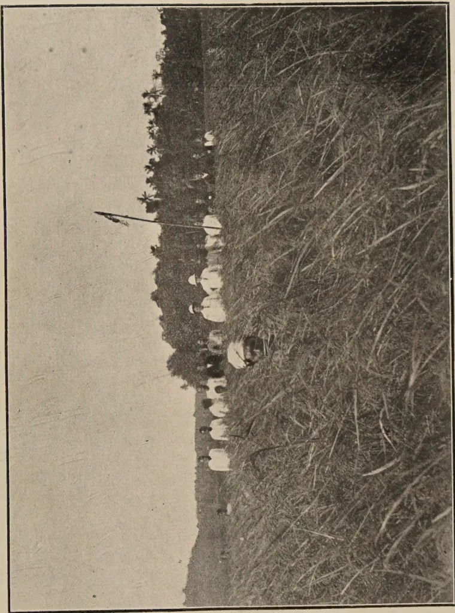
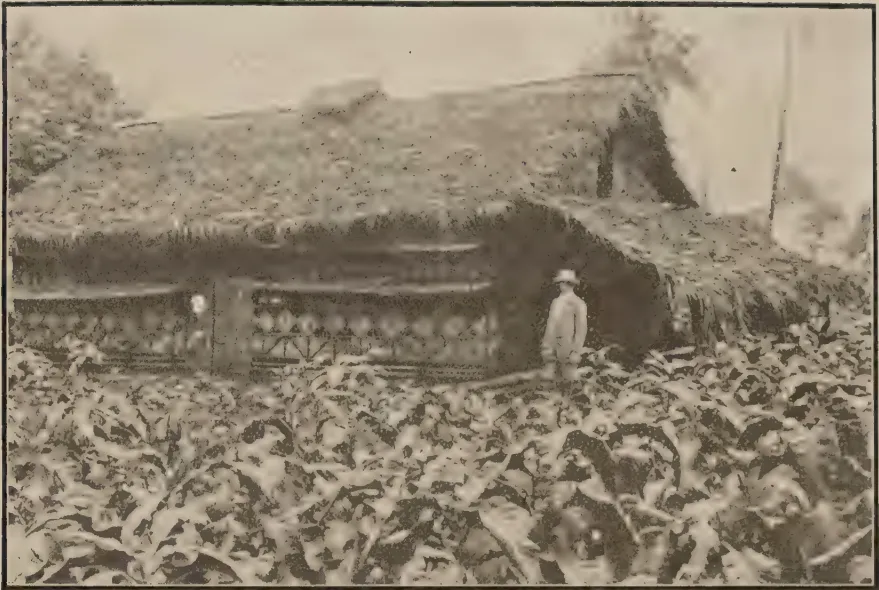
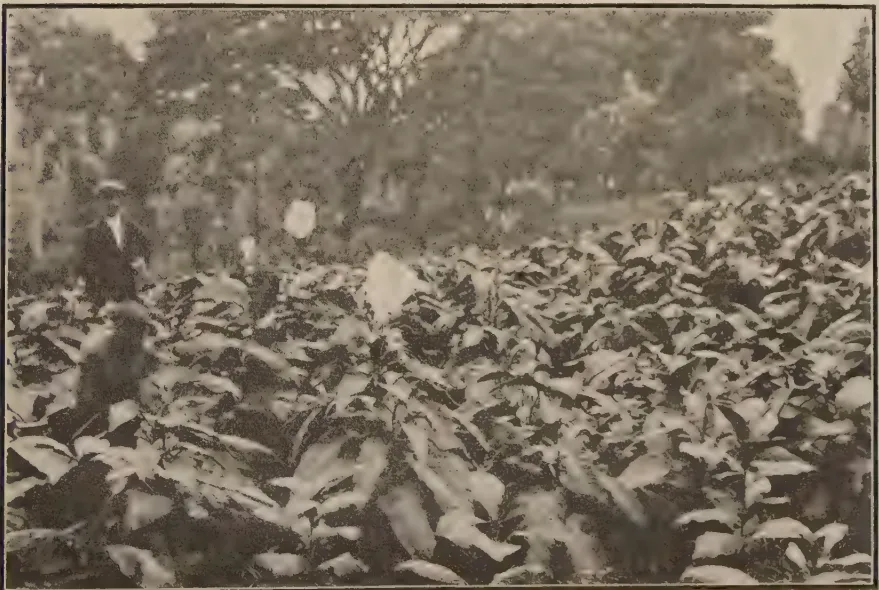
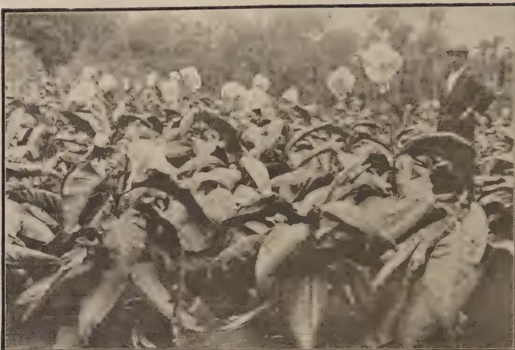
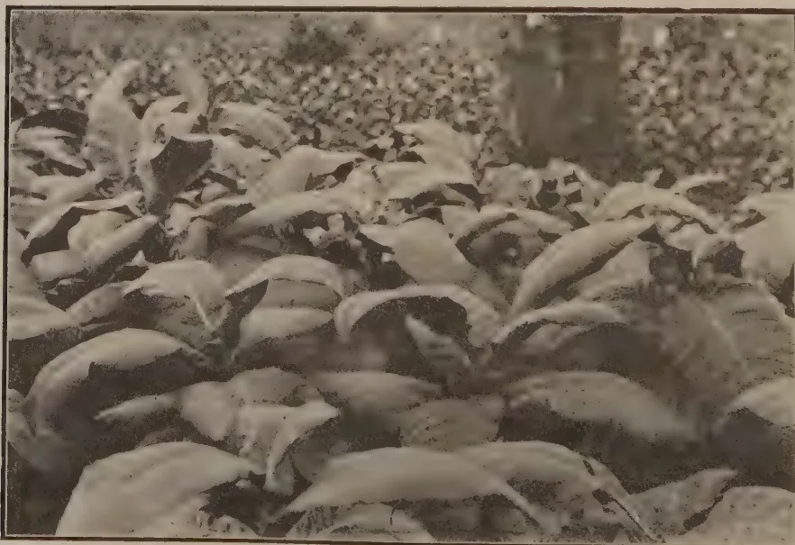
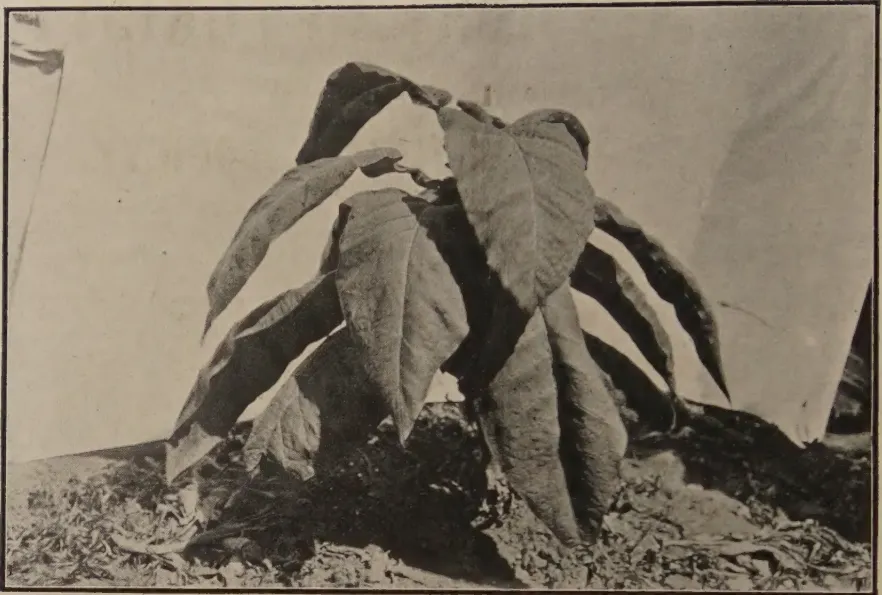
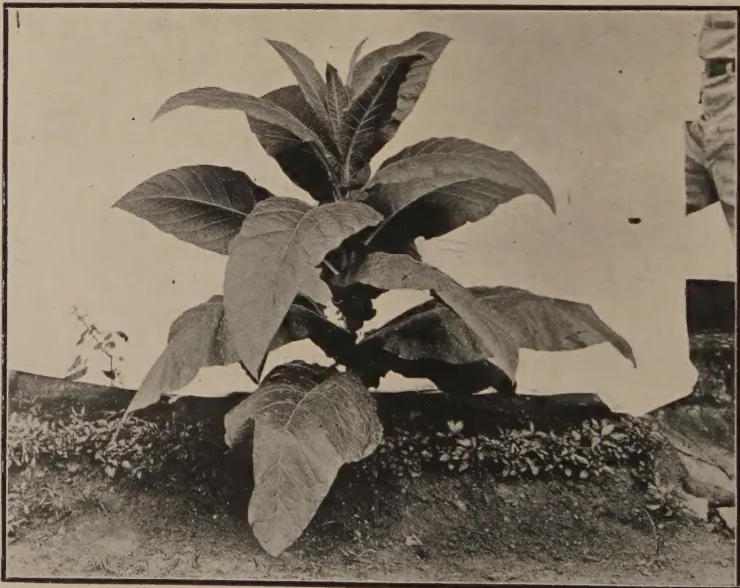

THE
TROPICAL AGRICULTURIST:
JOURNAL OF THE
CEYLON AGRICULTURAL SOCIETY.
VOL. LIII.
PERADENIYA, SEPTEMBER, 1919.
No. 3.
TRANSPLANT YOUR PADDY.
“What means can I adopt in order to increase the yields of my fields” should be in the minds of all owners and cultivators of paddy. The Maha season is beginning and sowing will soon be common throughout most districts of the colony.
Do you transplant? If not, why not?
Some will state that they cannot transplant because there is a shortage of labour. Be quite sure of this reason before adopting it as a final one. Labour is often to be found for the looking for it particularly in the villages and in village paddy fields. Do not accept this excuse at the present time, until you have exhausted every possible means of securing labour.
Others will state that transplanting costs money. The average cost of transplanting an acre of paddy is Rs. 9 to Rs. 10. At present prices the whole of this is met by the value of the seed paddy saved. The increased yield resulting from the transplanting of the paddy is net profit. The costs of transplanting are naturally higher in districts in which the system is not generally practised but these costs are gradually reduced as the cultivators become accustomed to the work. Costs are higher where transplanting is done by the single-plant method. To consume time by sorting out plants so that they can be planted singly is unnecessary. Two to three plants planted at distances ranging from 6-9 inches apart give good results and give an economical and practical method for general adoption.
Others state that transplanting lengthens the period of growth. This is undoubtedly correct. The total period of growth may be extended by two to three weeks. Transplanted plants take some time before they become re-established and this tends to lengthen the growing period. Growers that
154[SEPTEMBER, 1919.transplant must therefore take this fact into consideration when they consider what varieties they should choose for cultivation and what times they should select so as to avoid attacks of paddy-fly. Again, in irrigable tracts consideration must be given to the possibility of growing transplanted and broadcasted paddy in the same area.
Again, it is stated that transplanting cannot be carried out in weedy fields. Naturally weeds have an opportunity to grow in transplanted fields during the period that the paddy is taking to re establish its growth after transplanting but weeds are generally the result of faulty cultivation. Thorough preparation of the land results in fewer weeds, and the transplanters of paddy in the Central Province have learned that it pays to weed. There is no reason why paddy should be the only crop that receives no attention after it is sown. Weeding is most carefully carried out in other crops. It likewise pays to weed paddy. Everything therefore points to transplanting being possible over considerable areas of paddy fields in the colony. The practice is now common in the Central Province and is being gradually introduced into other districts.
It must not be assumed that transplanting can be carried out in every field. To attempt to transplant in lands that are very deep or in lands which are not supplied with a regular supply of water either by irrigation or by rainfall would result in failures in some seasons. Where water can be depended upon transplanting should succeed and there are very extensive tracts in which this system can be adopted.
It is therefore desirable that everyone possessed of paddy fields should ask himself whether there are reasons why transplanting should not be tried in his lands. He should make a small experiment, if he so desires, to begin with and then increase the acreage under transplanting from year to year.
Transplanting will save seed paddy and will result in increased crops. The present shortage of seed paddy in many parts emphasizes the importance of sowing in seed whenever possible and the recent shortage of imported rice emphasizes the importance of producing as much paddy as possible in the colony.
The North-East season is approaching and is the important rice-growing season. Let everyone therefore undertake some transplanting if possible. Do not condemn the practice until you have made a trial. He that makes excuses is of no assistance to the colony at the present time. Action by all is required and landowners can set an example by establishing demonstration plots of transplanted paddy throughout the colony. Agricultural Instructors are available in all districts to give assistance and advice, and other information can be secured by application.
SEPTEMBER, 1919.]155It is known that there are many areas which are not suited to transplanting, but there still remains thousands of acres which can be successfully transplanted. Will the owners of paddy lands respond to the appeal which is now made to them?
[Food Production Circular No. 3.]
Experiment, both in Ceylon and in many other countries, has demonstrated beyond doubt that transplanting paddy results firstly in an economy of seed paddy and secondly in increased yields. Returns of more than double the ordinary yields from broadcasted paddy have been secured from transplanted paddy. This has been frequently demonstrated in Ceylon and at the present time a very great portion of the paddy fields in the Central Province is transplanted.
There are large areas in the colony where there is good land and adequate water supply either from tanks or from rainfall in which transplanting could be practised with advantage.
Transplanting can be done from nursery beds or by utilizing plants thinned out from broadcasted fields.
The age at which plants are transplanted is most important. Six months paddy should be transplanted before the plants are six weeks old, 4 months paddy before they are 4 weeks old and so on. One week per month is the usual custom. If plants are allowed to grow old before they are transplanted they do not tiller or branch well and increased crops are not obtained. Young plants are essential to success in transplanting paddy. The land must be soft when transplanting is carried out. It should be possible to push the fingers into the soil easily. If the land is not soft and well prepared increased cost of transplanting results and the plants do not "take" well.
Remove the young plants in bundles. Before transplanting twist off parts of their green heads and remove the longest of their roots. Then transplant in the soil, two to three plants in each place at distances of six to nine inches apart.
These plants will turn slightly yellow, but do not put on more than 1 inch of water until they begin to assume a green colour again. The water can then be increased to 2 inches and later on to 4 inches in depth.
Weeds may grow between the plants if the soil has not been properly prepared. They should be pulled out. It pays to weed.
Transplanting should not cost more than Rs. 9 to Rs. 10 per acre. This is saved by the reduction in the quantity of seed used. Only to bushel of paddy is necessary for one acre of transplanted paddy. The crop also is increased, so that not only is more paddy grown from the same land but the profit is likewise increased.
Department of Agriculture,
Peradeniya.
August 26th, 1919.
156[SEPTEMBER, 1919.With the shortage of rice imports, the thoughts of all agriculturists naturally turn to the methods that can be used to obtain increased crops from the fields in the colony that are already available for paddy cultivation.
Several means suggest themselves and these have been urged upon all cultivators. Better seed naturally results in better crops and if care is taken with selection and this selection is maintained increases of up to twenty per cent. can easily be secured.
Better cultivation methods and the use of better ploughs result in increased crops and ploughing demonstrations have been undertaken by the Kurunegala and Kegalle Food Production Committees.
The applications of manures have also been advocated and the practice of manuring is gradually becoming more common in progressive districts. Green or leaf manures are being used, cattle manure is used in some localities and the application of phosphates in the form of bone meal or bone dust has shown increased crops. Co-operative Credit Societies have been assisting villagers in securing phosphatic manures and this service is being appreciated. The cost of manures are however high and it has yet to be ascertained by direct experiment what quantities can be applied to the fields with the maximum of economic benefit. As soon as the newly opened areas for paddy at the Anuradhapura Experiment Station have had time to become more uniform in yielding capacity carefully planned experiments will be conducted on scientific lines, whilst other areas will be selected as soon as trained officers are available for their supervision.
Transplanting of paddy, however, is a certain method of securing increased yields. It has gradually spread in the Central Province and is now common throughout the greater part of that area. It must not be assumed, however, that transplanting can be carried out in all areas. In the efforts of the Agricultural Society to encourage transplanting there have been failures as well as successes. At the time of transplanting, the land must be damp. Transplanting in areas under tanks or where rainfall can be relied upon is to be recommended. It can be relied upon to give good results. In fact, the factors that are essential for the best results from transplanting are the following:—
A simple leaflet on transplanting of paddy has just been issued for distribution by all Food Production Committees in the hope that this method

A black and white photograph showing a group of people, likely workers, standing in a field of tall grass or paddy. They are positioned in the middle ground, with a line of trees and a flagpole visible in the background. The foreground is dominated by the dense, tall grass.Transplanted Paddy, Thithagoda, Matara.
This image shows a blank, aged, cream-colored page, likely an endpaper or flyleaf from an old book. The paper has a slightly textured appearance with some minor discoloration and faint smudges. A vertical crease is visible near the center, suggesting it was once part of a bound volume. There is no text or other markings on the page. SEPTEMBER, 1919.]157will be adopted largely during the coming Maha season. It may be urged that this method is costly as a quantity of labour is required. The cost of the labour will be recouped from the value of the paddy saved and labour costs can be reduced if transplanting of 2-3 plants per hole is adopted, instead of the more laborious method of single-plant. The cost of transplanting should not, however, exceed Rs. 9 to Rs. 10 per acre.
Sowing may be done in a nursery and transplanting done from this nursery. This course is desirable when a large uniform standard of paddy of the same age is required, as under certain irrigation works, or transplanting may be carried out with plants thinned out from growing fields as is done in many of the fields in the Central Province. Local conditions must be considered and the practice of transplanting so modified as to suit those conditions. Weeding of transplanted areas is also to be recommended as is fully worth the expenditure that has to be incurred.
In the Matara district determined efforts have been made by the Assistant Government Agent during the past two years to encourage transplanting. He has been ably assisted by the various Chief Headmen and the Matara Food Production Committee has obtained and distributed monetary grants to growers of transplanted paddy. The system of transplanting has been re-started again in Matara. Some of the results have been most encouraging and the landowners, paddy growers and headmen of this district should see that these efforts are maintained, and that every year records a greater area of transplanted paddy in the district. Many other localities in the colony should also endeavour to encourage transplanting of paddy. In this way, a substantial increase of paddy crops can be obtained.
The following report furnished by Agricultural Instructor KARUNANAYAKE and accompanied by photographic illustration, on one of the demonstration areas undertaken by MR. W. R. H. PERERA, Mudaliyar of Gangaboda Pattu, Matara, is of particular interest :—
| Centre | ... |
{ District : Matara. Village : Thihagoda. How reached : Cart Road. |
Nature and object of Experiment : To introduce the system of transplanting into the District.
Extent : 6 Kurunies sowing or 1/3 of an acre.
| Date | ... |
{ Sown : 10th March, 1919—2 Kurunies. Transplanted : 10th April, 1919. Harvested : 11th July, 1919. |
Nature of Soil : Clay loam.
| If manures used | ... |
{ Kind : Bone meal. Quantity : 40 lb. |
| Cost of Experiment |
{ Preparation : Rs. 5'04 Transplanting : Rs. 3'72 Manure : Rs. 2'25 |
Total Rs. 11'01 |
Pests and Diseases : The plants eared about a fortnight before those sown broadcast with the result that paddy flies appeared. Damage done was slight as precautionary measures were adopted at once.
General report on the growth : The plants showed a vigorous growth attaining a height of over 4 feet. The contrast between this field and those adjoining was remarkable.
Yield of the plot : 26 bushels and 6 kurunies.
Yield per acre : 80 bushels and 2 kurunies.
Results previous to experiment : 35 bushels per acre.
Remarks : The average yield of the tract for this crop is 30 bushels. Previous year about 25.
158
[SEPTEMBER, 1919.
EDWARD ELLIOTT, C.C.S. (RETIRED).
A few years back I wrote a series of Articles in the TROPICAL AGRICULTURIST on this subject, up to the year 1907, and was by the courtesy of the Editor enabled to send a complete copy of my contributions, in a book form, to each Cutchery of the Island, as well as to the Government Record Office in Colombo and the unofficial members of Council.
In view of the recent discussions in the Colony regarding the supply of food, I have collated from the Ceylon Blue Books and Administration Reports in the Colonial Office Library in London, the corresponding figures for the last ten years and so bring up to 1917 the following:—
| Average area under cultivation in 000 acres. | Rainfall. | Estimated average crop, in 000 Bushels of paddy. | |||||||||||||||||||||||||||||||||||||||
|---|---|---|---|---|---|---|---|---|---|---|---|---|---|---|---|---|---|---|---|---|---|---|---|---|---|---|---|---|---|---|---|---|---|---|---|---|---|---|---|---|---|
| 66 | 71 | 76 | 82 | 87 | 92 | 97 | 02 | 07 | 08 | 68 | 80 | 85 | 96 | 92 | 99 | 79 | 70 | ||||||||||||||||||||||||
| to | 66 | to | 71 | to | 76 | to | 82 | to | 87 | to | 92 | to | 97 | to | 02 | to | 07 | to | 08 | to | 68 | to | 80 | to | 85 | to | 96 | to | 92 | to | 99 | to | 79 | to | 70 | ||||||
| 62 | 67 | 62 | 67 | 72 | 72 | 78 | 78 | 83 | 83 | 88 | 93 | 93 | 98 | 98 | 03 | 03 | 08 | 12 | 13 | 17 | 17 | 17 | 17 | 17 | 17 | 17 | 17 | 17 | 17 | 17 | 17 | 17 | 17 | 17 | 17 | 17 | |||||
| Province | |||||||||||||||||||||||||||||||||||||||||
| Western | |||||||||||||||||||||||||||||||||||||||||
| 70 | 82 | 79 | 82 | 79 | 94 | 107 | 117 | 117 | 116 | 115 | 114 | 114 | 106 | 106 | 106 | 106 | 106 | 106 | 106 | 106 | 106 | 106 | 106 | 106 | 106 | 106 | 106 | 106 | 106 | 106 | 106 | 106 | 106 | 106 | 106 | 106 | 106 | ||||
| 48 | 48 | 50 | 50 | 71 | 71 | 63 | 65 | 81 | 84 | 84 | 72 | 75 | 75 | 75 | 75 | 75 | 75 | 75 | 75 | 75 | 75 | 75 | 75 | 75 | 75 | 75 | 75 | 75 | 75 | 75 | 75 | 75 | 75 | 75 | 75 | 75 | 75 | 75 | |||
| 61 | 65 | 65 | 68 | 57 | 66 | 60 | 62 | 62 | 61 | 63 | 67 | 67 | 67 | 67 | 67 | 67 | 67 | 67 | 67 | 67 | 67 | 67 | 67 | 67 | 67 | 67 | 67 | 67 | 67 | 67 | 67 | 67 | 67 | 67 | 67 | 67 | 67 | 67 | |||
| 18 | 26 | 36 | 36 | 38 | 31 | 30 | 28 | 32 | 30 | 28 | 28 | 28 | 28 | 28 | 28 | 28 | 28 | 28 | 28 | 28 | 28 | 28 | 28 | 28 | 28 | 28 | 28 | 28 | 28 | 28 | 28 | 28 | 28 | 28 | 28 | 28 | 28 | 28 | |||
| 60 | 64 | 64 | 63 | 88 | 79 | 68 | 64 | 84 | 98 | 96 | 99 | 99 | 99 | 99 | 99 | 99 | 99 | 99 | 99 | 99 | 99 | 99 | 99 | 99 | 99 | 99 | 99 | 99 | 99 | 99 | 99 | 99 | 99 | 99 | 99 | 99 | 99 | ||||
| 86 | 78 | 78 | 95 | 07 | 105 | 101 | 99 | 110 | 114 | 112 | 113 | 113 | 113 | 113 | 113 | 113 | 113 | 113 | 113 | 113 | 113 | 113 | 113 | 113 | 113 | 113 | 113 | 113 | 113 | 113 | 113 | 113 | 113 | 113 | 113 | 113 | 113 | ||||
| 65 | 57 | 57 | 58 | 56 | 61 | 55 | 54 | 63 | 63 | 66 | 72 | 72 | 72 | 72 | 72 | 72 | 72 | 72 | 72 | 72 | 72 | 72 | 72 | 72 | 72 | 72 | 72 | 72 | 72 | 72 | 72 | 72 | 72 | 72 | 72 | 72 | 72 | 72 | |||
| 4 | 6 | 7 | 7 | 11 | 16 | 24 | 15 | 28 | 39 | 34 | 43 | 43 | 43 | 43 | 43 | 43 | 43 | 43 | 43 | 43 | 43 | 43 | 43 | 43 | 43 | 43 | 43 | 43 | 43 | 43 | 43 | 43 | 43 | 43 | 43 | 43 | 43 | ||||
| 44 | 56 | 56 | 59 | 48 | 60 | 57 | 72 | 85 | 84 | 76 | 77 | 77 | 77 | 77 | 77 | 77 | 77 | 77 | 77 | 77 | 77 | 77 | 77 | 77 | 77 | 77 | 77 | 77 | 77 | 77 | 77 | 77 | 77 | 77 | 77 | 77 | 77 | ||||
| 456 | 482 | 515 | 515 | 581 | 588 | 574 | 589 | 663 | 687 | 662 | 680 | 680 | 680 | 680 | 680 | 680 | 680 | 680 | 680 | 680 | 680 | 680 | 680 | 680 | 680 | 680 | 680 | 680 | 680 | 680 | 680 | 680 | 680 | 680 | 680 | 680 | 680 | ||||
| Total | Total | Total | |||||||||||||||||||||||||||||||||||||||
| 11,653 | 11,653 | 11,653 | |||||||||||||||||||||||||||||||||||||||
| 10,840 | 10,840 | 10,840 | |||||||||||||||||||||||||||||||||||||||
| 12,300 | 12,300 | 12,300 | |||||||||||||||||||||||||||||||||||||||
| 11,756 | 11,756 | 11,756 | |||||||||||||||||||||||||||||||||||||||
| 10,700 | 10,700 | 10,700 | |||||||||||||||||||||||||||||||||||||||
| 9,225 | 9,225 | 9,225 | |||||||||||||||||||||||||||||||||||||||
| 8,349 | 8,349 | 8,349 | |||||||||||||||||||||||||||||||||||||||
| 8,606 | 8,606 | 8,606 | |||||||||||||||||||||||||||||||||||||||
| 7,051 | 7,051 | 7,051 | |||||||||||||||||||||||||||||||||||||||
| 6,428 | 6,428 | 6,428 | |||||||||||||||||||||||||||||||||||||||
| 6,072 | 6,072 | 6,072 | |||||||||||||||||||||||||||||||||||||||
This statement discloses that there was between 1862 and 1903 very satisfactory progress and development, amounting to a doubling of the produce and a 50 p.c. addition to the area cultivated, while the maximum crop of 14 millions bushels off 761,000 acres, was reached in the Agricultural year ending 30th April, 1903. It is therefore disappointing to find that the steady progress which had marked the previous 40 years had subsequently not only not been maintained, but that notwithstanding the large sums spent in the present century on irrigation, there had been an actual falling off in production.
The short average rainfall, 60 inches, which prevailed in the period 1900-12, may account for the reduction during this interval, both in extent sown and produce as compared with the figures for the previous decade. But this explanation does not apply to the following period (1912-17) when the average rainfall was more plentiful (91 inches), and the total acreage sown reached 680,000 but the crop was only 12.6 millions bushels or a million less than it was in the ten years 1898-1907, although there was a bumper crop in 1917, when the rainfall was 99 inches, and a crop of 13 millions off 698,000 acres cultivated.
Though there has been this shrinkage in the figures for production for the whole Island, happily this has not been the case in the North-Western Province, where there has been a continuing advance both in the area cultivated and average production, which have exceeded all previous records and risen to 100,000 acres and 2 million bushels. Of this the Seven Korles contributed nearly half, and the villagers of Galagamuwa exported 512 tons of rice and 1,437 tons of paddy against 74 in 1912. In this connection I would refer to the suggestion made in my former contribution that the railway fare in paddy should be reduced to the VIth class rate of 8 cents per bushel per mile, instead of being the same as for rice.
The North-Central too is apparently making gigantic strides with an average during the period of 43,000 acres cultivated, and a production of over a million B. P., indeed under the favourable climatic conditions of 1917 (99 inches) it rose to over two millions and not for the first time during its modern history. "Lest we forget" it is well to mention that this is just 20 times what it was in the sixties of the last century.
In the Northern Province there was also an encouraging advance of 30 p.c. especially in Mannar, where doubtless due to the restoration of the Gian's Tank the area cultivated and production was nearly doubled, but there is considerable room for further extension which would attend if "cheap land" were available. It is to be hoped that the restoration of the Kanu Keni Tank, which burst in 1911, as recently asked for by the Mullaitivu people has been acceded to.
The Central and Southern Provinces have both kept up to the former figures, but there has been a falling off in the Western, Uva and Sabara-gamuwa Provinces.
In the Eastern Province, during the two last periods short crops are reported especially in the Batticaloa district, where steady progress had previously been the rule, and where I gather there had been additional expenditure of recent years, designed to increase the water supply.
160[SEPTEMBER, 1919.The comparative average figures are as follows :—
| Acreage sown. |
Crop Bushels. |
Average Rainfall. |
|
|---|---|---|---|
| 1898-1907 | 845 | 1430 thousands | 82 in. |
| 1908-1912 | 76 | 1129 " | 66 " |
| 1913-1917 | 77 | 986 " | 91 " |
| P. C. of reduction | 8 | 31 on 1898-1907 |
As the largest cultivation in Batticaloa is the Munmari, the preliminary operations for which are undertaken during the fourth quarter of the Calendar year, a favourable N. E. is essential for this purpose, and to fill the tanks to provide water for the maturing of the crops in the earlier months of the ensuing year, as well as for the Karavelama cultivation then undertaken of the lower lying land especially in the Pattipola area.
The small reduction in the extent sown may therefore be ascribable to climatic shortcomings, but taken as indicative that the cultivators made the most of their opportunities. Although insufficient rain, as in 1916, may be responsible for a portion of the reduction in production it is significant that it is nearly 13 p.c. below that of the previous period (1908-12) when the rainfall was admittedly very low (25 p.c. less). This fact suggests the enquiry if there has not been some other circumstance to account for it, and which may have had an unfavourable effect.
I gather from the report of the Select Committee of Council on the draft of a new Irrigation Ordinance (1918) that under the clause of a former Ordinance, not only the control of the water supply was vested in the Officers of the Irrigation Department, but also the management of the cultivation and that the rules originally framed by the cultivators themselves under the Presidency of the Government Agent, were replaced by rules drawn up by the Director of Irrigation.
This system was enforced about 1912 and though Sir H. McCALLUM promised that the management and control of the cultivation should be restored to the Government Agent, this was not done up to 1917.
From the departmental reports I gather that the chief cause of complaint of the Irrigation Officers is alleged "wastage of water." As these gentlemen have had no practical experience of paddy cultivation, this term really means a consumption in excess of arbitrary or theoretical limits fixed by them on data not disclosed in their reports. Thus the Kalmunai Engineer reports (1915) "the rules for distribution of water are not strictly observed and there is much waste."
Nor are the instances of economy due to supervision given in the irrigation reports convincing, as they are founded on the depletion in the tanks, in the interval between the beginning and the end of cultivation, but do not take into consideration any possible repletion during the period. Thus in the case of Kanthelai, it is reported that while in 1913 for 2935 acres the water in the tank was reduced from a depth of 25 ft. 2 in. to 12 ft. 3 in. or 12 feet 11 inches in 1917 for 3328, this reduction was only 9 ft. 2 inches (25 ft. 6 in. to 16 ft. 4 in.)*
Being aware the cultivation referred to takes place during the first half of the calendar year, to see if there was any possible local repletion in either year, I referred to the R. F. Returns and find that in both, there was considerable rain in January and that in 1917 there was a further contribution of 23 inches (on 34 days) of which 17 fell in February and March while in 1913 it was only 13 inches on 22 days. This additional supply it must be noted was a double blessing, as it fell on the cultivated area, as well as on the drainage basin of the tank, and may be roughly taken as equivalent to the reduced demand on the reservoir.
* This is liable to an addition of probably a foot, as the equivalent at the lower level, of the extra 4 inches at top in 1917 over 1913.
SEPTEMBER, 1919.]161I am unable to ascertain what the Kanthalai (Tamblegam) crop was in the respective years, but the returns for the whole Trincomalie district were in 1917 30 p.c. less than in 1913.
On the other hand the Batticaloa cultivators have complained bitterly of the action of these officers and agitated for a return to the old system, under which all details as to cultivation and distribution of the water were managed by their own headmen under the supervision of the Government Agent. Though possibly post hoc, sed non propter hoc, it is a suggestive coincidence that a serious reduced production, of over half a million bushels, should synchronise with the new system of supervision.
It is a matter of congratulations however that the Select Committee already referred to, decided that the control of the cultivation should be revested in the Government Agent and his headmen;—but as regards the control of the Water supply, suggested that “while generally operating in works of considerable magnitude this should be in the hands of the Irrigation Officer, the Government Agent subject to certain limitations may well be entrusted with a power of intervention in emergencies.”
I fear this compromise will be found to be difficult to work in practice, and it would have been better to extend the arrangement existing in the North-Central Province, where it is stated the Government Agent is provided with Officers specially trained for the management of the major works under his control.
In fact the Irrigation Officer might as in the forest department be a subordinate to the Agent as regards the distribution of the water, and would consequently be available to check the preliminary distribution by the local headman, appointed for that purpose, such as the Irrigation Vannidu in Batticaloa.
I am surprised to see that two Government Agents rather objected to a complete reversion to the old system, as my three years' experience therein in the early nineties was decidedly favourable to the arrangement, especially the absence of complaints of partiality for reasons generally connected with native administration in the East, and which was probably due to observance of the injunction to moderation enjoined in the Tamil proverb—
“When watering the milk, favour the cat.”
or rather loss of water is inevitable and unavoidable, especially when it has to be conveyed to where required, through a considerable mileage of Channel, as in the Walawe area; or in Mannar, where the distribution channels are reported to run to 55 miles. Or, as in Batticaloa where it has to be sent from the big tanks down the sandy rivers to the Singapadi Anicut at the head of the cultivated area. There is also a certain amount of loss owing to the diversion and distribution below this being carried out by the “Sandy Dams” periodically constructed by the cultivators and which are easily breached. It appeared to me when serving in the district that a couple of intercepting anicuts and some short channels were required to secure fuller use of the “tail water” in the Pattipola Plain. For this reason I obtained the construction of the Sagamam Anicut and the provision of a channel from it to the fields to be irrigated.
I do not gather from the published reports, which I have perused for nearly every year since I left the Island, of any such additions though a large sum has been spent in providing further storage, for the more northerly Pattipola fields.
After the water has got to the field, there may be in some localities avoidable loss, but it is I think exaggerated.
Personally from 5 years' practical experience while opening 500 acres on the Walawe Estate, my sympathies in this matter are with the cultivators
162[SEPTEMBER, 1919.]as I suffered from similar views on the part of the Engineers I had to deal with. My complaints of insufficient water were met with the same stock assertions as I see repeated in recent published administration reports, and ascribed to leaky ridges, crab holes and similar unavoidable and practically irremediable contingencies. Luckily I was in a position to bring my complaints directly under the notice of the then Governor, SIR WEST RIDGEWAY, and so received a sympathetic degree of redress. Even then the less limited supply required careful distribution over the 500 acres served more directly from the main channel; but compelled me to abandon the tillage of 100 acres of aswedumised land dependent on a more circuitous branch channel, though the main canal was reported by the then Director of Works as capable of carrying water sufficient for 6,000 acres, but it was subsequently discovered that this was not the case.
My practical experience was that the paddy plant thrived best with a slight flow of water and that what is passed on is successively utilised at numerous lower fields, so that what is finally drained away is a small proportion of the original supply, indeed; while at each overflow it is repeated, an advantage the importance of which is I see emphasised by the Egyptian expert who made an experimental cultivation at Peradeniya. But he was apparently not familiar with the Ceylon practice of providing proper drainage, as shown by the Tamil names Vaikal and Vadechal for the supply inlet and drainage outlet.
Though he may be somewhat extravagant in his demands for water, the Batticaloa cultivator deserves infinite consideration as an industrious, enterprising, successful and practically experienced agriculturist, aware of what best suits his available resources, who has developed his district and increased its arable area four times and its production of rice six times in a period of sixty years.
Further, this enormous success was attained at practically no cost to Government, for as shown in my History of Paddy Cultivation (p. 58) the whole expenditure on irrigation (including maintenance) up to 1906 had been more than directly refunded, besides an indirect recoupment (see p. 75) amounting annually to Rs. 70,000 and which had increased to Rs. 78,000 by 1911 or 3 p.c. on 23 lakhs of Rupees, which probably covers the subsequent capital expenditure in the district on completed works.
Nor should it be overlooked that though his modes are below the standard theoretically advocated by his critics, the Batticaloa agriculturist cultivates four times the extent and produces twice as much paddy per head of the population as does the Kandyan goiya with his more careful methods, the much vaunted transplanting (as shown at p. 83 H. P.) and more favourable climatic conditions.
The working quality of the men, who have secured these creditable results has been recently expressed in the public papers by Mr. DE MEL, the estate proprietor and practical agriculturist, who found the Batticaloa coolies, whose services he had obtained to work on his estates on the Western Coast, so superior to the local labour available, as to be well worth its extra cost. To me, with my intimate knowledge of Batticaloa some years back, the surprise is that there is any surplus labour obtainable from that district and until otherwise explained, suggests the want of sufficient employment for all available in its home, as used to be the case.
The moral I wish to inculcate is that as efforts made for the last 30 or 40 years to induce the native cultivator to adopt what appear to the ruling powers improved modes of cultivation have failed, the true policy now is to co-operate in accordance with his views, and perhaps the most important point is "not to stint the water."
There are other ways of helping him on these lines, which I hope to go into in some detail on a future occasion, notwithstanding my four-score years.
SEPTEMBER, 1919.]163Select in the Field.—Go over your field just before the harvest time. Find area or areas where crop is of approximately like height, vigour and stand, and is free from disease. Avoid selecting from either over-growth or stunted growth, letting your aim be rather to get the seed from the best representative, sound portion of the whole crop.
Take only good plants.—Search plants having a good, strong bunch of bearing stalks. In doing so, follow the direction of the crop's bent, but work from side to side in such a way as to survey the whole area. It may be necessary when the crop is down, to turn the straw aside in order to gain a view of the stooling. A good plant should have a high average number of good sized heads, and should represent the type of the variety you want to propagate. Plants having six heads or more, of even height, from the ground, are generally to be selected.
Cut the big heads.—While holding the stalks in your left hand and exposing the heads to view, cut off with the small harvesting knife the heads that are big, nearly uniform in size, and are well filled with grains, the number of which should go above the average for the variety. Leave out the small or otherwise undesirable heads. Selected heads can be conveniently carried in a flour sack by men; women may prefer using the "tapiz" folded about the waist for the same purpose. Roughly speaking, rice heads thresh out at two-thirds the original volume. The safest course would be to cut, say one-third more than the amount you think sufficient for sowing.
Discard red-kernelled heads.—Hold out one by one about one hundred heads in the bright sunlight and see if they are all clear white. Should any one head look opaque due to the red kernel inside the hull, the whole lot should be gone through and such heads culled out.
Eliminate light grains.—Thresh out the grains. Dry them in the sun till they become tough and hard—not brittle. Then pass them through a fanning mill, which will blow out a great many of the light and small grains, retaining the large, heavy ones. Screen off the remaining imperfect grains by means of a bamboo sieve. Flail if there is no mill on hand.
Save the seed.—Keep the seed in a safe, ventilated place where the temperature does not get too hot during any part of the day.
Select every year.—Continue the seed selection from year to year.
Grow a seed plat.—A better way than simply making a mass selection is to use the best grade of seed which has passed through the sieve first for planting a small plat and the remainder for planting the general crop. The next year take none from the field crop, but select seed from the small plat, and after grading, use the best of it for planting the small plat and the remainder for planting the large field, and so on from year to year.—
PHILIPPINE FARMER, Vol. V, No. 7. 164[SEPTEMBER, 1919.The importance of the sweet potato crop in the food resources of most of these islands is considerable. In very many of the Experiment Stations of the smaller West Indies a series of experiments has been carried out for many years on this crop chiefly with a view to ascertain the varieties which give the largest yield, and which are best suited to local conditions. From Agricultural Extension Notes No. 2, published by the Porto Rico Agricultural Experiment Station, February 15, 1919, it appears that the question of sweet potato cultivation is also engaging the attention of the Agricultural Department in that island. It is stated that the sweet potatoes grown in Porto Rico are not usually of as good a quality as those grown in the United States. The reason given is that the potatos do not ripen uniformly, and that when unripe they cannot be kept long enough to cure properly. The note states that a thoroughly ripe sweet potato, which has been kept in a pile covered over with straw and earth for about two months, is superior for eating to unripe freshly dug roots.
As is known in these other islands, some varieties are of very much better quality for culinary purposes than others. In Porto Rico, in the Agricultural Experiment Station, the two varieties known locally as 'Blanca' and 'Mamey' have proved superior to other varieties experimented with there. Well drained sandy soils will produce potatos of much better quality than heavy clay lands. It is always advisable also to plough under a good crop of cowpeas or velvet beans in preparation for planting potatos. As regards fertilizers, the advice from Porto Rico is to spread in the furrows, which should be 3 or 4 feet apart, wood-ashes and bat guano, or 200 lb. acid phosphate per acre, and also 50 to 100 lb. sulphate of potash when the price of the latter becomes lower. The fertilizer should be covered by ploughing two furrows together, and the slips planted in the ridge formed. It is advised, in order to be sure of a good supply of plants of any desired variety, to make a seed bed. For this purpose the potatos are laid side by side close together, and covered with about inch of soil. The beds should be shaded lightly, and watered every day, if necessary. When the sprouts are 5 to 6 inches long they may be broken off and planted out. The seed bed will produce several crops of sprouts.—AGRICULTURAL NEWS, Vol. XVIII., No. 447.
The following instructions for preserving small quantities of seed, given in the Agricultural Extension Notes of the Porto Rico Department of Agriculture, No. 4, March 15, 1919, will probably be found useful: Take a glass jar with an air-tight cover and place some fresh calcium chloride in the bottom of the jar, place on top of the calcium chloride a piece of wire screening or even a piece of wood that is not tight-fitting, place the seed in small cotton bags, and fill up the jar. Be sure that the jar is covered air-tight. The seeds should be air-dried before being placed in the jar. If it is observed that the calcium chloride becomes very moist, it must be changed. In this way seeds can be kept fresh for a considerable length of time.—AGRIC. NEWS, Vol. XVIII, No. 447.
SEPTEMBER, 1919.]165The Mysore Gardens Department has issued the following leaflet (No. 3 of 1919):—
Maize is supposed to be indigenous to South America whence it was imported into Europe and later on into India. It is one of the larger and more important cereals of the world. Excepting rice, it is more widely cultivated than any other cereal. This plant furnishes the food grain of a great portion of the American continent. The crop is raised by seeds, and it is an irrigated one. The plant grows to a height ranging from 4 to 12 feet according to variety. This crop requires a deep, moist and fertile soil manured richly.
The land should be brought into a fine tilth by ploughing or digging. About 25 cartloads of well-rotted farmyard manure should then be worked into the soil.
The seeds should be sown in furrows 1 ft. deep and 6 in. apart, the distance from furrow to furrow being 2 feet. The seed rate is about 10 lb. per acre.
The crop should be irrigated once a week in the absence of rains. Maize can be grown under sewage also.
The plants should be earthed up and the crop should be weeded and stirred when the plants are 4 in. high. This operation should be repeated twice, i.e., when the plants have attained a height of one foot, and two and a half feet respectively. If earthing up is not done, the plants will lodge on the ground. The plants should be thinned gradually so as to leave a distance of 18 in. from plant to plant. All side shoots should be removed as often as they appear. This operation is necessary to prevent food materials required for cob formation from being taken away by the side shoots.
The crop is usually ready for harvest in two to three and a half months from the time of sowing, according to the variety. About 10,000 to 15,000 cobs or 2,500 to 3,000 lb. of grain per acre can easily be obtained.
The cost of cultivating an acre of maize amounts to about Rs. 60, and the gross income will be about Rs. 90.
The cobs may be used as a vegetable if gathered while tender. If maize is planted for fodder, about 40 lb. of seeds per acre must be sown thickly mixed with leguminous crops such as soybeans, cow peas, etc.
The varieties known as Manila Moro and 'Hickory King' are recommended for commercial gardening. For home gardening the variety known as 'American Sugar' Corn is the best.—MYSORE ECONOMIC JOURNAL, Vol. V., No. 7.
166[SEPTEMBER, 1919.The nutritive property of the residual cake left after the oil has been extracted from groundnuts has caused it to be regarded for a long time as a valuable cattle food. An article in TROPICAL LIFE for March 1919, draws attention however to the introduction of certain improvements in the method of oil expression, whereby a cake can now be obtained, it is said, of a definite standard of purity, thus enabling the flour to be used as a nourishing and palatable food for human beings.
This standard groundnut cake has been designated 'nutamine,' and the methods employed in preparing this article are described as follows: In order to 'pick over' the nuts more satisfactorily and effectively, it is suggested that they be cleaned on a mechanical washer, and then thoroughly dried in a mechanical drier. After this, the inner red skin is removed by means of a blast of hot air playing on the seeds while they are being whirled round in a large drum. In this way the seeds are dried, cracked, and the red skin blown away. By this method the preliminary drying of the seeds is avoided, and the cleaned seeds are left practically free of their red skin, and ready for oil expressing. To obtain good, clear oil and good cake, hydraulic presses are used, and the expression should always be carried out cold, as the resulting cold-drawn oil is nearly colourless, has a pleasant taste and odour, and can be used as a substitute for olive oil. Such oil also keeps remarkably well.
The resulting cake, however, still contains between 10 to 15 per cent. of oil and this is too much for the production of 'nutamine.' The cake must be subjected to a second expression, being warmed this time. The resulting oil, of an inferior grade, is widely used in soap making, and the cake left after this second pressure should contain about 5 per cent. of oil, the standard aimed at. This cake, when finely ground in an ordinary roller mill, and subsequently passed through a sieve, is the preparation known as 'nutamine.'
From this fine flour thus obtained, biscuits and many other articles for human consumption can be made, for if the oil has been properly removed, the flour has quite a pleasant taste, and possesses a high protein content. Being deficient in carbohydrates, the flour should be ordinarily mixed with a proportion of wheat flour, and this gives a highly nutritious mixture, and supplies a concentrated and economical food. Bread and biscuits made from the following recipe are said to keep well, and to possess a pleasant taste, the dried milk adding to the food value. Groundnut flour, 84 parts; dried milk, 14 parts; sodium bicarbonate, 2 parts. Biscuits made from such a mixture are reported to be light, and to keep well in a tin. It would appear, however, that should any one in these islands desire to make experiments with biscuits from groundnut flour, the quantity of fresh milk needed to moisten the flour could well take the place of the dried milk in the recipe given above.
It is stated that whilst wheat, oats, and several other cereals are markedly deficient in the so-called basic aminoacids, groundnut cake and flour contain a large amount of these. Hence the reason for the designation 'nutamine.'
—AGRIC. NEWS, Vol. XVIII., No. 444.
SEPTEMBER, 1919.]167The recent introduction of Fordson Tractors into Ceylon for use on coconut estates has attracted attention to their possibilities in connexion with the agriculture of the Colony.
For information on Farm Tractors the Bulletins of the United States Department of Agriculture may be consulted. The information given in these bulletins on this subject has been summarized from detailed reports sent in by several hundreds of owners and users of tractors. They are safe and reliable because the figures given represent average results obtained in actual service and not maximum figures worked out by expert operators to test the possibilities of these tractors.
To quote from a bulletin :—“ This bulletin is not intended to influence the farmer either for or against the tractor as a source of power, but only to assist him in determining whether his own conditions justify the use of such power.”
In these notes, taken over and modified for Ceylon conditions it is hoped to do as much for the prospective purchaser in Ceylon of such tractors.
The bulletins laid under contribution are :—“ Tractor Experience in Illinois ” (Farmers' Bulletin 963), “ The Gas Tractor in Eastern Farming ’ (Farmers' Bulletin 1004), “ The Farm Tractor in the Dakotas ”. (Farmers' Bulletin 1035).
Of these, the last mentioned bulletin No. 1035 is the latest, published in March, 1919 ; it revises and brings up to date the information in the previous bulletins.
Farm Tractors first came into general use when millions of acres of virgin prairie were opened up by settlers in the Northern Portion of the Great Plains. At that time, horses were scarce and highly priced whilst little if no feed was available. Besides, work with horses was slow and tedious and the large returns got from such virgin soils warranted investment of considerable capital on such farm tractors. These were large tractors working 6-to 12-or 14-gang ploughs.
The reaction set in when crops began to fail ; the machines were quite crude in construction, there were considerable delays for repairs and spare parts due largely to inefficient handling and overloading. Horses then came into favour as motive power. In the meantime these tractors were being developed and improved, smaller and less expensive tractors were put on the market when about 1916, interest was again reawakened in them. The Great War helped largely to bring back the tractor with other labour-saving machinery. Such a return was easy because farming is carried out in America in “ The Corn Belt ” on an extensive scale and the areas farmed are comparatively large.
168[SEPTEMBER, 1919.From the detailed reports sent in by hundreds of owners it is found that three-plough machines are the most popular; this is recommended by over 50 per cent. of the farmers whilst about 30 per cent. recommend the four-plough machine.
The two-plough machine "does not increase sufficiently the amount of work which one man can do, hence does not possess, in an adequate degree, the greatest advantage of the tractors in general, namely, timeliness in performing farm operations through much more rapid work than is possible with horses. Moreover, a 2 plough tractor does not ordinarily develop enough power to make it suitable for operating separators, large ensilage cutters, etc., which are tasks for which power is required on many eastern farms."
From the information in the latest bulletin it is possible to summarize some figures in the following table:—
| Size of outfit. | Size of Farm. | Present Cost. 1919. |
Gang Ploughs. |
|
|---|---|---|---|---|
| Minimum Acres. |
Average Acres. |
|||
| 2 - plough ... | 185 | 250 | $ 900-1,200 | $ 125 |
| 3 - plough ... | 225 | 300 | 1,100-1,800 | 175 |
| 4 - plough ... | 315 | 400 | 1,600-2,400 | 250 |
Owing to the increased cost of labour and material the prices have increased considerably. The minimum size of a farm refers to the smallest size of farm for which these tractors should be purchased and not the size on which they can be used profitably, this is shown by the average size of farm.
It is necessary to point out that these figures will vary according to the different types of farming and should be viewed here in Ceylon purely relatively.
The difficulty in working a tractor is a decided disadvantage. It is considered most unwise for a man to gain the necessary experience by experimenting with his own machine. It is not sufficient for a man to understand the running of stationary engines or automobiles. "The mere starting of the motor, changing of gears, and stopping are simple matters, and any farmer can learn quickly to do these, but the important thing is the ability to detect trouble the minute it begins to develop, and to be able to remedy it promptly instead of allowing it to run along until an expensive delay results." The initial difficulty in Ceylon will be to get proficient operators who can handle a tractor properly. Some manufacturers in America train owners to operate their machines and the charge for instruction is credited as part payment of the machine. They also keep the tractor in repair free of charge during the first year's service.
The experience in America is that with reasonable care there is little if no expenses for repairs in the first year. In the second year comparatively few machines go through the working season without repair charges. During the third year the repair charges may increase to double the second year.
It is difficult to estimate the repairs for the entire working life, this will vary according to the number of days used annually as well as to the proficiency of the operator and to the care given to the outfit when in use and when idle.
From careful comparison of a large number of reports it is calculated that the annual charges on repair, works out to 4 per cent. of the initial cost of the outfit.
SEPTEMBER, 1919.]169For tractors of modern design there are really no definite figures. A tractor, it must be remembered, works under extremely severe conditions. The bumps and jars due to rough and uneven ground and to obstructions, and the almost constant shower of dust and dirt it gets when working very soon attacks not only gears and bearing surfaces outside but also inside the engine itself. This wear due to dust is a most serious matter and purchasers should see whether a machine is provided with an efficient filter for the air intake to the carburettor. This is a very great improvement in modern machines.
With reasonable care it is stated that a tractor should last for 9 years consisting of 50 working days a year (or 10 years of 45 working days for a 2-plough machine) i.e. 450 working days. It will be safer to estimate a less period of activity when purchasing a machine although the estimate given is a good average estimate. With inefficient handling a tractor may wear out in 6 years or less and perhaps after considerable repair charges.
We shall consider figures for ploughing only. The averages from figures furnished by tractor owners for a working day of 10 hours are 6.3, 8.5 and 10.9 acres for 2-, 3- and 4-plough outfits, respectively.
The cost of ploughing an acre is made up of five main factors: i.e. operating expenses (including fuel, oil and grease), repairs, depreciation, operators' wages and interest on outlay.
For the benefit of prospective purchasers of the Fordson Tractor advertised to cost in Colombo Rs. 3,500 for a 2-plough machine, the cost per acre ploughed is here worked out.
| Fuel. | Oil. | Grease. | Repairs. | Depre-ciation | Opera-tor's wages. | Interest. | Total. | |
|---|---|---|---|---|---|---|---|---|
| Rs. cts. | Rs. cts. | Rs. cts. | Rs. cts. | Rs. cts. | Rs. cts. | Rs. cts. | Rs. cts. | |
| Fordson Tractor 2-plough machine |
2 65 | 0 67½ | 0 10 | 0 52 | 1 33½ | 0 33½ | 0 39 | 6 00 |
The various items of cost may now be considered:—
Fuel.—It is generally admitted that the average quantity of fuel consumed per acre is 2½ gallons. Kerosene oil is by far the cheaper fuel and most tractors like the Fordson Tractor now operate on kerosene. It is stated, however, that "all kerosene tractors start and warm up on gasoline, but the quantity used for this purpose varies greatly with the make and with the operator." On an average it is stated that for a day's work an amount equal to 1¼ gallons gasoline (petrol) is required for this purpose and the amount of kerosene used can be reduced correspondingly.
The difference in cost of 1¼ gallon petrol (at Rs. 2.30 per gallon) and the same amount of kerosene (at Rs. 1.06 per gallon) is Rs. 1.55. Calculating at the average day's work with such a 2-plough machine as 6 acres the added cost comes to 26 cents. This must be added to Rs. 6.00 as the cost of ploughing an acre if petrol is needed to start and warm up the engine.
Lubricating oil.—The amount required varies with different outfits. In America, the average amount for all tractors as reported by owners was about three-fifths of a quart for every acre ploughed. With Mobiloil at Rs. 4.50 per gallon this works out at 67½ cents per acre.
Grease.—This is estimated to amount to about one pound per day and at a cost of 60 cents per pound in Ceylon works out at 10 cents per acre.
170[SEPTEMBER, 1919.Repairs.—The American bulletins calculated this from figures supplied by owners at 4 per cent. of the first cost as the average annual repair charges.
With 45 working days per year this works out on Rs. 3,500 as Rs. 3.11 per working day or 52 cents per acre.
This is an item of cost that is likely to be higher in Ceylon varying with the number of days worked annually and proficiency in handling and in the care of the outfit.
Depreciation.—If the life of a 2-plough machine like the Fordson Tractor advertised be calculated as 10 years of 45 working days, then the average annual depreciation will be Rs. 350. The corresponding daily charges will be Rs. 8 and the depreciation costs per acre will be Rs. 1.33 .
It must be noted that a rather long life has been assumed which makes the depreciation somewhat lower than would be altogether safe for Ceylon. The depreciation charges is one of the largest items which go to make up the total cost of ploughing an acre. If we assume that a tractor lasts only for 6 years then the costs per acre may be increased by as much as one rupee.
Operator's wages.—This has been worked out on the assumption that a skilled operator will reasonably cost Rs. 2 per day. If paid Rs. 60 monthly or Rs. 720 annually and the number of working days per year be no more than 45, the costs on this item come as high as Rs. 2.66 per acre. It is assumed that work other than ploughing will be found for an operator. It will be necessary to engage a whole-time operator to take care and operate a tractor efficiently.
Interest.—This is worked out at 6 per cent. on the average investment (i.e. one-half of the initial cost.) Assuming the average number of days used annually to be 45, the average interest charge per day is Rs. 2.33 and the interest cost per acre would be 39 cents. It will be seen that the number of days the tractor is used annually causes a decrease in this item, but this will not be considerable.
From these figures it will be seen that the deciding items of cost are fuel, depreciation charges, operator's wages and repairs.
A careful consideration of these figures suggests that it would be safer to estimate that at the present day the cost of ploughing an acre is nearer Rs. 7 than Rs. 6. Should the price of fuel go down to pre-war prices and proficient operators be available, then the cost of ploughing an acre should be in the neighbourhood of Rs. 5 than Rs. 6.
No charge has been made for the tractor gang plough. This will increase the cost per acre but the difference ought not to be great.
From the preceding paragraph it is evident that economy is not an advantage of the tractor. Its greatest advantage is that it can do such heavy work as ploughing quickly and more thoroughly than with any other motive power. This work can also be done in the hot weather.
“The advantage of the tractor, like that of most other improved farm machines, lies not so much in the reduction of the cost of performing a unit of work as in the fact that it permits one man to do considerably more work within a given period of time. This has been true of practically all the improved farm machines even of the grain binder, which is generally considered as one of the greatest agricultural inventions of the century, which did not, contrary, perhaps, to general opinion, decrease the cost of harvesting wheat to any considerable extent, but did increase about eightfold the average which one man can handle.”
In Ceylon, an advantage that will decide its coming into general use will be the extent to which the tractor can displace the number of coolies and cattle kept on a coconut estate. For reclaiming waste land, chena land and
SEPTEMBER, 1919.]171land infested with obstinate weeds; in the cultivation of sugarcane, fibres, fruit crops and foodstuffs the tractor has a possible future in Ceylon.
It would appear that in the purchase of a tractor there are three deciding factors:—
When cultivating extensively whether it be coconuts, foodstuffs or other field crops it is sounder to produce more per unit of labour and capital than more per acre. In the former we should look to such implements as the tractor to save and displace labour.
Apart from the difficulty there is in efficiently operating a tractor, the greatest disadvantage which all tractor-owners in America report lies in its inability to do satisfactory work under moist soil conditions. This is especially marked in heavy soils. It is stated that the tractor cannot work well until the top soil is dry. In low spots and depressions where water tends to accumulate the ploughs pull hard and the soil packs to such an extent as to be injurious to crops.
It is a matter for experiment whether tractor ploughing will be successful on the heavy laterite soils that pack and puddle badly and do not scour the plough well. It is necessary, however, to bear in mind that unsatisfactory ploughing work is not the fault of the tractor. The tractor's part is to furnish the power to pull the ploughs. The ploughs may need adjusting or may have to be designed so as to work in such laterite soils. In Ceylon, therefore, the problem that will have to be first tackled is to get a suitable plough to trail behind the tractor. This was the initial difficulty in pioneer tractor-ploughing on the heavy soils in Hawaii. The solution to this may lie in the use of disc ploughs of the type found suitable for Hawaii conditions.
Disc Harrowing.—There are no figures to go upon so as to decide whether a tractor can be employed profitably for such cultivating work. In harrowing or discing, the acreage covered per day will depend upon the width of the implement pulled. On ploughed land the soil may be so soft that the tractor will not have so firm a footing because of the great slippage of the wheels. The nature of the soil has thus an influence. It is estimated that where the tractor has a good footing the approximate acreage covered in a day of 10 hours with the tractor going at an average speed of 2 miles per hour will be acres for each foot of the implement's width. The tractor disc harrows, therefore, must be as wide as is compatible with the draft considered relatively to the nature of the soil.
Hauling.—This is work to which the tractor should not be put. "To make an economical load for the tractor it is necessary to have several heavily loaded wagons, and this makes an unwieldy outfit in turning corners and in getting in and out of loading and unloading places in most towns. Other objections to the use of the tractor for hauling advanced by men who have tried it are the heavy wear and tear on both tractor and wagons on hard roads, expense on the unloaded return trip almost as great as when loaded and difficulty in handling heavy loads on grades."
Belt work.—The tractor may be used for various purposes on stationary work. This will be limited by the power of the engine. As a tractor will not wear so quickly when used for belt power as when used on the field, it is evident that such uses will tend towards economy.
In most American farms such operations are tending greatly to increase the income of a farm and thus justify the purchase of a tractor.
H. L. VAN BUUREN.
172[SEPTEMBER, 1919.H. K. RUTHERFORD.
The following communication from MR. H. K. RUTHERFORD in regard to the exports of coconut produce from Ceylon for the four pre-war years and for the 4 years of war together with a statement reducing the tonnage of oil, copra and desiccated coconut to a nut basis is published for consideration. The stocks in hand on December 31st, 1910 and those at December 31st, 1918, have not been considered by MR. RUTHERFORD as figures were not available :—
| Year. | Coconut Oil. cwt. |
Copra. cwt. |
Desiccated Coconut. lb. |
Coconuts. |
|---|---|---|---|---|
| 1911 .. | 512,269 | 788,695 | 32,604,546 | 15,589,189 |
| 1912 ... | 395,740 | 628,529 | 31,295,813 | 15,983,749 |
| 1913 ... | 545,750 | 1,154,121 | 34,334,759 | 16,858,007 |
| 1914 ... | 513,698 | 1,466,212 | 35,196,165 | 11,245,619 |
| 1,967,457 | 4,037,557 | 133,431,283 | 59,676,564 | |
| Tons | 98,372 | 201,878 | 59,568 | |
| 1915 ... | 488,484 | 1,102,674 | 38,320,759 | 5,503,716 |
| 1916 ... | 322,316 | 1,284,673 | 34,308,454 | 4,079,608 |
| 1917 ... | 428,206 | 750,438 | 30,076,774 | 3,668,811 |
| 1918 ... | 531,477 | 1,164,799 | 22,591,000 | 5,540,513 |
| 1,770,483 | 4,302,584 | 125,296,987 | 18,792,648 | |
| Tons | 88,524 | 215,129 | 55,936 |
Data for conversion of oil, copra and desiccated to a nut basis :—
| 8,125 nuts | = | 1 ton of oil |
| 5,000 ,, | = | 1 ton of copra |
| 6,900 ,, | = | 1 ton of desiccated |
on this basis of conversion we obtain the following result :—
In Pre-War Period 1911 to 1914 inclusive :—
| Nuts. | Average p. an. Nuts |
|||
|---|---|---|---|---|
| Exports of oil | ... | 98,372 tons × 8,125= | 799,280,000 | 199,820,000 |
| Copra | ... | 201,878 ,, × 5,000= | 1,009,390,000 | 252,347,500 |
| Desiccated Nuts | ... | 59,568 ,, × 6,900= | 411,019,000 | 102,754,750 |
| Coconuts | ... | 59,676,000 | 14,919,000 | |
| 2,279,365,000 | 569,841,250 |
SEPTEMBER, 1919.]
173
In War-Period 1915 to 1918 inclusive.
| Exports of oil | ... | 88,524 tons × 8,125= | 719,257,000 | 179,814,250 |
| Copra | ... | 215,129 ,, × 5,000= | 1,075,645,000 | 268,911,250 |
| Desiccated Nuts | 55,936 ,, × 6,900= | 385,958,000 | 96,489,500 | |
| Coconuts | ... | 18,792,000 | 4,698,000 | |
| 2,199,652,000 | 549,913,000 | |||
| Balance of Nuts in favour of pre-war period | 79,713 000 | 19,928,250 | ||
This shortage in nuts in the War period as compared with the pre-war is equivalent to 10,000 tons of oil.
Unless the coconut properties have deteriorated from want of cultivation during the war period, the crop ought to have been considerably above that of the years 1911 to 1914 owing to the increased age of the younger plantations and presumably a greater acreage in bearing.
On the other hand the actual crops gathered may have been greater in the War period but for lack of export facilities there is a large accumulation of stocks in Ceylon and possibly considerable quantities of copra and nuts have been lost to producers through inability to prevent deterioration and uselessness.
It will be seen that the annual exports of produce reconverted to a nut basis is equal to about 560,000,000 nuts. The acreage under Coconuts in 1915 is given in FERGUSON's Directory at 800,000. If we take the yield at 1,500 nuts per acre we have a total annual yield of 1,200,000,000 nuts and the distribution of this may be accounted as under :—
| Exported in the form of oil, copra, desiccated and nuts... | 560,000,000 nuts |
| Consumed in Ceylon as food and oil, etc., by a population 4,500,000 at 142 nuts per head per annum, say | ... |
| 640,000,000 nuts | |
| 1,200,000,000 nuts |
This calculation does not allow for stocks carried in Ceylon at the end of each year.
There is as far as I am aware no data in existence to show the local consumption of nuts, but as a check on the above assumption of 142 nuts per head of the population, I have applied the same method of calculation as far back as the exports for the year 1881 with the following results :—
| 1881 Exported in the form of oil, copra, desiccated and nuts | ... | 105,000,000 nuts |
| Consumed in Ceylon by a population 2,764,000 at 130 nuts per head per annum | ... | 369,000,000 nuts |
| 474,000,000 nuts |
The Crop for 1882 in FERGUSON's Directory was estimated at 470,000,000 nuts. If 130 nuts were consumed per head in 1881, it is quite reasonable to suppose that in the War period owing to the inability of growers to dispose of coconut produce more nuts were consumed per head for edible and lighting purposes so that the increased figure of 142 nuts per head for 1918 is accounted for.
174[SEPTEMBER, 1919.W. B. WILSON, B. S. Agr.
Tobacco Adviser.
Tobacco-growing having been carried on for several years in the Dumbara Valley, producing a type of tobacco possessing desirable qualities for cigar manufacture, the Department of Agriculture initiated in 1918-19, at Teldeniya, experiments in tobacco-growing for the benefit of the industry.
These experiments, during the first year's work, have consisted of foundation trials for more intensive experiments, variety tests, and general observations.
Two plots of representative tobacco land were secured, and the following varieties planted:—
| 1. | Connecticut Broad leaf | ... | ( U. S. Cigar type ) |
| 2. | Zimmer Spanish | ... | ( " " ) |
| 3. | Pennsylvania Broad leaf | ... | ( " " ) |
| 4. | Halliday's Hybrid | ... | ( " " ) |
| 5. | Cuban | ... | ( West Indian Cigar Type ) |
| 6. | Wilson's Hybrid | ... | ( U. S. Cigar Type ) |
| 7. | White Honduras | ... | ( South American Cigar Type ) |
| 8. | Maryland Mammoth | ... | ( U. S. Cigarette & Pipe Type ) |
| 9. | Dumbara | ... | ( Local Cigar Type ) |
| 10. | Natal Selections | ... | ( South African Cigar Type ) |
| 11. | Ohio Hybrid | ... | ( Cross of West Indian and East Indian Cigar Type ) |
The seed was sown in well prepared nurseries in January and February, 1919, and with the exception of the Cuban variety—of which only a few germinated—and the Sumatra seed which did not germinate at all, a sufficient number of plants of each variety was secured.
The land, ordinary chena land, was cleared in February 1919, dug to a depth of five to six inches, and tobacco transplanting begun in April.
In the early part of the transplanting season, April and May, the weather was exceptionally favourable and transplanting was carried out with the aid of very little hand watering; but considerable damage was done by the "split worm," or Potato Tuber Moth, and later by the Aphides during the dry weather of June. Otherwise insect pests were inconsiderable and easily overcome.
The growth and appearance of the tobacco has been quite satisfactory, and the following field observations were made:—
1. The Connecticut Broadleaf, (3) Pennsylvania Broadleaf, and (4) Halliday's Hybrid thrived particularly well and appeared to be very hardy.—

Type of curing shed used at the Tobacco Experimental Plots, Teldeniya.
The shed is 24 ft. wide, 48 ft. long and 8 ft. at the eaves

GOVERNMENT EXPERIMENTAL PLOTS, TELDENIYA. JULY, 1919.
A general view of a plot of native (Dumbara) Tobacco soon after topping.

GOVERNMENT EXPERIMENTAL PLOTS, TELDENIYA, JULY, 1919.
Pennsylvania Broad Leaf Tobacco in the (Centre), with one plant of Native (Dumbara) showing on the extreme right, and one near the left hand side in the foreground. These plants are easily distinguished by the naked petiole of the leaf.
Also showing seed heads bagged to prevent cross fertilization and to assure of the best type.

Tobacco (Connecticut Broad Leaf) at the Government Experimental Plots, Teldeniya, July, 1919.
SEPTEMBER, 1919.]175(a) Of these the Connecticut Broadleaf thrived best.
(b) Halliday's Hybrid produced a leaf inclined to cure a very dark colour.
2. The Zimmer Spanish did fairly well, but produced a rather heavy leaf inclined to coarseness.
5. Of the Cuban only a few plants were secured owing to poor germination, and these did not thrive well.
6. Wilson's Hybrid proved to be insufficiently hardy.
7. White Honduras grew well, but produced a very thick leaf suggesting the desirability of damper conditions for curing or an alteration of the method.
8. Maryland Mammoth is very slow in maturing, and the dry weather towards the end of the season will make this an abnormal result.
9. The Dumbara variety grew readily and produced a fair textured leaf but, having the bare petiole, gives a low percentage when stripped, and for this reason is undesirable.
11. The Ohio Hybrid proved particularly susceptible to the attack of Aphis, and did not thrive well. This is, however, a very superior type of tobacco in quality and should be tried again.
Reaping was begun on the first of July and is still in progress, but no conclusions can be drawn from the experiments as yet.
The American type of Air-curing sheds, 24 ft. 48 ft. with 8 ft. eaves, covered and roofed with cadjans, have been erected and the early reappings have cured satisfactorily. Very dry weather during late August and early September is, however, proving the design in use to be a little too open.
A record of rainfall was kept at the Tobacco Garden from May and compared with that of the Tobacco growing district of Cuba for the respective growing seasons and is as follows:—
| Rainfall Teldeniya, Ceylon Season 1919. |
Havana normal Rainfall. |
Cuba * mean Temperature. |
||
|---|---|---|---|---|
| April (Mahaberiattenna) | 4.67 inches. | October | 8.49 in. | 78° F |
| May (Tobacco Garden) | 4.73 " | November | 4.24 " | 75° |
| June " " | 3.15 " | December | 1.93 " | 71.3 |
| July " " | 3.26 " | January | 2.32 " | 70.3 |
| August " " | 2.16 " | February | 2.52 " | 72° |
| September " " | — | March | 2.50 " | 73.2 |
A record of Temperature was not kept at Teldeniya but it may be taken as being a little hotter than Kandy with probably a little less variation.
At Rajawella, near Teldeniya, the maximum temperature for the season was 86°F in April the hottest month. The normal mean temperature for June was approximately 75° and for July slightly less. For August the minimum has been 74° and the maximum 82° giving a mean of 78°, considerably higher than the same period for Cuba. It will be noted that a certain similarity of climate exists.
* U. S. Dept. of Agriculture, Bureau of Soils—Bul. No. 27.
176[SEPTEMBER, 1919.For the cultivation of the sisal plant, the most suitable lands are poor, rocky, gravelly soils rich in lime (the latter is absolutely necessary), worn-out sugar lands and arrowroot fields, and lands which no longer yield satisfactory wheat crops. Swampy land must especially be avoided. A very suitable soil is one composed mainly of coral rock. On rich soils, the plant will go larger, but the fibre is less in quantity and quality. Another objection is that the plant rapidly comes to maturity, throwing up its flowerpole after three or four years, which is the end of the plant's life, and only one crop is harvested. On the poorer lime soils the life of the plant turns to from ten to fifteen years, yielding as many and more crops.
The failure of a crop on suitable land and in a warm climate has been never heard of.
The land to be planted should be fenced to keep off stock—for the reason that, in feeding round the plants, these are trampled down or kicked out. The plants to form a plantation should not be higher than 10 or 12 in., or even less. Older plants take a much longer time to start growing. When planting all dry leaves at the base of the young plant should be taken off as in the case of pine-apple, and the main roots cut off and pared as closely to the trunk as possible. They must be planted perpendicularly, and only the lower portion of the trunk must be covered. The distance apart in the field is a question of soil. In rich soil the rows may be 10 ft. apart, and the plants at intervals of 6 or 7 ft. In poor ground 8 ft. by 6 ft. is as close as the plants should be set. Road-ways should be left at intervals of 5 chains.
Once a field is planted, it may be practically left to itself, as there is probably no crop, except the castor oil plant, which requires less care to bring it to perfection than sisal. At the same time, a little care is needed at the outset until the plants are robust. No weeds should be allowed to grow nor any to overtop the sisal plants, as they require all possible light, air, and sun. Tall weeds may be mown down.
In about twelve months suckers will begin to appear, and in twenty-four months these will be produced at the rate of 100 per plant. These must all be removed for two reasons. One is that they deprive the mother plant of the nutriment it requires to produce large leaves and plentiful fibre. The other is that suckers are valuable either for extending the area under sisal or for sale to intending planters. To plant up 100 acres, 60,000 to 100,000 suckers are needed.
The life of the sisal plant is intimately connected with the production of the flower-stalk, technically called the "pole." The life of the agava (sisal plant) is a comparatively long one, but the long life may be materially shortened by injudicious management. The sign of the termination of its existence is the sending up of the pole. This happens when the plant arrives at the cutting stage and the leaves are left uncut. It may also be the result of overcutting. Much judgment is required, therefore, to ensure that no pole shall appear for ten, twelve or different years. When the pole has appeared
SEPTEMBER, 1919.]177it should be notched and bent over as soon as it appears, in order that all the leaves on the plant should be ripened before it dies. In this way the plant is kept available for yielding fibre a year later than it otherwise should be. Immature leaves should not be cut. As a general rule, the ripening leaves gradually fall from the erect to the horizontal position on the plant. Then are the leaves to be cut. It should not be lost sight of that when a mature plant sends up its pole all its suckers at once follow suit and send up slender poles. Hence suckers from a poled plant should never be used in forming a plantation, as it will probably not be six months before the pole appears.
According to conditions of climate, soil, and the kind of plant the first leaves will mature in from three to four years. For harvesting the leaves, account must be taken of their length and state of ripeness. The length of the fibre is one important factor in its fitness for the market. The least length admissible is 2 feet 6 inches and every additional length increases its value. It is not advisable, however, to cut leaves until they have attained a length of 3 feet. These leaves will average about 3 pounds in weight, but they frequently attain a weight of from 5 to 7 pounds. If left long after the leaf has reached the horizontal position—i.e., at right angles to the trunk—the leaf drops to the ground, acquires yellow spots, and, when machined, much of the fibre is broken off short at these spots, and is only saleable as tow. The unripe leaves produce a brilliantly white fibre, but these, as stated, must not be cut. The number of ripe leaves per plant when from three to four years old will vary from ten to twenty, according to conditions of planting, rising in subsequent years to forty or fifty. This does not mean that forty or fifty leaves are at once cut from each plant, but it refers to the aggregate of the year's operations. The leaves are cut with a curved knife. Proper cutting consists in cutting the leaves as close as possible to the trunk. Loose cutting results in a considerable loss of the strongest part of the fibre. If 3 inches of each of forty leaves are left on the plant, there is a loss of 10 feet on each plant or 10,000 feet on an acre. This is a matter well worthy of attention by sisal planters. One man should cut and tie up an average of 1,200 leaves a day. — QUEENSLAND AGRICULTURAL JOURNAL, January, 1917.
From data obtained from various sources the following may be taken as a rough estimate of the capital needed in establishing a sisal plantation:—
| Purchase of 1,200 acres | ... | ... | ... | $ 24,000 |
| (250 acres are required for grazing of working oxen). | ||||
| Planting with suckers and further tillage | .. | $ 38,000 | ||
| (Expenditure being spread over a period of 6 years). | ||||
| Farm house and buildings | ... | ... | ... | $ 8,000 |
| Machinery and other plant, including engine, bailing press, sheds and tram rails, etc. | ... | ... | ... | $ 50,000 |
| (Expenditure in the third year). | ||||
| Total | $ 120,000 | |||
A small revenue can be reckoned on in the first and second years from catch crops, but none from sisal until the beginning of the fourth year, from which date, at current prices for fibre, viz., $ 280 to $ 300 a ton, or even at $ 250 a satisfactory balance sheet should be produced annually. At no period during the last 14 years has the price of sisal fibre fallen to $ 250 a ton, and there seems very little fear of the market being glutted for many years to come.—PHILIPPINE FARMER, Vol. V., No. 6.
178[SEPTEMBER, 1919.The following article by WM. HARRIS, F. L. S., Government Botanist and Superintendent of Public Gardens, has been recently published by the Jamaica Department of Agriculture as a leaflet, and is here reproduced for the benefit of readers of this Journal. Social cultivation has been advised to be a profitable industry in Mysore by MR. CHATTERTON :—
Sisal (Agava Sisalana).—Native of Central America and Mexico where it is cultivated to a small extent for fibre for domestic use, but not for export. Sisal is more widely distributed than any other fibre-producing Agava and is cultivated commercially in the Bahamas, Jamaica, Turks and Caicos Islands, Hawaii, Java, East Africa, Bengal and Indo-China.
Plant.—The leaves are dark green or slightly glaucous, 40 to 60 per plant, each 3 to 4½ ft. long, 3 to 4½ inches wide at the middle, to 1½ inches thick at the narrow part near the base, with a slender dark brown terminal spine about one inch long. Usually there are no spines along the margins of the leaves, but sometimes the edges are sparsely furnished with small spines pointing downwards.
It produces a flower-stalk or pole 12 to 25 feet high with slender branches curving upwards, yellowish-green flowers about 2½ inches long which are succeeded by young plants known as "bulbils," never by seed capsules. Bulbils are ready for gathering about five months after the pole produces flowers. The life of the plant is from five to ten years; the appearance of the flowering pole indicates the last stage of its life-history and it then dies.
Propagation.—As Sisal never produces seed, the "bulbils," or adventitious buds from the flowering pole, or "suckers" from the base of the plant are used for propagating the species. It has recently been pointed out that the suckers are apt to pole at the same time as the mother plant and it is, therefore, recommended that "bulbils" only be used for propagating purposes. A single pole will produce from one thousand to four thousand bulbils.
Nursery.—As soon as the "bulbils" drop off the flowering poles they should be collected and planted at distances of six to nine inches apart in nursery beds. The nurseries should be established at convenient centres in the field where the plantation is to be formed as the cost of transport of plants for any considerable distance, when they are twelve to eighteen months old, is a somewhat heavy item of expense. The nursery beds should be kept weeded and clean until the young plants are big enough to go out in permanent positions in the field.
Soil.—It has been asserted that Sisal will grow and flourish anywhere, no matter how sandy, sterile, or impoverished the soil may be, but practical experience does not confirm this. Wet lands or rich lands are not suitable, for although the plants may grow quickly they are short-lived and the fibre from the leaves is poor in quantity and in quality.
In 1899 a plantation of Sisal was laid out at Hope Gardens in a soil of gravelly alluvium; the plant made excellent growth but began to "pole" when three years old just when the first crop of leaves should have been ready for cutting.
SEPTEMBER, 1919.]179Dry limestone districts near the coast, with broken rocky surfaces and numerous crevices where humus and red earth have accumulated are suitable situations.
The plant delights in light and air and should be grown where it has full exposure.
In the coastal regions there are often large areas of fairly level or undulating land on the limestone formation where the underlying rock is broken and porous and where little, if anything of value, is now grown, and such lands, where easily accessible and of considerable extent should be planted with Sisal.
Small plantations in isolated situations, unless close to a factory, cannot pay and are not recommended.
Distance in Planting.—In very poor soils such as those of the savannahs of Southern Manchester and St. Elizabeth where growth is not vigorous, we are finding that distances of 5 ft. by 6 ft. allow sufficient space for the plants to develop, and at these distances there are 1,452 plants to the acre. This, however, may be considered the minimum, and the fibre which will be obtained from the leaves of these plants will probably be short in length.
In the average Sisal soils of Jamaica distances of 6 feet by 6 feet or at the rate of 1,210 plants to the acre will be found to be good practice but in richer woodland soils it would be advisable to plant at wider distances, say, 6 feet by 8 feet, or at the rate of 908 plants to the acre.
Planting.—Having decided on the distances and lined out the field, holes just large enough to receive the bases of the young plants should be prepared by pickaxe, hoe, or digger. Then the young plants should be taken from the nursery as required, all roots should be carefully pared off close to the stem, and each should be firmly planted in its hole, just deep enough to keep it in an upright position.
After-cultivation.—Clean cultivation is not absolutely necessary but it is well to keep down the grass and weeds along the rows of young plants and in most places two weedings a year will be ample. The growth of bush through the plantation should on no account be allowed.
In compact, sterile soil it has been found that loosening the surface round each plant, and mulching with the grass from between the rows has had a most beneficial effect, but there are few situations where this will be necessary.
Harvesting the leaves.—The leaves are at first vertical in the centre of the plant and with the development of younger ones they gradually incline until they assume a horizontal position. The colour, too, gradually changes from a light green to a dark green. The exact age for cutting will, of course, depend on the rate of growth, and this again will depend on the fertility of the soil and rainfall. The average, however, may be put down at three to three and a half years after planting out in the field. There is no special season for cutting the leaves as they are maturing all the time, and it is generally understood that leaves are mature when they have reached an angle of 45 to 60 degrees with the ground level.
One grower here cuts leaves that are almost vertical and asserts that by so doing he encourages the rapid growth of the younger leaves and in this way is able to reap one leaf per plant each week.
180[SEPTEMBER, 1919.But if the anatomy of the Sisal leaf is studied, it will be found that the sclerenchyma (derived from the Greek, meaning hard, stiff, in allusion to the comparatively hard, and thickened cell-walls which is the source of the commercial fibre, is composed of cells).
Sclerenchyma is only one of several substances that are found in the leaf, but all are composed of variously-shaped, correlative and inter-dependent cells. These cells require time to grow and mature, and if the leaf is cut before the cells are mature it stands to reason that the fibre obtained will be deficient in quantity and in quality. Every vegetable product, such as root, fruit, wood, etc., requires a certain period of time to arrive at maturity, and the fibre of the Sisal leaf is no exception to this rule. The fact that the Sisal leaf has attained its maximum dimensions, does not necessarily indicate that it has arrived at maturity; sugar-canes, for example, are fully grown long before they are considered to be fit for the mill.
On the other hand, when leaves are ripe they should be cut or they will begin to deteriorate and over-ripe leaves will yield a poor grade of fibre.
Fibre should be at least three feet long, and plants are ready for cutting when mature leaves of at least this length are to be obtained.
The first cutting will include all the lower leaves, many of which will be dead, and others too short or otherwise unsuitable for decorticating but they should be removed close to the trunk; this is important, so that the butt end of the leaves shall be smooth and even, and watchful care will be necessary to prevent the cutters taking off immature leaves the fibre from which would materially depreciate the market value of the crop. When the leaves are cut they should be made up into bundles of convenient bulk, say 25 in each bundle, and removed to the cleaning machinery. As all operations are calculated and paid for at the rate of so much per thousand leaves, it will simplify counting if each bundle contains a fixed number.
Yield.—In the Caicos Islands 15 leaves per plant per annum is said to be the average yield during the life of a plant, each leaf weighing from lb. to 1 lb. Elsewhere the average number of leaves produced by the plants before they produce their poles is 140 to 180 weighing lb. and this agrees fairly well with our experience in Jamaica.
Taking the weight of each leaf at lb. and a minimum of per cent. of extracted fibre, 1,000 leaves should give about 43 lb. of dry fibre in average soils.
Each acre of 1,452 plants (at 6 feet by 5 feet) in poor soil, yielding, say, 40 leaves per plant each year, calculating the weight at 1 lb. per green leaf and the extraction of dry fibre at 3 per cent., should produce 1,742 lb. of commercial fibre. The yield of fibre from plants at 6 feet by 6 feet in suitable soils in Jamaica may fairly confidently be put at to 1 ton per acre per annum, and the life of such plants after reaching the cutting stage should be 3 years; therefore, each acre of Sisal should yield from to 3 tons of commercial fibre before replanting becomes necessary.
It is highly important that the fibre should be extracted from the leaves not more than forty-eight hours after they are harvested. When exposed to the sun and air after being cut, they lose their natural moisture, which is useful in cleaning them, and the juices set up a fermentation which, if long continued, will seriously injure the quality of the fibre.
SEPTEMBER, 1919.]181Cutting the Young Pole.—It is recommended that as soon as the flowering pole appears it should be cut down, unless bulbils are desired, for if it is allowed to grow the upper leaves surrounding the stem will not develop and yield fibre.
Drying and Bailing.—The fibre after it comes from the machine is hung on lines in the open air for several hours, but rapid drying is to be avoided. During the bleaching process the greenish tinge disappears.
Grading.—If the Sisal is to obtain a good name in the market it must be properly graded. Buyers, especially in large markets naturally desire to be certain of what they are purchasing, and this can only be secured by confidence in accurate grading. Having trust in their exporters, buyers will, on the strength of that confidence, be able to sell the fibre at good prices even before it reaches the market. On the other hand, a dealer distrusting his consignment is put to the trouble of unpacking, grading, and re-packing the fibre and this additional handling increases the charges to be paid by the exporter and does not add to the value of the consignment. It is of vital importance for ultimate and permanent success to insist on absolute honesty and integrity in grading the fibre.
Baling.—When the fibre has dried and has been carefully graded it is made up into bales of about 400 lb. weight and 20 to 22 cubic feet measurement, and is then ready for shipment.
Henequen (Agava fourcroydes) is a native of Mexico. It is the only species cultivated in Yucatan for the production of fibre for export. According to PROFESSOR RELEASE, in Yucatan, Cuba, and elsewhere in Spanish America, the name "Henequen" (pronounced hen-e-ken) is used to designate the plant and also the fibre. In the markets of America and Europe the fibre is usually called "Sisal." It constitutes more than 90 per cent. of the Sisal of commerce.
Plant.—It produces a trunk often 4 to 6 feet high; the leaves, 80 to 100 per plant are to 5 feet long, straight and rigid, light bluish-green, 4 to 6 inches wide at the middle, uniformly spiny along the margins, the spines blackish, straight or gently curved upwards, with a terminal spine about inches long. The flower-stalk or pole is 12 to 25 feet high, with stout, horizontal branches, bearing at the slightly upcurved ends dense clusters of yellowish-green flowers about inches long, succeeded usually by bulbils in Jamaica, but elsewhere seed-capsules are also produced.
Conditions of Growth.—Whilst the Sisal is suited for soils of the limestone formation, the Henequen, although naturally a limestone plant—appears to be better adapted in Jamaica for gravelly alluvium, and in such situations it lives from 10 to 14 years, or longer, before poling.
Propagation, etc.—The methods of propagation, planting, cultivation, etc. recommended for Sisal apply also to Henequen, but as it is a larger growing plant than Sisal it should be planted at distances of at least 7 ft. 6 in. by 7 ft. 6 in. apart in alternating rows, or about 774 plants to the acre.
Yield and Value.—Henequen is reputed to yield up to 5 per cent. of clean, dry fibre, and although Sisal usually fetches a higher price in the markets the yield of fibre is lower. It is considered, therefore, that where Henequen succeeds it is the more profitable source of fibre of the two species mentioned.
Although the fibre plants have long been known in Jamaica, and a good deal of information has been published from time to time giving advice as to the best methods of planting, etc., it is only within recent years that their cultivation has been taken up seriously. We probably have much to learn to secure the best results under our local conditions; it is not advisable to blindly follow methods that are adopted in other countries where different conditions obtain and we can only hope to gain exact knowledge by experience.—MYSORE ECONOMIC JOURNAL, Vol. V., No. 7.
182[SEPTEMBER, 1919.This Show was held at the Ibbagamuwa Government School on August 23rd, 1919, and was opened by the Government Agent, North-Western Province.
The Show was confined to the Hiriyala Hatpattu and was organised in connection with the scheme for greater production of food. The exhibits were grouped into the following classes; viz:—Vegetables and Yams; Fruits; Cereals; Flour; Dairy Produce; Home Industries; Produce from School and Home Gardens and Cattle.
Vegetables were well represented. There were very good specimens of wattakka, ash pumpkins, bottle gourd, cucumbers, capsicum, chillies, radish, brinjals, bandakka and mé. Onion exhibited by Mel Estate was awarded the first prize. These were large in size and well cured. Cooking plantains were represented by a number of good varieties. Yams were poor except cassava which was well represented. Exhibits of arrowroot (Hulankiriya) were good and sweet potatoes were disappointing. MR. ALAN TENNAKOON of Deduru-Oya Estate exhibited a very superior collection of pumpkins and gourds.
Of the fruits oranges, pomegranates, limes and papaws were good. Ripe plantain was very poor.
The few exhibits of coconut were fairly good. Jak and ripe jak were good specimens and appreciated by many.
Collections of cereals were good in quality and in quantity and the exhibit of paddy and rice shown by the Korala of Otara palata was deservedly awarded the first prize for this class.
There were several samples of flour such as plantain, cassava, kurakkan and arrowroot.
Dairy produce consisted of cow and buffalo ghee and eggs. The latter had only one exhibit and no award was given.
Home Industries class consisted of mats (plain and ornamental) baskets, etc. Four of the girls of the Ibbagamuwa Girls' School were awarded prizes for weaving mats and their work was appreciably good.
School Garden produce formed the best exhibits of the Show. Seven schools competed and their exhibits were fresh and showed the care taken by the teachers to grow them. Several kinds of curry stuffs such as coriander, cummin, fenugreek and mustard were found among the exhibits. The boys of the Ibbagamuwa School exhibited the produce of their Home Gardens, each pupil exhibiting six or seven kinds of produce grown by them in their own gardens. Three of the pupils received prizes—Medals—for these exhibits and in addition received three cash prizes very kindly offered by MR. CUMBERLAND, Government Agent, who gave a word of advice and encouragement to each of the recipients of prizes.
The Show was organized by Ratamahatmaya MR. J. G. TENNEKOON and was pronounced to be a success. It was simple in its get up and hence proved more useful as an object lesson and the Ratamahatmaya was complimented.
MRS. CUMBERLAND gave away the prizes.
The Director of Agriculture and a large number of visitors and villagers attended the Show.
N. W.
SEPTEMBER, 1919.]183Minutes of a meeting of the Kandy Food Production Committee held at the Kandy Kachcheri on 4th July, 1919.
Present.—Hon. Mr. C. S. Vaughan (Chairman), Messrs. B. C. Meaden, J. W. Abeygoonasekera, A. B. Talgodapitiya, W. Molegode, W. Madawela, R.M.; R. E. Paranagama, P. B. Nugawela and W. J. L. Rogerson, Secretary.
Minutes of a meeting of the Food Production Committee held at the Kandy Kachcheri on 1st August, 1919.
Present :—The Hon. Mr. C. S. Vaughan, Chairman ; Messrs. F. A. Stockdale, G. Harbord, A. B. Talgodapitiya, W. Molegode, J. W. Abeygoonasekera, P. B. Nugawela, R. E. Paranagama and W. J. L. Rogerson, Secretary.
Minutes of the Food Production Committee of Maritime Pattus held at Mullaitivu on 9th June, 1919.
Resolved that the Committee shall consist of the following members :— Assistant Government Agent, Mullaitivu (Chairman), Kachcheri Mudaliyar Mullaitivu (Secretary); Official members (1) The District Mudaliyar, Maritime Pattus, (2) Forest Ranger, Oddusuddan; (3) Irrigation Sub-Inspector, Kanakarayankulam; (4) Udaiyar of Karikkaddumulai North, (5) Udaiyar of Karikkaddumali South (6) Udaiyar of Mulliyavolai, (7) Udaiyar of Putuk-kudiyiruppu; Unofficial members :—(1) Mudaliyar C. Chellaiya, (2) Revd. Fr. S. J. Stanislaus, O.M.I.; (3) Dr. J. R. Jeremiah, Messrs. (4) M. M. Cuttitampi, (5) S. I. Wijayarutnam, (6) Somar Arumukam, (7) Katiramer Mariyampillai, (8) Murukar Manikkam, (9) Santirasekarar Visuvanatar, (10) V. U. Kuttitampi, (11) Arumukam Katiramer, (12) Arumukam Kantappu, (13) G. W. Georgepillai.
Present.—All members except (2) and (3) of the officials and (3), (4) and (9) of the unofficials.
3. Explained and discussed proposals made by Government re lease and sale of small lots to villagers. Proposals met with general approval of the Committee.
4. Explained proposed steps to compel land-owners to cultivate all available paddy lands. Discussed. Considered difficult to apply compulsion to manavari lands; in case of failure, for no reason, to cultivate it is desirable that Village Committee should be empowered to put in anybody willing to cultivate in the event of adjoining shareholders declining free of rent.
5. Proposals re improved methods of cultivation of chenas (paras 2-6 of letter No. 124 of 25-1-19 from the Director of Agriculture) were explained and discussed.
Resolved that the system cannot be adopted or enforced in the Maritime Pattus where the soil is not suited for regular cultivation of chenas.
6. Explained and discussed the proposal to issue permits to restore abandoned tanks. Considered that there were not many tanks that could be tackled in this division, and that application will have to be considered on their own merits.
7. Permission to capture wild buffalos for agricultural purposes explained and discussed. Proposed that it was desirable to reduce the fee paid as royalty.
8. Prohibition of sale of ploughing buffalos for slaughter or to outsiders explained and discussed. Approved. Considered legislation is necessary or at least a rule under the Village Committee Ordinance.
9. Necessity for the appointment of a separate Agricultural Instructor for the Mullaitivu District discussed. Considered this is highly desirable, and proposed that the Director of Agriculture should be asked to appoint one at an early date.
186[SEPTEMBER, 1919.10. Establishment of small experimental gardens at convenient centres in the district—discussed. Considered desirable to establish such experimental gardens, if funds can be provided and their work supervised by the Agricultural Department. Paddy should be included in the experiments. Such gardens should be useful for this district which is very backward and needs special attention. The establishment of a garden at Mullaitivu is considered desirable.
11. Holding agricultural and garden shows at convenient centres in the district discussed. Committee approves the proposal and suggests the Agricultural Department should be asked for funds.
12. Growing vegetables in gardens discussed. Increased production considered desirable but must be made profitable to producers. There is difficulty in obtaining water in sufficient quantity and facilities for transport are inadequate. A forwarding agency considered desirable. Demand at outside markets to be discovered and Food Production Committee should arrange supplies. Growing Kew pine suggested.
13. Poultry breeding discussed. Facilities for disposing of the produce wanted : quality needs improving. Question to be brought up again.
14. Read letter No. 214 of 1-5-19 from the Government Agent, N.P. Resolved that it is not desirable to encourage export from the Maritime Pattus in view of the constant risk of failure of crops on manavari lands, and the virtual impossibility of replenishing the stock.
1. Present.—The Assistant Government Agent, Chairman ; The Kachcheri Mudaliyar, Secretary; Official members—Nos. 1, 3, 4, 5, 6, and 7 Unofficial members—Nos. 1, 2, 4, 5, 7, 8, 10, 12, and 13.
2. Read and confirmed minutes of the meeting held at Mullaitivu on 9th June, 1919.
3. Read and considered pamphlets issued by the Food Production Committee of Matale and Matara. Resolved that most of the proposals contained therein are not applicable to this district.
4. Read and explained regulations made by H. E. THE GOVERNOR applicable to uncultivated lands. Resolved that members should advise land-owners to cultivate all available paddy lands, and bring to the notice of the Chairman when any land is not cultivated without sufficient cause.
5. Considered steps to be taken to ensure the cultivation, as far as possible, of all available paddy lands. Resolved that headmen and members should stir up the land-owners to cultivate all available paddy lands. Any neglect to be brought to the notice of the Chairman.
6. Considered steps to be taken to decrease damages by cattle on paddy cultivation. Neglect of land-owners to fence their fields at the proper time, and of the cattle-owners to look after their cattle during cultivation season is the main cause. Resolved that Udaiyars should send in promptly list of defaulters to fence their fields at the proper time to the Kachcheri for prosecution and that cattle-owners who neglect to drive their cattle to grazing grounds during the cultivation season should also be prosecuted promptly.
7. Considered whether it is desirable to obtain periodically (a) return of lands cultivated and uncultivated for each harvest and (b) crop returns. Resolved that it is very desirable and useful to obtain such returns for the information of the Committee and that the Udaiyars of each pattu should be
SEPTEMBER, 1919.]187asked to furnish them periodically in the form submitted by the Secretary which was approved.
8. Considered the question of establishing Co-operative Credit Societies. Resolved that it was desirable to obtain leaflets or pamphlets on the subject from the Agricultural Department for distribution to the villagers and to explain the benefits to be gained from such Societies. The subject to be brought up again for consideration.
9. Discussed the state of the stock of paddy and rice available in the Maritime Pattus. Resolved that (a) all export of paddy from the Maritime pattus should be stopped at once (b) if the price of paddy and rice does not go down in a short time, to fix and control prices and (c) if the paddy-owners do not place on the market their stocks of surplus paddy for sale to commandeer such paddy and sell at a fair price.
10. Resolved to obtain a supply of 60 days paddy, if available, from the Agricultural Department for experimenting in the district.
11. Read letter No. 2794 of 16-7-19 from the Agricultural Department about vegetable seeds. Considered that the condition of the seeds supplied by the Department in previous years was very disappointing. Resolved that the Director of Agriculture should be asked to supply selected good seeds of the varieties already applied for by the Assistant Government Agent's letter No. 1795 of 25-7-19.
12. Resolved to call the attention of the Director of Agriculture to resolutions Nos. 9, 10 and 11 passed by the Committee at the meeting held on 9th June last and to ask him for favour of an early reply.
13. Food Production leaflet No. 2 issued by the Agricultural Department on seed selection in paddy was distributed to the members.
Minutes of the Food Production Committee of Vavuniya South division held at Vavuniya on 3rd June, 1919.
Resolved that the Committee shall consist of the following members:— Assistant Government Agent, Mullaittivu, Chairman; Kachcheri Mudaliyar (Secretary). Official members:—(1) The District Mudaliyar, Vavuniya South, (2) the Ratamahatmaya, Vavuniya South, (3) the Forest Ranger, Vavuniya, (4) the Irrigation Inspector; Vavuniya, (5) the Irrigation Sub-Inspector, Puvarasankulam, (6) Udayar of Kilakkumulai South, (7) Udayar of Kilakkumulai North, (8) Udayar of Naducheddikuldam, (9) Udayar of Chinnachcheddikulam East, (10) Udayar of Chinnachcheddikulam West, (11) Korale of Kilakkumulai South, (12) Korale of Chinnachcheddikulam division. Unofficials:— Messrs. (1) P. R. Mappanar, (2) V. Savirimuttu retired District Mudaliyar, (3) Aiyampillai Sapapati, (4) Kasinatar Vinasittampi, (5) Sayampu Katikesu retired District Mudaliyar, (6) Katikesu Ellappar. (7) Punchiralage Appurala, (8) Siralage Tikirala, (9) Kapuruhami Vedaralage Kumappu, (10) Menikiralage Kandate, all members present.
2. Conclusions of the meeting held at the King's Pavilion, Kandy, on 10th January, 1919, explained.
3. Government proposals release and sale of small lots to villagers on easy terms were explained and discussed. Resolved that the same meet with general approval of the Committee.
4. Proposed steps to compel land-owners to cultivate all available paddy lands were explained and discussed. Irrigation rule No. 12 for tank land in Mullaittivu district was considered to provide for this partly. Proposed that a new Irrigation Rule be framed to compel land-owners to start ploughing and sowing in time with power to prosecute for default, and to put in any one to cultivate on the failure of land-owner to do so.
188[SEPTEMBER, 1919.5. Proposals re improved methods of cultivation of chenas (paras 2-6 of letter No. 24 of 25-1-19 from the Director of Agriculture) were explained and discussed. Resolved that this system cannot be adopted or enforced in this district.
6. Explained and discussed measures for issue of permits to restore abandoned tanks. It was considered that there were many difficulties in connection with this. Resolved that applications from outsiders, necessitous persons and capable syndicates—only should be considered as the natives of the district as a rule have sufficient paddy lands to cultivate, and scarcity of labour is the chief difficulty.
7. Discussed the question of capture of wild buffalos. Explained that permits are now issued on payment of a royalty of Rs. 2/- per head. Proposed that the time limit should be entered in case of failure to capture a buffalo and the royalty be reduced to Re. 1/- in case of buffalos required for agricultural purposes.
8. Discussed proposed prohibition to sell ploughing buffalos for slaughter or to outsiders. Resolved that such prohibition is desirable and legal provision is necessary.
9. Discussed the necessity for the appointment of an Agricultural Instructor for this District. Resolved that it is highly desirable to have a separate Agricultural Instructor for the Mullaittivu district and to apply to the Director of Agriculture for the services of one at an early date.
10. Discussed the desirability of establishing small experimental gardens at convenient centres in the district. Considered desirable that such gardens should be established and supervised by the Agricultural Department if funds can be provided. Resolved that the Director of Agriculture may be asked to take over the Vavuniya Experimental garden now in existence and run it on proper lines.
11. Discussed holding Agricultural and garden shows in the District. Resolved that the Agricultural Department be asked for financial assistance.
12. Discussed growing of vegetables in villages. Increased production is considered desirable, but it must be made profitable to the producers who at present grow sufficient for their use. Transport from villages to control markets is a difficulty; water also not easily obtainable in dry months. Forwarding Agency suggested. Proposed to bring up the question at a future meeting.
13. Question of Poultry breeding suggested. Chief need is facilities for disposing of produce. Proposed to be brought up for discussion at a future meeting.
14. Considered letter No. 214 of 1-5-19 from Government Agent, N. P. re export of surplus paddy. Considered that refusal to issue export permits to traders will hit hard the producers as traders will not buy or will buy only at very low rates. Either the traders should be permitted to export or prices should be fixed so as to give the producers a fair return.
Minutes of the Food Production Committee of Vavuniya South in Mullaittivu District held at Vavuniya on 30th July, 1919.
Present.—The Assistant Government Agent, Chairman; The Kachcheri Mudaliyar, Secretary; Official members—11 out of 12 (1 to 11); Unofficial members—7 out of 10 (1, 3, 4, 5, 7, 8 and 10).
1. Minutes of the meeting held on 3rd June 1919 read and confirmed.
2. Considered leaflets on (1) "Organisation of a Food Production Committee" issued by the Matale Food Production Committee dated June 7, 1919 and (2) "Village Agriculture" by S. W. ILANGAKOON, Mudaliyar of the
SEPTEMBER, 1919.]189Matara district. Resolved that many of the suggestions made, unfortunately, appear to be inapplicable to this district.
3. Explained regulations made by the GOVERNOR with regard to uncultivated lands and measures to increase food production.
4. Discussed the possibility of taking steps to ensure the cultivation of all available paddy lands. Resolved to continue discussion at the next meeting of the Committee. Members to submit proposals.
5. Discussed steps to be taken to decrease damages by cattle on paddy cultivation. Resolved to bring up the question at the next meeting of the Committee and members to submit proposals.
6. Discussed the desirability of obtaining periodical returns of (a) cultivated and uncultivated paddy lands and (b) crops obtained for each harvest.
Discussed the possibility of establishing Co-operative Credit Societies. Resolved to obtain a supply of pamphlets in the vernaculars for distribution and to ask the District Mudaliyar and Ratemahatmaya to make enquiries and report how many of their people are likely to support the scheme.
Minutes of the Food Production Committee of Vavuniya North held at Oddusuddan on 12th June, 1919.
1. Object of the meeting explained.
Resolved that the Committee shall consist of the following members:—Assistant Government Agent, Mullaittivu (Chairman); Kachcheri Mudaliyar (Secretary); Official members: (1) The District Mudaliyar, Vavuniya North, (2) The Forest Ranger, Oddusuddan, (3) The Irrigation Sub-Inspector, Kanakarayankulam; (4) Udayyar, Melpattu North, (5) Udayyar, Melpattu East; (6) Udayyar, Melpattu South; (7) Udayyar, Karunanalpattu South; Unofficials: (1) Velautar Kidnar, (2) Sinnavai Veluppillai, (3) Vinasitampi Jekanatapillai, (4) Velu Arumukam, (5) Minayar Vallipuram.
All members present except (3) of the officials.
2. Explained proceedings of the meeting held at the King's Pavilion, Kandy, on 10th January, 1919.
3. Explained and discussed proposals re lease and sale of small lots to villagers for paddy cultivation. Proposal met with general approval of the Committee.
4. Explained proposal to take steps to compel land-owners to cultivate all available paddy lands, and discussed, considered that circumstances need be taken into consideration. Lack of labour is a difficulty. There is a further difficulty due to shareholders not ploughing and sowing in time. An irrigation rule empowering the headmen to put in anyone (the adjacent land owners being unable or unwilling to cultivate lands of wilfully negligent land-owners or land-owners incapable of cultivating their shares of a velli which other shareholders are cultivating, is desirable.
5. Proposals re improved cultivation of chenas (paras 2-6 of letter No. 24 of 25-1-19 from the Director of Agriculture) explained. Considered that the same are not applicable to this District where there is a large extent of Crown land available for chenas.
6. Issue of permits to restore abandoned tanks explained and discussed. Considered that new-comers and capable syndicates only should be encouraged. "One man—one tank" is hopeless. Government is not likely to undertake further restoration.
7. Permission to capture wild buffalos explained and discussed. Reduction or waiving of stamp fees recommended.
8. Proposed prohibition on sale of ploughing buffalos for slaughter or to outsiders explained and discussed. Committee approves and suggests legislation.
190[SEPTEMBER, 1919.9. Necessity of the appointment of a separate agricultural instructor for the District discussed. Considered that such an appointment is highly desirable. The district has been long neglected by the Agricultural Department. Resolved to apply to the Director of Agriculture.
10. Establishment of small experimental gardens at convenient centres in the District explained and discussed. Establishment of such gardens considered desirable, if funds can be provided, to be supervised by the Agricultural Department. Paddy should be included in the experiments, such gardens should be useful for collection and distribution of seeds. Establishment of an experimental garden at Nedunkeni recommended.
11. Funds for agricultural and Garden shows: Explained and discussed. Suggested that the Agricultural Department should be asked to assist.
12. Growing vegetables by villagers in their gardens: Explained and discussed. Increased production of vegetables considered desirable, but not to be hoped for unless increased profit to producers results. Water is a difficulty. Facilities for transport to distant markets should be provided. Committee would have to try to solve transport difficulties. Agricultural Instructor would be able to instruct as to preparation of soil, etc.
13. Poultry breeding suggested. Discussed, want of marketing facilities considered to be a difficulty.
14. Letter No. 214 dated 1-5-19 from the Government Agent, N. P. explained and discussed. Food Production Committee is not in a position to take the place of traders, who are at present prohibited from exporting paddy, if the embargo on the traders is taken off present difficulties of villagers will settle themselves. Price can be regulated under Food control powers.
Minutes of the Food Production Committee of Vavuniya North in Mullaitivu district held at Nedunkeni on 26th July, 1919.
Present.—The Assistant Government Agent, Chairman; the Kachcheri Mudaliyar, Secretary; Official members—4 out of 7 (1, 2, 3 and 5); Unofficial members—4 out of 5 (1, 2, 3, 4.)
1. Read and confirmed minutes of meeting held at Oddusuddan on 12th June, 1919.
2. Considered leaflets on (1) "Organisation of a Food Production Committee" issued by the Matale Food Production Committee, dated 7th June, 1919, and (2) "Village Agriculture" by S. W. ILANGAKOON, MUDALIYAR of the Matara district. Resolved that many of the suggestions made unfortunately appear to be inapplicable to this district.
3. Explained regulations made by the GOVERNOR with regard to uncultivated lands and measures to increase food production.
4. Discussed the possibility of taking steps to ensure the cultivation of all available paddy lands. Resolved to continue the discussion at the next meeting of the Committee.
5. Discussed steps to be taken to decrease damages by cattle on paddy cultivation. Resolved to bring up the question at the next meeting of the Committee.
6. Discussed the desirability of obtaining periodical returns of (a) cultivated and uncultivated lands and (b) crops obtained for each harvest. Resolved that this is highly desirable and proposals as to the methods to be adopted to be submitted at the next meeting.
7. Discussed the possibility of establishing Co-operative Credit Societies. Resolved to obtain a supply of pamphlets in the vernaculars and to bring up the question at a subsequent meeting.
SEPTEMBER, 1919.]191MATALE.Minutes of a meeting of the Matale Food Production Committee held at Matale Kachcheri on August 20th, 1919.
Present.—The Assistant Government Agent, Matale (in the chair), Messrs. G. Harbord (D.A.O., C.P.), A. B. Thomson, C. P. Anderson, J. Barber, Mr. A. Madanayake, Agricultural Instructor, Messrs. V. G. Perera and T. B. Beddewela, Assistant Agricultural Instructors, the Ratemahatmaya, Matale North, the Ratemahatmaya, Matale East and the Ratemahatmaya, Matale South, and Mr. R. A. Senior White (Honorary Secretary).
Programme and diaries of the Instructors considered and passed.
Leave.—A. I.'s application for a fortnight's leave recommended.
Shows.—Decided to hold these in May 1920 at the same locations as last time. A Sub-Committee to consider the question of classes was appointed, consisting of Mr. A. B. THOMSON, R. M., M. North, East and South and Honorary Secretary. To report at October meeting.
Locations of Instructors.—Reply still awaited from Peradeniya. MR. BEDDEWELA to proceed immediately to Rattota on special duty in connection with the Nikawella anicut.
Grant for Shows.—Read letter from the Director of Agriculture and decided to ask for Rs. 500.
Circular to Instructors.—Read letter from C. A. S. that Instructors' programmes were to be furnished in triplicate in future.
Mr. Wedderburn's Chena Scheme.—Considered correspondence from Government re this. It was unanimously decided that the scheme was quite unsuited to this district.
Maningomurwa Experimental Garden.—MR. BARBER reported re this.
KEGALLE.Minutes of the meeting of the Kegalla Food Production Committee held at the Kegalla Kachcheri on 22nd August, 1919.
Present.—The Assistant Government Agent (in the chair), Boyagoda, Mapitigama and Meedeniya Ratemahatmayas, Messrs. C. Brereton, A. E. Barrs, A. A. Wickramasingha, A. F. Gunaratne (Honorary Secretary) and Crispeyn, Agricultural Instructor.
1. Minutes of the previous meeting read and confirmed.
Resolved to invite attention of G. A. to resolution (5) passed at the last meeting and also to send a copy of it to the other committees for favour of their support if approved by them.
As regards Resolution (2) MR. BRERETON stated that it had been decided to postpone the proposed Show till 1920.
2. Approved Agricultural Instructor's diary and programme.
3. Resolved to inform Director of Agriculture that it is proposed to hold a Show at Talduwa on a large scale for Three Korales and portions of the Ratnapura District and Western Province and to request that he will allot Rs. 500 for this Show and further Rs. 300 for small Village Shows to be held in the Four Korales.
4. Submitted list of Crown lands granted under Government Circular No. 54 of 4-8-19. Resolved to circulate the Circular among Members and to bring the matter up again at next meeting.
5. Resolved that portion of the next seed supply be issued to V. T. Bungalow-keepers with instructions to grow for seed purposes and distribution under the supervision of the Agricultural Instructor.
192[SEPTEMBER, 1919.The Brown Bast Investigation Committee has issued the following statement :—
The results of careful investigation during the year have not placed us in a position to make any definite statement regarding the cause of the affection. In this country no organism has been isolated which on inoculation will produce definite symptoms of Brown Bast, and the evidence available supports the theory that the cause may have its origin in the internal economy of the living plant or, briefly, that Brown Bast is a "physiological disease."
It is felt that some account of the methods of treating trees affected by Brown Bast should be published by the Investigation Committee for general information. It must be clearly understood that the methods described are purely empirical, since there is no conclusive evidence as yet available that a permanent cure may be effected by any one of them.
The question of recovery after resting without further treatment is still under investigation, and it is obvious that as long as the possibility exists of avoiding the tedious and costly methods described below, we must be cautious in recommending their employment, especially on the numerous estates where trees seldom develop burrs. In the absence of burring, all the available evidence suggests that no further damage is done to the attacked bark by leaving it without treatment, and this course—resting—is recommended by a majority of us.
It is fortunate that as a rule, trees showing a tendency to burr occur in definite, easily recognised areas. In such areas we consider that one of the methods of treatment described below should be adopted for all affected trees, without waiting for burrs to develop.
The symptoms of Brown Bast are well-known and need not be described.
The delimitation of the area of bark to be subjected to treatment must include all bark which has the characteristic discolouration of the affection and at least two inches of apparently healthy bark beyond the outer limits of the discoloured patch.
Where the affection is found to continue into the bark of roots below ground level the earth should be removed to expose the affected parts. It is advisable that the soil be dug away to a depth of at least six inches below the lowest point of the affection. Rain water should not be allowed to accumulate in the hole made in exposing roots; to prevent this it is necessary to cut a drain to conduct away any water.
SEPTEMBER, 1919.]193Any necessary digging should be completed before the actual work of "stripping" or "scraping" is commenced. Earth thrown up after the work has commenced may cover the treated surfaces and possibly cause much inconvenience if not disaster.
The actual method of defining the affected area of bark may be left to the individual; usually the work is done by making cuts with a tapping knife.
Sections I. and II. have been prepared by MR. H. C. PINCHING; Section III. by MR. G. E. PERRY; the whole has been edited by MR. R. M. RICHARDS.
Kuala Lumpur, 28th February, 1919.
Note.—A "ground-down" old tapping knife serves extremely well).
Having defined the limits of the affection, which must be done with extreme care, a marginal channel is made with an ordinary tapping knife round the area of bark to be stripped, care being taken not to allow the blade to penetrate to the cambium. The sharp blade of the knife or other instrument is then inserted into the channel and a clean cut to the cambium made along its whole length.
The broad chisel is then used to lever up the bark which it is intended to remove.
The bark is raised in one place and then in another until the whole edge is loosened, the chisel always being inserted into the marginal cut made with the sharp knife; care being taken not to touch the cambium with the chisel edge.
When the bark is loosened it is possible, in cases where the bark is well developed and not too hard, to tear away the whole strip in one piece by using the fingers.
It is most important to observe that fingers or instruments do not touch the delicate tissue of the cambium left exposed.
If the affected area of bark is too large to be removed in one piece it can be divided into strips in exactly the same way described above for making the marginal cut and each strip removed separately. It is, however, advisable to make as few cuts as possible to minimise the injury.
Note.—In practice it often becomes necessary to modify the procedure described above.
1. The depth of penetration of the affection or hard brittle and poorly renewed bark may be factors which make the operation of stripping difficult because separation at the cambium does not readily take place. In such cases a preliminary light scraping of the surface of the bark to be stripped (the removal of the harder outer layers) often facilitates the operation. The
194[SEPTEMBER, 1919.time elapsing between the preliminary light scraping and the actual stripping will vary according to circumstances, thus it is sometimes necessary to allow a month to pass after the scraping has been done before stripping.
On some estates this method has proved to be most successful where the bark of trees cannot be stripped in one simple operation.
2. A cut-down tapping knife often serves the same purpose as the chisel. It is merely a matter of opinion and practice whether the chisel or the other instrument is the more suitable.
3. Some trees cannot be stripped by any method, as the bark sticks firmly to the wood and cannot be dislodged without injury to the cambium. Deep scraping (v. inf.) is sometimes possible in such cases.
The cambium or layer of tissue exposed when bark is stripped is extremely delicate and composed of cells which by dividing give rise to new wood inwardly and new bark outwardly.
The renewal of bark on a stripped surface depends wholly upon the activity of the cells of the thin layer of cambium. The mere rubbing of the exposed layer is sufficient to destroy the cells of which it is composed; the application of a disinfectant solution will destroy it; and rain water pouring over the surface or exposure to direct sunlight may cause its destruction. There seems, however, to be a considerable variation among trees in their power to build up new bark on stripped surfaces. Thus, on some estates most excellent renewals are obtained in spite of the fact that no special care is taken to protect the exposed cambium, whereas on others the slightest inattention to detail in precautionary measures against the effect of water or sunlight is fatal. Whether the cambium requires protection or not possibly depends entirely on the vigour and rate of growth of the tree.
In fairly dry weather in this country it has been found that shading for a few days with a sack (which does not touch the stripped surface) affords adequate protection.
During the wintering season it has been shown that the renewal is less vigorous and stripped surfaces require protecting for a longer period. It is suggested that stripping be discontinued during the wintering season.
During wet weather the renewing bark is readily attacked by parasitic organisms. Experiments have been made to discover the action of fungicidal solutions when applied to stripped surfaces as preventatives against the attacks of fungi. The results of these experiments show that the method is not only ineffective but harmful.
In this connection the question of the advisability of carrying out any stripping on estates where the disease "Mouldy Rot" is prevalent has been considered by the Investigation Committee.
Experiments made by MR. BELGRAVE showed that stripped surfaces were easily affected by the disease and it was accordingly suggested that, for the present, the method of stripping should not be applied in districts where the disease is prevalent.
Similarly it was found that the fungus (Phytophthora sp.) causing "Black Thread" Canker in Malaya was capable of attacking freshly stripped areas.
SEPTEMBER, 1919.]195It has been suggested that the application of melted wax sprayed on the stripped surface by means of a garden syringe may possibly have the desired effect of preventing the attacks of fungi such as "Mouldy Rot" and "Black Thread," and experimental work on these lines is now being carried out.
Mole crickets have also been known to injure the delicate renewing bark on stripped surface. The insects nibble the growing bark, creating wounds of considerable dimensions. Several preventive measures have been in use, e.g., the covering of the stripped area with sacking for a few days, spraying the protective screen with oil, sweeping away all leaves and debris from the ground in the neighbourhood of the treated tree, etc. The last of these appears to have the desired result, but possibly a more effective measure would be the application of melted wax.
The collection and destruction of all pieces of affected bark has been recommended in the past as a means of preventing possible spreading of a causal organism. No organism has yet been found in this country which on inoculation will produce Brown Bast, and the above recommendation can only be made now on general sanitation principles rather than for any specific reason in relation to Brown Bast.
Spokeshave, "cut-down" tapping knives.
"Deep scraping" is the oldest method in use for treating trees affected by Brown Bast. It has been practised in Java and Sumatra for several years. It was used as a curative measure in cases of Patch Canker on rubber trees.
After the approximate limits of the discoloured patch have been found the affected bark is carefully scraped until all the discoloured tissue has been removed. In the usual form in which the Brown Bast affection is found (i.e., when it appears as a well defined layer in the bark the tissues on either side of it being healthy) it is possible to remove all the discoloured tissues without wounding the cambium or exposing the wood. In some cases, however, the discolouration in the bark penetrates to the cambium and then wounding is practically inevitable. It is not always easy to know when all the affected tissue has been removed, as the exposed cells quickly stain and mask the signs of the affection. The treatment of crevices in the bark is also very difficult. Still the work, even in the face of these difficulties, is quite possible and excellent results can be obtained if sufficient care is taken. Unfortunately the work is rather lengthy and tedious and hence expensive—at least where large areas of bark have to be scraped.
After scraping away all the diseased tissue, the exposed surface should be gently washed or sprayed with a 5 per cent. solution of Brunolinum or Solignum Izal, except in weak solution, e.g. 3 per cent. is not safe to employ for this purpose, strong solutions burning the bark which remains and causing large wounds. It is considered advisable to apply a weak solution of a disinfectant to act as a temporary protection of the exposed
196[SEPTEMBER, 1919.tissue. Later a more permanent covering medium may be applied if necessary. As an alternative the immediate covering of the scraped surface with melted paraffin wax (c.f. stripping) appears to be efficacious as a protective covering. On account of the exudation of latex from the scraped area it is impossible as a rule to cover it with any very permanent covering (except wax) until exudations have ceased. If strong disinfectants are immediately applied the exudation of latex appears to be stimulated, and the soft exposed tissue may be injured or even destroyed.
One of the first symptoms of Brown Bast is the immediate coagulation of the latex on the cut; the tree exhibits a tendency to become "dry."
It is at this stage that the trees respond most readily to treatment. All outer corky bark and a little of the stone cell tissue directly beneath it should be scraped away. It is not advisable to penetrate any latex bearing tissue and so cause exudation of latex.
The scraping is followed by two or three applications of a 20 per cent. emulsion of Solignum or Brunolinum at ten-day intervals. The trees thus treated should then be allowed to rest completely for a period of six to eight months. The resting is one of the most important factors in the process of recovery.
As it is difficult to delimit the affected area of bark, and as Brown Bast may be present although not apparent, it is suggested that the whole of the tappable bark from a height of three and one half to four feet down to the ground (exposed lateral root included) should be scraped.
In the early stages Brown Bast seems to be confined to the outer cortex, but if neglected it spreads to the inner cortex. Most of the older rubber trees which are affected at the present time seem to have this deep-seated form. In treating trees of this type, a thorough scraping is advisable, perhaps a little deeper than with the younger trees. The scraping should be followed by three applications of a 50 per cent. emulsion of Solignum at ten-day intervals. The tree should then be rested for a period of six to eight months, or even longer as the case requires. It may be necessary to repeat the paintings.
It is useless to try to do anything with badly burred trees: they may as well be removed. If, however, the burrs are confined to one quarter, they may be chiselled out, taking care to remove every bit of each burr. The wound is subsequently given a coating of tar. Of course, it will not be possible to tap on this area again, but the spread of the burrs may be checked, and remaining quarters can be tapped as usual.
These recommendations are based partly on results of experiments carried out in Malaya and partly from the experience of others in Sumatra and Java.—MALAYAN TIN AND RUBBER JOURNAL, Vol. VIII, No. 13.
SEPTEMBER, 1919.]197As there has been some misunderstanding as to the nature of the "Pest Act," its uses and purpose, some details about the two insects against which it has been directed may be of interest.
Taking first the Pink-boll-worm (Pectinophora gossypiella):—This insect is one of the three or four major pests of the world and is engaging the attention of Entomologists from Hawaii to Coimbatore. In Egypt it has done so much damage to valuable cottons that a special act was introduced by which cotton had to be pulled up by a certain time every year under pain of penalties if left in the ground after that date. In the United States of America special legislation has been introduced to prevent its introduction. Were it to spread in that country it is terrible to contemplate the havoc it would create.
The rise in the price of cotton during the late war has induced growers of Cambodia cotton to leave their crop in the ground two or even three years instead of practising the usual rotation of more normal times. What has been the result? The boll-worm, provided all the year round with food and lodging, has increased and multiplied to such an extent that in some fields over 80% of the cotton bolls are attacked, this would represent a loss in stained, damaged and undeveloped cotton of perhaps 50% of the total yield. How then is this loss to be mitigated?
First let us see how the boll-worm lives and has its being. When the cotton plant is just setting the first young bolls a little obscure dusty coloured moth measuring some inch across the out-stretched wings lays here and there about 200 small clear eggs. These eggs are usually laid on the bracts around the young bolls.
From each of these in time emerges a tiny caterpillar colourless but with a dark head. It immediately bores its way down into the boll usually at the top but sometimes at the bottom. Once inside it lives happily eating away one seed after another killing the seed and destroying the fibre. It grows larger eventually assuming the characteristic pink tinge. Sometimes three caterpillars will be in one boll.
Finally the boll-worm makes a little cocoon of silk either inside the boll, or very often outside on the bracts and at the base of the boll. In ten or eleven days time from this emerges the moth ready after pairing to lay more eggs. Now see how soon damage can accumulate. One moth in December lays 200 eggs. Each of these produces a caterpillar and eventually a moth. Suppose half of these are female moths each of which lays 200 eggs, i.e., 100 multiplied by 200 which is equal to 20,000. In two generations 20,000 boll-worms. What is the next generation going to be?
It was found in America that the percentage of infection rose during the season from 6% to 90%! A very slight amount of calculation will show how in three or four generations the multiplication would be so enormous that the wonder would be that the infection of the bolls was not 100%.
198[SEPTEMBER, 1919.Now if an interval of two or three months can be put between the end of one crop and the flowering of another, moths emerging from the last generation will have nowhere to lay their eggs, nowhere for their descendants to live. At the most the longest life of a boll-worm moth that has been reported is 34 days.
So instead of myriads of moths all ready to pounce on each new boll of a fresh crop there will only be a very few survivors. It is obvious then how great must be the benefit of having the land clear of cotton for two or three months so that the damage may be reduced to a minimum. Human nature being frail it is only by making such a remedy obligatory on all that the community at large can benefit, hence the Act. The damage done to the cotton fibre by the boll-worm either directly or indirectly is very great. The presence of dead and immature fibre caused by the grub eating out the immature seed and by the premature ripening of the boll means a very considerable wastage in the manufacture of yarn in the mills. Such fibre if made up into yarn will not take the dye and therefore is of little use for the manufacture of coloured piece goods for the local wearing of coloured cloths. The boll-worm is responsible also for the red and yellow stains in the cotton. These greatly reduce the value of the fibre and render it unsuitable for the manufacture of white yarn. In the process of ginning the seeds which have been damaged by this grub frequently pass between the knife and the roller of the gin. This further stains the fibre and its presence in the ginned cotton greatly reduces its value. It means more waste in the process of manufacture and it means an inferior class of yarn or cloth as it is not possible entirely to free the cotton from such impurities.
The attack of the boll-worm on the seed means the premature death of the seed and fibre. This in green boll is quite wet and is very readily attacked by moulds which usually find their way into the green boll through the borings of this grub. These moulds turn the cotton black and greatly reduce its value.
This insect is another which threatens the cotton industry of South India. When the Pest Act was first brought into force it was mainly meant to be directed against this weevil but the sudden alarming multiplication of the pink-boll-worm in the last year has relegated it to a secondary place. Nevertheless it is potentially a dangerous pest.
Its life history is briefly as follows :—
The weevil which is a very small beetle bites a hole in the soft stem of a cotton plant, sometimes when that plant is only 3 weeks old and in this hole lays an egg.
From this emerges in about seven to eight days a tiny grub which bites its way into the cotton stem inside which it works in spirals. Finally, when it is full-grown it cuts a little chamber in which it lies in the pupal state. When the perfect beetle is formed it bites its way out to the open, mates and the whole process is repeated. The period from egg to adult is about two months.
SEPTEMBER, 1919.]199As may be imagined the stem especially in the young stages is seriously weakened by this attack and often breaks off at the point where the grub has been working. Even well-grown plants will do this when there is a high wind. Sometimes too the plant will be killed outright.
This pest has spread enormously during the last few years and is especially fond of Cambodia cotton. But for its well being it must have soft and succulent stems to feed on. If then cotton is pulled up and left to dry in the sun the beetles will be unable to carry on their lives and will die for want of food, nor will there be any place for them to lay their eggs. Grubs still in stems pulled up in this way will in some cases struggle through and complete their life histories but they are weak and very undersized and in any case would perish soon.
To show how seriously this pest damages cotton crops fields have been found infested to the extent of 70 per cent and even 100 per cent. It is an easy matter to detect any attacked cotton plant for the stems show a very characteristic swelling generally near the ground though sometimes even the lower branches are attacked.
The presence of these two dangers to cotton then show how very necessary it is if Cambodia is to maintain its present position among Indian cottons, that every effort should be made to lessen their numbers. This can only be done by leaving them no means of subsistence for a certain period of the year, and this by pulling up and destruction of their food plant over wide areas.—MADRAS PUBLICITY BUREAU.
JAMES BIRCH RORER,
Mycologist, Board of Agriculture, Trinidad.
During July and August, 1918, there was a severe outbreak of a disease of lime trees throughout the colony, practically all districts being equally affected. Specimens were received from a large number of different estates, and all showed "wither-tip" in its characteristic form. This is one of the commonest and most destructive diseases of limes, though heretofore, it has not been very prevalent in Trinidad. It is due to the fungus known as Gloesporium limeticolum, Clausen. The fungus is able to attack the young growth of lime plants of all ages; in fact, at the St. Clair Experiment Station it has caused the death of a great many nursery plants of from six inches to a foot high, during the past two years.*
The attacks of the fungus generally show on the tips and edges of the very young leaves, but they affect also the leaf stalk, at the point where the leaf joins the stem, or any point in the very young shoots. The first sign of
* This disease must not be confused with the "Damping-off" disease which is very severe on seedlings when they are from one to three inches high, and which has already been described in the Proceedings of the Agricultural Society, XV, 1915, 14-15. "Wither-tip" generally attacks the plants when they are a little older.
200[SEPTEMBER, 1919.infection is indicated by a somewhat watersoaked appearance until the young leaves and tip of the shoots are entirely destroyed. If the weather is not so damp, the water-soaked appearance is not so pronounced, but the attacked part is light green in colour at first, and then becomes brown. In all cases, the affected shoots wither up, thus giving the popular name of the disease. When the larger young leaves are affected they often become curled and distorted and the infected areas drop out or become cracked, so that the leaf is punctured with holes. Only young growing leaves and the young shoots apparently can be attacked by the fungus; leaves and shoots that have become hardened and matured are quite immune to the disease.
In addition to the leaves and the tender shoots, the flowers* and young fruits are very susceptible to attack, and on this account, the disease causes a great loss of fruit. If the flowers are attacked, they fall from the tree without setting fruit. When young fruits are attacked, they show rough scabby appearance and become cracked, and generally fall from the tree in two or three weeks.
After the fruits have become half grown, they seem to be immune to further attack. Full grown fruits, after having fallen to the ground, however, may be attacked through wounds, and the fungus in this way, probably causes a good deal of rotting of the fruit from the time of gathering until it reaches the factory.
As this disease became epidemic last year, it is quite probable that under favourable conditions, it may do even more damage this year, and every one should be prepared to combat it. Fortunately, it is comparatively easy to treat. If possible, all the dead wood and diseased leaves should be collected and burned during the dry season, and as soon as the trees begin to make their new growth after the rains begin, they should be thoroughly sprayed with Bordeaux mixture 4-4-50, to every gallon of which should be added a sticker, made as follows:—
| Resin | ... | ... | 2 pounds. |
| Washing soda (crystals) | ... | 1 | „ |
| Water | ... | ... | 1 gallon. |
Mix, and boil until the preparation is a clear brown, about one hour. This will make the Bordeaux spread and stick to the glossy surface of the lime leaves. After the first application has been made, the trees should be watched very carefully as time goes on, to see whether or not the new growth is becoming infected. If infections are found, it would be advisable to make another application of Bordeaux mixture. The number of applications necessary can only be judged according to the climatic conditions throughout the growing period.—BULL. OF DEPT. OF AGRIC., TRINIDAD AND TOBAGO, Vol. XVIII, PART 1.
* The disease is for this reason also known as Blossom-blight. (Ed.)
SEPTEMBER, 1919.]201RUDOLPH D. ANSTEAD,
(Director of Agriculture, Planting Districts, Madras.)
There are a few substances commonly used as fertilisers, which contain both phosphorus and nitrogen. These are of organic origin, and they are insoluble in water, and only become available to the plant when the material of which they are composed is decomposed. This process is brought about in the soil by the action of the micro-organisms present, and the plant food is thus gradually and slowly brought into being, a decided advantage in many cases. Fertilisers of this kind act slowly and are lasting. The presence of lime in the soil encourages, and helps the decomposition, because an alkaline medium is necessary to the rapid growth of soil micro-organisms which bring about the proper decomposition. The two most important fertilisers of this type are bones and fish, though Poonacs contain 1 to 2 per cent. of phosphoric acid. Poonacs, however, are usually used for their nitrogen content alone. Bones have already been dealt with in the course of these articles.
In South India, fish manure is of great importance; it is easily obtained in quantity, and it is often very cheap. It is obtainable in two forms, whole fish roughly milled, or the refuse from the mills where the oil has been extracted from the fish. The first form is known as whole or milled fish, and the second as fish guano. Ordinary milled fish is very variable in composition. It usually contains about 5 per cent. of nitrogen, and about the same amount of phosphoric acid. It may contain more than this, but very often contains less. It is very apt to contain large quantities of sand, reaching in extreme cases as much as 35 per cent. so that, unless it is very cheap, and the distance over which it has to be carried to the estate is short, it is apt to prove expensive. Fish guano contains, as a rule, 8 per cent. of nitrogen, and the same quantity of phosphoric acid, and it can often be obtained with higher percentages. It should, moreover, be free of sand, and should not contain more than 5 per cent. at the outside. A good sample of fish guano will contain 8 per cent. of nitrogen, 9 per cent. of phosphoric acid, and 3 per cent. of sand. The nitrogen and phosphoric acid content are usually guaranteed by the firms supplying it. Several attempts have been made to persuade them to also guarantee a minimum of 5 per cent. of sand, but without avail. Both fish guano and milled fish should, therefore, always be bought on an analysis of a representative sample.
As a rule, where the cost of transport is high, it is better to buy a high grade fish guano rather than milled fish, though the latter may be very much less in price, on account of the large percentage of sand likely to be present in the latter.
Take for example the case of milled fish at Rs. 50 per ton with the following analysis:—
| *Organic matter | ... | 49.30 | | | *Containing Nitrogen | ... | 46.0% |
| †Soluble ash | ... | 40.70 | | | † " Phosphoric acid | 6.00% | |
| Sand | ... | 20.00 | | | |||
| Total | ... | 100.00 | | |
Suppose we buy 100 tons of this, and that the cost of transport to the estate is Rs. 20 per ton, the cost on the estate will be :—Manure, Rs. 5,000 ; Transport, Rs. 2,000. Total, Rs. 7,000
What we have really bought of use to the plant is :—Organic matter, 110,432, lb. ; Nitrogen, 10,304 lb. ; and Phosphoric acid, 13,440 lb.
Moreover, we have transported at a cost of Rs. 20 per ton, 20 tons of useless sand, an item which has cost a matter of Rs 400.
Now contrast with this a good high grade fish guano with the following analysis :—
| *Organic matter | ... | 77.36 | | | *Containing Nitrogen | ... | 8.20 % |
| †Soluble ash | ... | 19.40 | | | † ,, Phosphoric acid | ... | 9.30 % |
| Sand | ... | 3.24 | | | |||
| Total | ... | 100.00 | | |
This will probably cost Rs. 93 per ton, and if we buy, say 60 tons of it, the cost on the estate will be :—Manure, Rs. 5,580 ; Transport, Rs. 1,200. Total, Rs. 6,780
We have bought in plant food :—Organic matter, 103,174 lb. ; Nitrogen, 11,022 lb. ; and Phosphoric acid, 12,498 lb.
Moreover, instead of transporting 20 tons of useless sand, we have only transported about 2 tons at a cost of Rs. 40 instead of Rs. 400. Instead of transporting sand, we have transported organic matter which is of greater value in the soil.
The total result is that we have spent Rs. 220 less, and we have bought more organic matter, 718 lb. more nitrogen and 942 lb. less phosphoric acid. There is an obvious gain on the organic matter, though it is difficult to put a money value on it. We can balance the profit and loss on the nitrogen, and phosphoric acid, however. We saw when we were considering unit values that the cost of a pound of phosphoric acid bought as bone meal, an organic form of phosphate which corresponds with fish, was two annas and two pies. Consequently our loss on the deal in phosphoric acid is 942 lb. at 2 as. 2 p. per lb., viz., Rs. 127.9-0.
Now, if we calculate the value of a pound of nitrogen bought in an organic form, we shall find the cheapest source to be ground-nut poonac, and the cost 8 as. per lb. So our gain in nitrogen on the deal is 718 lb. at 8 as. per lb., viz., Rs. 359
We thus have the following comparison :—
| Gain in total cost | ... | Rs. 220 | | | Loss on phosphoric acid | ... | 127 |
| Gain on nitrogen | ... | 359 | | | Total gain | ... | 452 |
| Total | ... | 579 | | |
There will also be a saving in application since a smaller dose per acre will have to be applied.
A calculation of this sort should always be made when a choice is being made between the purchase of milled fish and fish guano, and the actual value of these two manures on the estate worked out, as indicated above, more especially when the cost of transport to the estate is high. Moreover, these manures should always be bought on a guarantee, and the bulk checked by the analysis of a representative sample.—PLANTERS' CHRONICLE, Vol. XIV, No. 25.
SEPTEMBER, 1919.]203F. R. BEUHNE,
Government Apiarist.
Bee paralysis is a disease of the adult bee, and probably a germ disease. No germ, however, which can be considered the cause has up to the present been discovered. It is a contagious disease, but infection takes place only by direct contact between affected and predisposed bees. Infection is not carried by brood, combs, honey, or pollen. In dealing with this trouble it is important that these factors should be understood. The symptoms of bee paralysis vary at different stages of the disease, and also with the age of the bees affected. The first indication is sometimes the presence in the hive of a few shiny, oily, and emaciated looking bees; at other times, the first sign, is a few bees with abnormally inflated abdomen. Their movements are jerky, the legs extended sideways, the wings spread out and showing a twitching movement at short intervals. In a short time the number of bloated bees increases; they may be seen leaving the hive and dying after crawling a short distance. When the hive is opened some of them come on to the top of the frames and refuse to move when smoke is blown in on them. During the early stages of the disease the sick bees are generally being pulled about, and sometimes dragged out of the hive by other bees. The oily appearance of some of the affected bees is due to the hairs on their bodies having been pulled off and this is perhaps one of the ways in which infection is transferred from bee to bee. When the disease reaches the final stage even newly-hatched bees will become infected. They do, however, not show the characteristic bloated abdomen, but look quite normal; they crawl out of the hive and die. One peculiarity of bees dying from paralysis is that the process is very gradual. A bee picked up apparently dead will move its legs, and hours afterwards warmth will cause it to move still. The healthy bees of an affected hive try to remove the sick bees and drag dead and dying out of the entrance, and in this effort they become themselves affected. Possibly infection also takes place by the older bees feeding the younger ones. But in whatever way it is communicated it infects only bees of the same colony or of the same strain. So when we take away all the brood from a colony affected with paralysis and put in its place the brood from a resistant stock the young bees hatching from it, although surrounded by infected bees, will not become infected, and as the old bees die off the hive becomes free from disease. Unless, however, the queen is replaced at the same time, there is every likelihood of paralysis again breaking out. The brood taken away from an infected colony can be given to any colony free from the disease and there will be no outbreak provided that no bees are transferred with the combs. This seems to prove conclusively that combs, brood, honey, and
* Paper read at Apiarists' Conference at Maryborough, June, 1919.
204[SEPTEMBER, 1919.pollen do not carry out infection, and that young bees only become infected after hatching by contact with the diseased bees. Bee paralysis is a disease which is more prevalent and more virulent in hot than in cool climates. In the United States of America paralysis is a formidable disease in the warm Southern States, while in the cooler northern latitudes there are merely indications of its presence. In Victoria it is sometimes of a very virulent type north of the Dividing Range, while in the coastal country it is hardly noticeable. If it were correct that the warmer the climate the severer the disease, then we should expect it to be worse in the Northern States of Australia than in Victoria. However, I am not aware that such is the case. There are probably other factors than latitude, such as food and elevation, etc. I do not know whether bee paralysis is more prevalent in the northern latitudes, which correspond to the Southern in America; but I do not know that queens and their queen and worker progeny obtained from localities in which paralysis is practically unknown, often develop the disease in a virulent form when introduced into apiaries from which paralysis has been eliminated. Judging by this experience we must assume that paralysis is not in evidence in the Northern States, for I know of quite a number of instances of outbreaks of this disease amongst the progeny of the queens obtained from there, and I am quite sure that no queen breeder would breed and send out anything likely to bring him into disrepute, there are numerous instances of paralysis breaking out amongst the bees of queens introduced into an apiary from outside the State, while the local strain remained unaffected. I will only give one personal experience. Some 50 colonies of bees, from an apiary without a sign of paralysis, were sent to me some years ago from a distance of 200 miles. There was not the least indication of paralysis in my own apiary, to which the new arrivals were added. Yet, within a short time, nearly everyone of the newcomers developed paralysis of a very virulent type. All were re-queened in due course from the local strain, and in time the symptoms disappeared, while none of my own colonies were affected. In view of the experience of many apiarists, there can be no doubt that by a process of weeding out and select breeding from the most vigorous stocks a more or less immune strain of bees can be established. Having established a comparatively immune strain of bees, this immunity is not easily maintained. In the process of eliminating paralysis there may be a loss of colour and an addition of temper, and the apiarist comes to the conclusion that he must introduce fresh blood. Being unable to get it from a locality similar to his own he goes further afield. He gets colour and gentleness, and, very likely, also paralysis. Sometimes it does not show in the hives with the new queens till the following spring. In the meantime some of the young queens of his own strain have been mated to drones of the new kind, and thus the predisposition to paralysis is incorporated again in the apiary. Incidentally, I should like to say here that there is often no need for new blood, and queens are sometimes introduced only with the idea of preventing in-breeding. There need be no fear of in-breeding as long as intelligence and common sense are used in selection of breeding queens. When it is necessary or expedient to obtain queens from unknown sources for breeding purposes, caution should be exercised, and only a limited number of young queens raised during the first season. If these and the parent colony pass through the following winter and spring without indications of paralysis, then
SEPTEMBER, 1919.]205re-queening can be practised on a more extensive scale. There is no cure for bees affected with paralysis, and the only treatment at all effective is to replace the affected and pre-disposed with others immune to the disease. This is done, when the disease is only of a mild type, by replacing the queen with one of another strain. When a colony is badly affected, it is necessary to change the brood at the same time, otherwise there may not be enough active bees left in the hive by the time the brood from the new queen begins to hatch. Even in the worst cases, when there are not enough bees left to be worth saving, there is no need to destroy or waste the brood. It may be given to unaffected colonies without risk, provided that no bees are transferred with it. To sum up the position in regard to bee paralysis, the following points may be recommended :—(1) Don't try to cure paralysis with sulphur, salt, or any other remedy ; these only affect the symptoms without removing the cause. (2) Don't breed from queens producing highly-coloured bees and queens, particularly those having an abnormal amount of brood—a sign of weakness. (3) Destroy and replace the queens of any colonies showing the slightest symptom of paralysis, no matter how beautiful and gentle the bees, or how prosperous the colony may be. (4) Introduce new blood cautiously, and, as far as possible, from districts in which paralysis has run its course.—
JOURNAL OF DEPT. OF AGRIC., VICTORIA, Vol. XVII., Part 7.
Bee Disease.—To become a successful bee-keeper keen observation is essential. It will be found that if a colony is numerically strong the bees will be warmer, consume less food proportionately than those of a weaker stock, and will, other things being equal, give a profitable return. Bee diseases are often spread by unobservant apiarists who fail to realise that unclean conditions and fermenting food are the seed beds of disease. Bees should never be fed with fermenting food, either honey or syrup, and especially syrup made from beet or raw sugar. Dead bees are generally removed by the inmates, but in bad weather, when a cleansing flight cannot be indulged in, then their removal devolves upon the bee-keeper. This is easily done by pushing a piece of bent wire through the entrance and drawing the dead bees out. It is not sufficient to do this and then allow them to rest in a heap outside the hive; they must be destroyed by burning. No filth or decaying matter should be allowed to accumulate near the hives. Leaky roots cause the quilts to become wet: these then become mildewed, which in turn brings about the fermentation of the honey. Bees are so crowded in a hive that when disease obtains a footing it spreads rapidly.
Foul Brood.—Until the last ten years the worst disease among bees was foul brood. This is a highly infectious complaint which attacks the brood in the cells. Since it attacks the brood very soon, there are no young bees to take the place of those dying (and the life of a bee in the busy season is only eight weeks). Therefore, the colony becomes very weak, and then the inmates often try to join up with stronger colonies and carry the germs of the disease to an otherwise healthy hive. A careful examination of such hives soon reveals the cause of the trouble, as the cells are perforated and are
206[SEPTEMBER, 1919.filled with a brown coffee coloured, evil-smelling liquid, which cannot be mistaken. The safest plan to adopt is to burn the infected hive and contents. This in itself will not suffice to stay the spread of the disease. The bee-keeper must take care to wash his hands and apparatus handled in any suitable disinfectant, but, as the germs may be carried in the clothing, it will be well not to handle any healthy stock for a few days.
Isle of Wight Disease.—This mysterious disease has worked havoc among the apiaries of this country. The first thing noticeable in an infected colony is that the bees cannot fly. They fall off the alighting board, crawl up blades of grass, and then attempt to fly when they reach the top, but only to fall to the ground. At night clusters of infected bees may be found on the ground in the vicinity of the hives. In the former disease, brood was infected, in this instance the brood seems immune, while the other members succumb easily. Whole colonies are attacked during the period of hibernation, and when spring arrives the bees are all dead. Many remedies have been suggested, but none has yet been discovered which can be recommended with certainty of success. All diseased bees should be burned and the hives thoroughly cleansed with a suitable disinfectant; better still, the interior should first be scorched with a painter's blow lamp and, when the smell of the disinfectant has disappeared, the hive may be used again.—GARDENERS' CHRONICLE, Vol. LXVI, No. 1700.
"Control of swarming with comb honey" is discussed by DR. C. C. MILLER in the June American Bee Journal. He says some swarm-control measures are much the same in the production of comb honey as in the production of extracted. Among such he mentions shade, large brood-chambers, wide spacing, and suppression of drones. As regards ventilation, he says the case is different. Although comb-honey colonies also need ventilation to prevent their swarming, care must be taken in providing it. The entrance may be large, and the hive raised by inserting blocks at the corners between the brood-chamber and bottom-board, or there may be a two-inch-deep bottom-board with a bottom rack to prevent the bees from building comb under the frames. But if any opening is given above the brood-chamber, the cooler air will interfere somewhat with storing and very much with sealing.
However, DR. MILLER considers ventilation above so important that he believes the good resulting from it overbalances the harm. Therefore he advises that the super be shoved forward, leaving a quarter-inch space between the brood-chamber and super. The sections nearest the opening and immediately above may not be sealed as soon; yet in very hot weather they may be. He would not ventilate between supers, but has tried top ventilation with an opening in the middle of the cover and a inch space between the upper and outer covers, and thinks such ventilation might, perhaps, be worth while.
He suggests an examination for queen-cells every ten days, destroying them whenever found if they contain only eggs and young larvæ; but if further advanced he advises shaking (that is, removing all but one comb of brood) or taking away some bees with the hive of brood and making increase; or if one desires the largest possible working force on the old stand he may cage the queen in the brood-chamber for ten days, or take her with two frames of brood and adhering bees and make a nucleus, returning her at the end of ten days, or better still, giving a young queen at that time —
GLEANINGS IN BEE CULTURE, Vol. XLVII, No. 7
SEPTEMBER, 1919.]207In an article in the AGRICULTURAL NEWS, December 28, 1918, attention was drawn to the decreasing supply of camphor available in the world's market, owing to the fact that Japan, which possesses practically a monopoly of the production, has been absorbing increasing quantities for employment in its growing celluloid industry. The present state of the cultivation of the camphor tree in Florida was also dealt with in an article in the issue of the same Journal for March 8, 1919. In the PERFUMERY AND ESSENTIAL OIL RECORD, March 24, 1919, the question of the necessity of investigating the possibility of increasing camphor cultivation within the British Empire, owing to the wide employment of the product in modern industries, is dealt with in a very interesting article.
This matter has long received attention, and efforts were made many years ago to introduce the camphor tree into various parts of the West Indies and other tropical Colonies. In the WEST INDIAN BULLETIN, Vol. IX., p. 275, will be found an account of the examination of wood, twigs and leaves of camphor trees introduced into Dominica some years ago. It was found on distillation that these produced only oil, and no camphor. Later on, distillation was made of the wood, twigs, and leaves of a very old tree existing in the St. Vincent Botanic Gardens, with the same results. Recently, information has been obtained from the Assistant Director of the Royal Botanic Gardens, Kew, that the camphor trees planted in Mauritius have also only yielded oil. The question then arises whether the yield of camphor is a case of climate and surroundings, or whether it is due to a variety in the plant. This question has now been settled, because in late years other lots of seed have been obtained and grown in Jamaica, Trinidad and other West Indian Islands, and these have been found to yield camphor: in Jamaica, on the plantation of MAJOR MALCOLM, in Trinidad in the Botanical Gardens, and just lately the younger trees in the Botanic Gardens, Dominica, have been found, on analysis, as shown below, to yield camphor in ordinary quantity.
The important question is therefore now settled that there are varieties of the tree, some yielding camphor and oil, and others yielding oil only. The authorities of the Royal Botanic Gardens, Kew, are investigating the botanical aspect of the question, as it is clearly of importance that only seeds of the valuable varieties should be distributed for experiments in cultivation and production in the various experiment stations, or plantations in British possessions where trials are to be made.
The fact that the leaves and twigs, as well as the wood of the camphor tree, yield camphor where the variety experimented with is the right one, has also been definitely settled. In a recent examination at the Government Laboratory of the Leeward Islands of samples of fresh leaves and twigs from trees growing in the Botanic Station, Dominica, one specimen yielded 1.6 per cent. of camphor and only 0.2 per cent. of oil, while a second specimen yielded 2.32 of camphor and 0.05 per cent. of oil, and a third yielded no camphor, but 1.85 per cent. of oil. The last were leaves and twigs from a tree, the seeds of which were imported many years ago, while the first two came from trees grown from seeds of more recent importance. In Jamaica also, the distillate obtained from both green and dried leaves consisted of over
208[SEPTEMBER, 1919.2 per cent. of crude camphor, and in Florida the distillate is said to yield in some cases 2.77 per cent.
Apart from the question of different varieties of the camphor tree, the most suitable environmental conditions for its cultivation are also of importance so as to ascertain in what localities it may be exploited commercially as a profitable industry. In this connexion local agricultural officers will be able to give valuable assistance.
The range of the tree is partly tropical and partly subtropical, from about 10° to 30° N. latitude, and there is no reason, why it should not flourish under similar conditions in South latitudes between the same degrees. It is said to flourish best on hill sides and mountain valleys, where there is a moist atmosphere with good drainage. The tree is known to respond well to fertilizers, but apparently it does not flourish on calcareous soils. Siliceous soils or sandy loams suit it best, but it is probable that it would thrive equally well on volcanic soils.
The trees bear severe pruning with little apparent injury; one-third of the leaves and young shoots may be removed at one time without materially checking the growth, so that although the woody portions, as especially the roots, contain most camphor, it will probably be better, under systematic cultivation, to distil the twigs and the leaves once or twice a year, just as is done in the West Indies with the bay tree, rather than to wait many years for the wood. It is stated that when trees are killed nearly to the ground by frosts, they send up vigorous shoots from the base. Possibly the same might be the case if the trees were cut down carefully. This suggests that it might be possible or advantageous to pollard the trees from time to time, thus making use of some portion at least of the valuable wood.
The camphor trees are usually grown from seeds, as the tree fruits abundantly, and seeds are more easily grown than cuttings. It might, however, be very advantageous to raise plants from cuttings of the best varieties, so as to ensure the purity of the strain. Seedlings may be grown in plots or in nursery beds, and when the plants are two years old, about 20 to 40 inches in height, they are then finally set out at distances of 10 feet apart, unless it is intended to plant them in hedges, as is successfully done in the Florida plantations.
Special attention is being drawn to this question of camphor production, as it appears to be an industry which might very profitably be developed in several islands of the West Indies, where climatic and soil conditions are suitable. That the trees grow well and flourish in parts of Jamaica, Trinidad, and at the Botanic Stations in Dominica, St. Lucias and St. Vincent, is now an established fact, and, as mentioned before, where they are of the right variety, camphor is produced in what promises to be a paying quantity.
For such islands the extension of camphor cultivation, without in any way interfering with other industries, would seem to offer great advantages. Camphor hedges, as wind-breaks to lime or cacao plantations, would seem to be worth experimenting with, even if extensive areas were not devoted entirely to camphor plantations, though this large cultivation appears to be well worth consideration. The apparatus necessary for distilling leaves and twigs is not very complicated or expensive. The crude camphor, when produced, offers many advantages to planters in islands where communications are difficult and shipments uncertain. One donkey could carry over mountain roads many pounds of camphor worth a considerable sum of money, and camphor does not spoil by keeping, so that the producer has the advantage of being able to store his product for a long time without risk of loss.
The foregoing considerations lead to the conclusion that the question of the cultivation of the camphor tree deserves serious attention as an industry in these West Indian Islands.—AGRICULTURAL NEWS, Vol. XVIII., No. 446.
SEPTEMBER, 1919.]209(Continued from page 301, Vol. LII)
C. W. BURROWS
(Field Assistant).
The question of co-operative purchase of explosives is one that might well engage the attention of such organisations as branches of the Agricultural Bureau, etc. The cost of clearing is of paramount importance to farmers, just because so much of it has to be done before crops or cultivation of any kind can be planted or taken in hand. It almost invariably falls to the lot of the small settler to find heavy clearing ahead of him, and as he usually has not too much capital at his disposal he has to do his clearing by the old method of hand-grubbing, etc., in what he is pleased to call his spare time. This often suits well enough; but if the price of explosives was more reasonable it would be possible for many such settlers to do, at any rate, the heavier work with the aid of explosives, at the saving of much labour and time. At present the local storekeeper who has an explosives license and magazine is the distributing agent, and he will charge anything from 7s. 6d. to 12s. 6d. for a 5-lb. packet of gelignite, 10s. to 12s. 6d. for a box of 100 No. 6 detonators, and up to 1s. 6d. per coil for fuse in lengths of 24 feet. For the explosives alone this figures out at from £3 15s. to £6 5s. per case of ten packets of gelignite, totalling 50 lb. Frequently a reduction of 10s. to 20s. per case of 50 lb. will be made if a full case is taken, but this concession is rarely of any value, as the farmer may only require half a case, or even a couple of packets just at that time.
When we come to consider that under contract this same gelignite can be purchased for about 46s. per case of ten packets, totalling 50 lb. that No. 6 detonators are 7s. 6d. per box of 100, and fuse at 9d. per coil of 24 feet, and that explosives are carried on the railways at 1s. per ton per mile, with a minimum freight charge of 7s. 6d., the question naturally arises—would it not be a far better scheme in every way if the various branches of the Bureau whose members are likely to be clearing to any extent, were to take out a license, have a magazine, and supply members at contract prices? The license could be taken out in the name of the Secretary of the branch, and would cost 10s. per annum, and it would allow up to six cases, or 300 lb. of explosives, including detonators, to be stored. The magazine could be home-made, and yet answer all the conditions and requirements of the Explosives Act, being constructed out of a sound section of a hollow log, large enough to accommodate the 300 lb., having brass lock and hinges, and no iron or steel nails inside, and being placed in an excavation in a bank or hillside, in such a way that it is secure from damp and soakage waters. Such a magazine could probably be made for about £1. It would need to be inspected by the local police officer, who is an inspector under the Act, before the license was granted, as it must be located at certain distances from buildings and public roads. Under the Explosives Act, 1905, anyone is allowed to keep up to 25 lb. of explosives, including detonators, on his own premises without a license, but for 25 lb. a farmer would have to pay the local agent's high price. Hence it is that it would be better for members of such organisations as that
210[SEPTEMBER, 1919.mentioned to deal in case lots, up to the capacity of the license and the requirements of the members, and to arrange for purchase under contract. The contract is not a very drastic document, as it does not bind the contractor to take any specific amount of explosives during the currency of his contract—in fact, he need not take any at all; but it does provide that if he should procure any it must be purchased from the firm with whom the contract is signed. Some branches of the Bureau have already done this, and a few have also purchased a firing battery outfit, renting it out to its members at so much per day or week. Such a battery is not essential, however, as very successful work can be done without a battery in these days, when the object is to prepare timber for burning by shattering it.
The application of explosives to the various methods of clearing, from shattering for burning to the blowing right out of stumps and trees, varies so widely—what with the different root systems, variety of timber, soil conditions, etc.—as to make it next to impossible to give a concise description in writing of just where to place the charges, and just how much explosive to use. For this reason the Department has arranged for numerous demonstrations (and is still prepared to arrange for more) at which the whole subject is treated in the field and explained both in operation and in effect and results. A certain variety of tree may “tap” very badly in one district, and may make no tap-roots at all in another; or the soil may be strongly resistant, with a good stiff solid subsoil for shooting off, and everything in favour of good results in one place, or it may be sandy and friable, and offering but little resistance in another. Such cases need to be tackled rather differently, so that the beginner, after he has mastered the handling and preparing of the charges, etc., and has thereby gained confidence, has to study many points if he is to succeed in keeping down the cost of his clearing, never using the axe if gelignite will do the job quicker and better, or vice versa, and never using two plugs if one will be enough. It may look fine to see billets of wood, splinters, and dust flying around the area, but it will certainly prove an expensive pastime. Attention is drawn to this because in the early days of clearing with explosives it was invariably the custom, if not actually to blow everything (stumps and trees alike) right out of the ground, at least to go as near as possible to it by using heavy charges. If the farmer succeeded the question naturally arose, where was the earth coming from to fill the hole? If, on the other hand, the tree or stump was not blown to splinters, it was looked upon as a very expensive failure, for the farmer fully realised that it was only a question of putting sufficient explosives underneath the largest tree growing to blow it right out of the ground. But with experience came reason, and now it is not only recognised, but strongly advocated, that to split and burn is the proper procedure, and it is this method that the Department favours.
On most areas the stump question looms large and in describing the method of handling the stump, the handling of the tree is also described in general principles, since one is the same as the other, except that the trunk and branches have been removed.
It may be taken almost as an axiom that charges should never be placed by means of auger or bulb bar holes in sandy ground or under hollow stumps, that is, stumps with, say, a hollow of a foot or more in diameter. In such
SEPTEMBER, 1919.]211cases the charges should be placed by means of the chisel bar close under the hip roots and when the stump is held the strongest, so that the gelignite is resting right up against the timber in a bunch. This ensures the maximum of shattering. The amount of the charge depends wholly on the mass of timber to be shattered; it is next to impossible to lay down hard-and-fast rules as to the amount of charge to be used where such wide variations are the rule rather than the exception.
If a battery is being used, all the charges will be fired at the one time and together, but very good results can be obtained by placing one charge and firing it with ordinary fuse; then preparing another charge hole, the position of which will be dictated to a large extent by the results of the shattering of the first charge, in conjunction, of course, with the next heavy hip root. The work can be continued thus right round the stump, until it is shattered satisfactorily for burning. This is where the grub-hole application of charges is ahead of the auger or bilb-bar application, since a charge put in with the latter would so loosen up the whole soil area of the stump as to make it quite impossible to place another auger or bulb-bar charge under it.
In handling strongly-rooted solid stumps of, say, up to 3 or 4 feet diameter, the auger or bulb-bar can be employed with advantage for a one-charge and ordinary fuse job, but it is advisable to put this hole down quite 4 feet and well under the centre of the stump. The reason for putting this hole down so deep is that the explosive force of the charge travels at a definite and regular angle towards the point of least resistance, which naturally is the surface soil; consequently the deeper the charge is placed, the wider will be the range of the explosive force, and the greater will be the total area of root-system affected. A point in manipulation which might with advantage be used to a much greater extent, and the effect of which is plainly noticeable when grub-hole charges are used, is that of bunching the charge. By this is meant putting the several plugs that comprise the charge in one lump, instead of, as in a bulb-bar hole, distributing them to a certain extent up the length of the hole. To accomplish this, the hole has to be what is termed "bulled"; this consists of opening out a chamber at the bottom or deepest point, by exploding a small charge of gelignite at that point before the main charge is put in position. The size of this "bulling" charge depends on the number of plugs it is intended to use in the attack upon the stump itself and the physical condition of the ground. Generally speaking, however, one-third of a plug of gelignite will open up a cavity about 6 inches in diameter every way, which will hold anything from ten to fifteen plugs. To prepare this "bulling" charge of a third of a plug and to explode it in the bottom of the hole, take a No. 6 detonator, free from sawdust packing, and insert a piece of ordinary fuse about 8 inches long in the open end and crimp it on in the usual way with pliers; then, after making a hole with the handle of the pliers or a piece of stick in the piece of a plug, push the detonator with fuse attached into the hole and split the top end of the fuse so as to expose the powder to facilitate lighting. So soon as the fuse is lit and the powder flame spits out, drop the charge quickly into the bulb-bar hole and push it down to the bottom with the tamping stick, then remove the tamping stick and stand to one side, as the explosion throws out a certain amount of dirt and compressed air straight in front. No tamping of any kind is to be used in this operation, as it is not necessary.
212[SEPTEMBER, 1919.After the explosion, push the tamping stick down into the "bull" to make sure everything is clear, before putting the final charge in; if necessary, clean out the hole with the earth auger and proceed to drop the charge in, one plug at a time, pushing each plug down into the "bull" chamber with the tamping stick; lastly the primer—the plug with the detonator and sufficient length of fuse attached—is put in gently and pressed home. Now get a wad of paper—any sort will do—and make a ball about the size of a fist; hold the fuse firmly in place with one hand, and press this paper wad down into the hole to a depth of about 3 feet, or two-thirds of the depth of the hole, taking care that the primer is not drawn out from contact with the rest of the charge, while holding the fuse. Having fixed the paper wad firmly, drop in a few handfuls of loose moist earth, tamp this very gently until it is firm and solid, and is not moving the paper in the hole; then add more earth and tamp it until the remainder of the hole is full of well-tamped earth. To facilitate the lighting of the fuse, cut a diagonal snick in the top end, right into the powder core, and into this insert a small wedge-shaped piece of gelignite; this ignites quickly when the match is applied and is not easily blown out by the wind. The reason for using the paper wad when tamping is that ample air space may be left in the region of the explosion; the effect of such an air chamber is to slow down markedly the rapidity of the action of the gelignite when it explodes—an effect that is of importance, both in regard to the wider area covered by the explosion and also the more economic use of gelignite. It is not advocated as a general thing that green or growing trees should be blown out, because of the sweetening of the soil that goes on in a more definite way while timber is dying than if green timber is removed at once. The increased cost due to live trees having a much stronger hold and consequently requiring more explosives must also be considered. It sometimes happens, however, that it is necessary, or at least advisable, to remove green timber. In such cases better results can probably be obtained by firing the charge electrically, putting down three or four holes, so placed round the tree as to do the lifting where the rooting indicates it to be necessary. In this case all the holes should be about 4 feet deep and "bulled" and the same precautions as to tamping and using the paper wad should be adopted, as previously described; then after connecting up the wires of the various charges "in series," round the tree leaving one wire from the first and last charge to be connected to the twin wire firing cable, lay this firing cable in the direction of the sun, so that when the operator comes to exploding the charges with the battery, he will be facing the tree with the sun at his back. Should the explosion throw pieces of timber or stones in that direction, he then will have a clear vision and no glaring sun in his eyes to interfere with him in any movement that may be necessary to avoid injury. The cable is 100 yards long, and it is advisable to use the full length and to get right out in the open if possible. The practice of getting behind a near-by tree should not be encouraged, as it may happen that a flying piece of timber may be hurled into the branches of the tree and may be diverted sufficiently to fall upon someone there, or it may strike a dead limb overhead and bring it rattling down. Being well out in the open offers many advantages as to safety.
After firing the charges, disconnect the cable ends from the battery terminals at once, and twist them together; take the galvanometer to the
SEPTEMBER, 1919.]213tree just blown out and pick up the other two ends of the cable and by placing one on each of the galvanometer terminals, test the cable as to whether any flying timber or stones have broken the continuity of either of the internal wires. This is the time to discover breakages, and not when just about to fire the next batch of charges. In locating a breakage, should there be one, the injury to the outer insulation will frequently be a guide, but by taking the cable in the fingers of each hand and slightly bending it while running along it from one end to the other the breakage can be detected. The outer covering must be cut lengthways, the two insulated inside wires separately exposed, and the broken ends fixed by twisting a piece of naked detonator wire on to each broken end, thereby bridging the fracture, and the repair covered with some insulation tape, so as to prevent contact with the other wire, and also to prevent moisture from affecting it. As this operation often necessitates the splitting or cutting of the outer insulation for 2 or 3 inches, further insulation tape must be twisted round the cable proper to cover and protect the repair.
It is frequently found that an otherwise solid tough stump of 3 or 4 feet diameter has a pipehole of perhaps a couple of inches, or may be 6 inches, across, and filled with decayed vegetable matter offering fair resistance. With the earth auger or bulb-bar put a hole down the pipe so that the charge will be at least on a level with the ground—a bit below is better—and into this put up to five plugs including the primer (the one with detonator and fuse attached); tamp well, and use the piece of wedge-shaped gelignite to light the fuse end with, remembering that fuse burns at the rate of about 2 feet per minute. Logs frequently have similar pipes, but the difficulty there is to get the hole beyond the charge sufficiently solid to prevent the explosion from blowing right through and out the other end; at times, however, it is possible to get a good basis against which the charge can blow off, and a satisfactory shattering results.
In handling solid logs, a hole should be bored from the side as centrally as possible, so as to equalise the burden both ways (diametrically, not longitudinally), and about two-thirds of the way through, standing on the ground to bore, as that is easier than on top of the log. Bore the first hole about 6 to 8 feet from the stump end, unless the timber is exceptionally curly and a bad splitter, when the hole should be closer to the stump end. Charge the hole with from two to five plugs (including primer) according to the diameter of the log, the greater number being for logs of, say, 4 feet. It will be noticed, after firing, that the splitting has extended for a distance of, say, 8 feet beyond the hole on the end of the log away from the stump, and in the direction of the spot where the next hole is to be. As this first shot split 8 feet beyond the hole, it is fair to conclude that the next one will do so also; the second hole should, therefore, be bored 16 feet away from the first, or 8 feet beyond the extremity of the first split, and it should be treated in just the same way as to the charge, unless very excessive shattering took place in the first explosion. Operations should be continued on this line until the whole log is handled. Of course, if a battery is available, all the charges can be fired at once, with some saving in gelignite perhaps, but one needs some previous experience in splitting the logs of the district in which you are working if you are to derive the full benefits of electric log splitting. Personally, I favour the ordinary fuse method for log work, as a big saving
214[SEPTEMBER, 1919.in explosives can frequently be effected by working from the split of the previous shot. On the other hand, what one log has done is no guarantee as to what another may do; and in working with the battery all the charges must go in at once, so that there is no opportunity of varying the charge to the behaviour of a first explosion.
Dead trees are handled in the same manner as stumps (and without a battery) by working round the main roots, one at a time, shattering some right up against the butt, and others several feet away. The latter are handled by grubbing a hole on top of the root with the chisel bar and putting the charge right on the timber, tamping the soil down on it with the thick end of the mattock handle after the blade has been temporarily removed. Having shattered all the roots satisfactorily, the trunk can be handled in much the same way as the log was handled, by boring a hole about two-thirds through, but at an angle of about 45 degrees; a hole is easier, both to bore, charge, and tamp at an angle than horizontal. After splitting, a few days may be given to allow of the tree drying out before firing. Should the trunk be hollow, it is unnecessary to split it, as the fire will soon reach the inside when once the roots are shattered close up. With a greater realisation of the advantages of the chisel bar and a correspondingly greater use of it, together with the advantage the grub charge hole has over the auger or bulb bar hole, much of the difficulty which at present attaches to the handling of big timber without a battery might be overcome, or at least looked at without prejudice. The "bulled" hole, handled as described above, is a further big advantage, both as to the explosives saved and the results obtained.
Taking gelignite at 1d. per plug, ordinary No. 6 detonators at 1d. each, and fuse at 1s. per coil of 24 feet, which would mean d. per foot, some idea can be given of what the cost should approximate in clearing land. It will be conceded that the conditions enumerated earlier in this article are ever varying and with them the skill of the operator, so that hard-and fast accuracies as to costs are not so simple as one might believe. If we take as a basis of explanation a solid hardwood stump of 4 feet diameter, with 4 feet above ground, and five fairly solid hip roots, and ask how long it would take to hand-grub it, we may average down the varied replies to about a day and a half, and say it costs 1s., with labour at 10s. per day.
On the above basis, if handling it with gelignite, etc., 1s. would purchase just 180 plugs at 1d. each, but as detonators and fuse would also be required, we may deduct 1s. for detonators and 1s. for a coil of fuse, which should be ample, leaving the amount at 13s., which represents 156 plugs of gelignite. If each packet of gelignite contains fifty plugs, we have three full packets, and with them such a stump could be blown right out of sight, and instead of taking one and a half days, it would take, say, about one hour to prepare and fire.
With modification, the system under which explosives were first introduced into land clearing in this State practically resembled the one described, and though the argument was solid, the costs were high to the farmer who figured his own labour at nothing a day, for it meant the purchasing of the explosives and drawing on his limited capital. But this stump could have been blown out for probably considerably less than one packet, and the
SEPTEMBER, 1919.]215cost would still have been too high. Hence it is that splitting and burning is advocated by the Department rather than "blowing it out of sight."
To split and burn such a stump, all the charges are best put in with the chisel bar, so as to get the gelignite right up against the timber to be split, as it is there that it gives its maximum effect. Taking each hip root singly, and having grubbed the first hole well under the heavy part of the root up against the stump, we decide to put in, say, three plugs of gelignite, which, with one detonator and a foot of fuse, would total fourpence halfpenny (). After firing this charge it may be found that excessive shattering has taken place, and it is decided to cut the charge under the next hip root down to two plugs; this, with one detonator and 1 foot of fuse, represents threepence halfpenny (). The shattering from the first charge may even have been so extensive as to allow of the second hip root being missed altogether. Presuming, however, that the two-plug charge effects sufficient shattering, and that it is decided to maintain the two plugs for the remainder of the stump, and that finally a hole is bored with the wood auger into the barrel of the stump (if it has not already been split about), and place therein two plugs, using also a detonator and 2 feet of fuse, totalling fourpence (), the total explosives used for this stump (with its five hip roots) will thus be thirteen plugs of gelignite, six No. 6 detonators, and 7 feet of fuse, and the total cost 1s. In actual practice this cost may be even further reduced.
Another way of handling this stump, which would save a little time and explosives, perhaps, though leaving the complete shattering more to chance, would be to put a bulb-bar hole down 4 feet directly under the centre of the stump, and "bull." Into this "bulling," say, ten plugs may be placed, all in one charge, and tamped with paper wad as described on page 212. This would make the explosion utilise ten plugs, one detonator, and 4 feet of fuse, a total cost of 1s. 1d. Each method needs considering as the subject crops up, however, for both are likely to give satisfactory results under favourable conditions.
As has been explained, this is not advocated, but it may at times be advisable, and a typical case will be given as to costs, etc.
Two green box trees, with ample branch area, had to be removed. One was 3 feet 6 inches diameter at the ground level, and under it three holes were put with a bulb bar, 4 feet deep and all "bulled." The bar was driven at an angle of about 45 degrees, starting about 18 inches from the trunk, so as to locate the charge in each of the tree cases directly under the part of the tree most strongly held on that side; the three holes, when "bulled," were probably all within a radius of 18 inches at the "bulled" level. Into one hole thirteen plugs were placed, whilst the other two had nine plugs each, the thirteen-plug hole being on the heavier side of tree. All these holes were tamped with paper wads, and were fired electrically, the tree being blown out and down at a cost of thirty-one plugs and three electric detonators at 3d. each, or a total cost of 3s. 4d. for explosives only; the time occupied would be about an hour.
The other tree was a "twinned" green box, some 4 feet 6 inches long by 3 feet wide at ground level, under which were placed three holes,
216[SEPTEMBER, 1919.two of which were "bulled," the other hole was a tap-root one, and consequently could not be "bulled" in the timber. Into the tap-root hole ten plugs and into the "bulled" holes fifteen plugs each, were placed, making a total of forty plugs, with three electric detonators. In this case the tree was blown out and down at a cost of 4s. 1d. for explosives only. In both instances there was ample evidence of overcharging, the barrels being split up about 15 feet and the trees being blown several feet away from where they had been growing—a happening that is almost inseparable from blowing trees right out. It may be mentioned that for dead trees the operation would be similar in every detail, except that probably 25 per cent. less gelignite would be used.
These are frequently found on good farm land, and are a source of constant trouble, necessitating ploughing round them and often causing breakages to machines. With the aid of explosives they can be removed without the tedious work of drilling holes in them, by means of what is termed "plaster" charges. The number of plugs of gelignite in these plaster charges varies from, say, five to twenty, according to the size of the rock that is being handled. Very large rocks are better handled by drilling a hole in them, as only a fraction of the explosive is then necessary to break them up. In fixing these charges, one plug, with detonator, and sufficient fuse attached is placed on the rock surface, and the other plugs of the charge are placed all round and over it. The whole is kept in position by an inch thick covering of stiff plastic clay, well pressed down on to the stone round the edges. The plaster, in addition to keeping the charge in position, serves to exclude the air. Very little material is thrown about by this explosion, but the report is particularly sharp and severe as it is in the open air.
It is necessary to use a little thought in placing these charges, as the angle of fracture, which varies in different types of rock, plays an important part in the success or failure of the work.
When handling "floaters" partially embedded in the earth, it is better to clear the soil away from under them and particularly from directly below the spot where the charge is placed, so as to leave a hollow below, thereby increasing the shattering effect of the explosion.
It must be remembered that only a fraction of the gelignite used in these plaster charges would be needed if a hole was drilled in the rock, but it is not everybody that can successfully use a hammer and drill in rock, especially when that rock happens to be granite. The plaster charge is, therefore, suggested as avoiding the tedious work of drilling at the expense of a little extra gelignite.
Although gelignite will render the ground soft and workable for the digging out of post-holes, it is questionable whether it is to be recommended as a general practice, as the subsequent firming and ramming is rendered very troublesome, and after a good fall of rain, posts so fixed are apt to be drawn crooked by the strain put on the wires, due to the loosening up of the ground for several feet around. Hard ground may be troublesome to work, but it is just this hardness that makes for permanent efficiency in fencing.—
AGRIC. GAZETTE, N. S. W. Vol. XXX, Part 6.
SEPTEMBER, 1919.]217It is generally acknowledged by keen horticulturists who have visited the tropics that too little importance is attached to the nursery side of rubber, and even tea and coffee plantations. The seeds used for the nurseries are collected by ordinary coolies, and after the casual test of "sinking or swimming" in water no further selection appears to be adopted prior to germination. After germination watering and thinning out is, of course, attended to, and prior to planting selection usually takes place. The nursery beds should be, but are not, always changed, the same site sometimes being used for a considerable time. Manuring of the nursery beds, on a scientific basis, has similarly received scant attention from planters and our agricultural experts in the tropics. Despite the casual way in which our tropical nurseries have been conducted, it is evident that too much care cannot be exercised in selecting the seeds and treating them and the new seedlings in such a way as to give the maximum rate of growth and ultimate yield. In the absence of experimental work on plantations or at our botanic gardens in the tropics, we can only refer to work done in other areas. In the April issue of the "Annals of Applied Botany," DRS. KIDD and WEST have contributed a further important article on the influence of the condition of the seed upon the course of subsequent growth, and also upon the yield. Unfortunately most of their experiments have been made with plants which only grow in temperate zones. The results obtained and the methods of investigation are, however, of such outstanding importance that we venture to give a somewhat lengthy account of a part of the work published. The authors are of opinion that the vigour of the seedling is not only due to hereditary causes, but also to environmental factors which have operated during or previously to germination. They have recorded special seed-treatments which have been found to stimulate germination and also the growth of the actual plants. The seed-treatments referred to are classified under the following headings :—
The first class of seed-treatment is, perhaps, of least direct interest to tropical planters. The experiments regarding the soaking of seeds in water is, however, a line of investigation which can well be borne in mind. The effect of soaking seeds in water depends upon the external conditions during the soaking treatment and upon the duration of that treatment. The following conclusions are given by the authors in respect to the effect of soaking and germination :—
"(a) Seeds soaked in the minimum amount of water and afterwards slowly dried at ordinary temperatures imbibe water and develop more quickly, when again allowed to take up water and germinate, than untreated seeds.
(b) Seeds which are rapidly dried after the initial soaking germinate more slowly than untreated seeds.
218[SEPTEMBER, 1919.(c) Seeds swollen in water and sown in the still moist condition germinate more quickly than untreated seeds.
(II) Effect on subsequent growth and final yield.
(a) In general, seeds soaked in water previous to germination give rise to slightly fewer plants than untreated seeds. If the seeds are re-dried too rapidly the number of plants produced may be considerably diminished.
(b) Soaking seeds in water previous to germination tends to accentuate individual differences in the growth of the plants produced from them.
(c) Plants from seeds swollen in water previous to sowing develop at first more quickly than those from untreated seeds, but this initial difference in growth tends to disappear later on.
(d) At a later stage the experimental plants take the lead, and flower before the control plants.
(e) The experimental plants have a longer growth-period and flowering-period than the control plants, arrive at maturity at a later date and give larger final yields, and this probably accounts for the fact that plants from seeds which are soaked in water previous to sowing are more productive than plants from untreated seeds.
(f) Soaking the seed in a relatively large volume of water, for instance, ten volumes of water to one volume of seed, reduces the beneficial effect, and may even be harmful.
(g) The soaking treatment is especially useful when the seeds are sown in light dry soil, provided that the seed is well covered with the soil."
With regard to the effect on yield, the authors conclude that as between untreated seeds and seeds soaked but sown in a moist condition there was an increase in yield when the latter course was adopted. Considerable importance is attached to the conditions under which the soaking treatment is carried out as too long a period of soaking produces injury and even death.
Soaking Seeds in Solutions.—It is recognised that the young germinating plant lives mainly on the reserve material contained in the seed-leaves; this is especially so with rubber, coffee, tea and cocoa. One might have expected the seeds which were soaked in solutions of nutrient salts would show far better results than those soaked in water alone. The results show, however, that the germination, subsequent growth and yield obtained from seeds which were soaked in nutrient salts were not appreciably better than those obtained with pure water; this result was obtained even when the solution of nutrient salts consisted of (1) a 20 per cent. solution of potassium nitrate and (2) a solution consisting of 5 per cent. phosphoric acid, 10 per cent. nitrogen, and 10 per cent. potassium. The effect of the application of a manure containing these ingredients at a later stage when the seedlings have been established is not given.
Effect of Enzymes.—The peculiar substances known as Enzymes are largely responsible for converting food reserves into such a form that they can be absorbed and used by the growing plant. Experiments have been made with the object of supplying the seed artificially with products usually resulting from the breaking down of its own food reserves, also with supplying the seed with enzymes. So far, however, the results of such treatment have not been very encouraging.
In view of these results, we should very much like to know from our scientific officers in the East whether experiments have been made to determine the effect of soaking rubber, coffee and cacao seeds, prior to germination, as in this direction encouraging results appear to have been obtained in this country with other plants.—INDIA-RUBBER JOURNAL, Vol. LVIII., No. 1.
SEPTEMBER, 1919.]219Lime is a product that is to be found on most farms, more particularly those on which dairying is engaged in. There are other purposes, not generally known to the man on the land, to which it can be put, besides making whitewash.
That it is an excellent preservative for a number of products, culinary and otherwise, has been the experience of the writer. It has been tested in regard to the preservation of fruits, tubers and grains. The method adopted will be described by taking a single example from each of the above.
In the storing of various products it is essential that they should, in most instances, have reached the stage of ripeness, or maturity, and moreover that immediately after harvesting they be allowed to undergo what is generally termed the "sweating process." This is the giving off of surplus water, and chemical changes may also take place to a more or less extent.
Fruit-Rough-skinned Lemons.—These are to be found in abundance in most districts during the cool months of the year, but in the hot summer weather they are generally not procurable. This of course is on account of their poor keeping qualities, more particularly in coastal areas, where, after picking, they will remain fresh for only a very short time.
During the past season rough-skinned lemons, which I stored in petrol tins during August, were found to be in an excellent state of preservation at Christmas. The treatment received was as follows :
When picked they were spread out in a shaded, airy place for two days, then packed in partially air-slaked lime, the fruits being kept well apart. If close packing is adopted, it will probably be found necessary to repack in about a week's time, more particularly if the skins of the fruit are in a soft, fleshy condition. A wooden case may be used for storage. This can be made fairly air-tight by lining or covering with stout paper.
In a check test carried out without using lime, the lemons deteriorated very quickly.
It may be mentioned that Lisbon lemons can be kept fresh for quite a long time, by packing in sand that has been thoroughly dried.
Sweet Potatos.—It is important that the tubers for storing should be fully matured. This is ascertained by breaking a few and leaving them exposed to the air for about an hour. If ripe, the cut surface should remain white, or nearly the same colour as when cut. If it turns black, or greenish-black they are not mature.
Sweet potatoes have been kept for six months simply packed in air-slaked lime. Being a bulky product, a test was made last season by using less lime and substituting sand, in the proportion of one of lime to four of sand. The potatos were first rolled in lime, and packed in a wooden case (not air-tight) with the above mixture. At the time of writing (January) they are quite as sound as when stored in August. To keep them fresh for a shorter period, roll in lime and store in a cool dry place.
220[SEPTEMBER, 1919.English Potatos.—Judging by the number of enquiries received, difficulty is often experienced in keeping English potatoes—intended for seed—for an extended period. A cool, well-ventilated building with a dry floor is essential to success. The tubers should be spread out in layers (dusting with lime during the process) then covered up with either very dry sand or a mixture of sand and lime. If rotting is at all in evidence, an increased amount of lime should be used. Where the potato moth is troublesome, and sand only has been used, a thin layer of lime should be spread over the top. All spaces between the tubers should of course be filled by the sand, etc.
It is well known that unless special provision has been made in the way of air-tight tanks, fumigation, etc., it is a most difficult matter on the coast, to keep seeds such as cowpea, grain, sorghums, maize, etc., free from weevils.
It has been found that weevils cannot multiply in grain unless it contains a certain percentage of moisture. In wheat, for instance, there has to be at least 10 per cent present. When harvested it invariably contains from 6 to 7 per cent moisture, and is therefore weevil-proof.
A simple method of keeping the moisture content under weevil requirements is to use a vessel or container as air-tight as possible, such as a tank, petrol tin, old cream can, etc., and when storing seeds to include a quantity of freshly burned lime. In the event of the container not being insect-proof, the bags containing the seeds should be covered right over with the lime. In fact the lime can be mixed with the grain without detriment. In order to ascertain whether lime would be injurious to vitality, a number of maize cobs and grain sorghum heads were buried in partly air-slaked lime in the month of June. A vitality test was carried out in September, the maize giving 100 per cent. and the sorghums 98 per cent. germination. A further test was made at the end of December with practically similar results.
The cost of the lime used in the preservation of perishable products would be almost nil, as it can afterwards be applied to the land with, in most instances, considerable advantage.—JOURNAL OF JAMAICA AGRIC. SOCIETY, Vol. XXIII, No. 5.
The BOMBAY DEPARTMENT OF AGRICULTURE has issued the following leaflet (No. 1 of 1919):—
In years when fodder is abundant, a considerable amount of even good fodder, such as jowar stalks or wheat chaff, has no value to cultivators. But in years of scarcity, anything that will even barely maintain the life of cattle, becomes invaluable. Spear grass from the Mallad tract, which would not even be smelt by the cattle of the tract where wheat is usually grown, has now become the chief source of fodder in that tract. Leaves and pods of many varieties of trees are being used as fodder by cultivators to save their cattle. The use of prickly pear is being demonstrated as fodder in places where it is
SEPTEMBER, 1919.]221available. In times of scarcity in fact, such as the present, many things have to be used which would normally not be thought of. And the only question at present is to find material that is available and will keep cattle alive and in health.
Among the several kinds of fodders hitherto known in this part of India, in famine time, no mention seems to have been made of plantain stems, though its leaves, which are employed as dining plates, are sometimes given to cattle after their use. However, for this purpose our experience this year has shown that plantain stems, their leaves, and even the roots, have been regularly fed to cattle in certain villages of Belgaum District as famine fodder without any injury to the health of the cattle. The way in which the feed is prepared from the stem, and the quantity given to work and other cattle, and its good or bad effects on the cattle fed, is indicated below for the information of such cultivators as may have plantain gardens of their own, or be able to get stems from other gardens.
The stems of plantains, after the bunches are removed, are cut about six inches from the ground and are usually thrown in a pit without being used for anything. Instead of this they should be cut close to the ground, or dug out to a depth of about six inches below the ground. All dry leaves or the dry sheaths should be removed. The remaining green stem, with the sheaths and its core should be cut into small slices by a sharp sickle or a koyata. This is easily done by cutting the stem crosswise. The pieces, thus cut, can immediately be fed to cattle without any addition of salt or mixture of other foods to the slices.
Buffalos eat the slices very readily. Some cows and bullocks do not like them at first. Experiments conducted on Dharwar and Gokak Farms in feeding plantain stem to farm bullocks for one month, prove that one meal during day time can safely be given to work cattle. The highest quantity given for each work bullock was up to twenty pounds per day. These bullocks received, in the evening, the usual quantity of kadbi (half the daily quantity) and the concentrated food, and the meal during the day time consisted entirely of plantain stems. The condition of the cattle was tested by actual weighments before and after the experiments of feeding plantain stems. There was not the slightest loss in weight.
It is a general belief among cultivators, that cattle fed on plantain stems may purge, and consequently lose condition. Actual experiments have proved that such is not the case. The dung of cattle, fed up to 35 pounds of stems daily, was as hard as the dung of the cattle fed on kadbi and chaff alone. Thus there is not the slightest risk in feeding plantain stems to cattle in general and especially to buffalos, cows, and young stock. The knowledge of these facts will be very useful in villages where there are plantain gardens, but the stems are now wasted. If all the stems are properly cut and fed to the cattle, it will be a great addition to the present stock of fodder, which would help to save a large number of cattle in a critical time like the present.—MYSORE ECONOMIC JOURNAL, Vol. V., No. 7.
222[SEPTEMBER, 1919.Grafting is rarely practised in Malaya as is usually the case in most tropical countries. Though a very ancient method of propagation it is imperfectly understood by many people, probably on account of proficiency in the art only coming with practice and close observation. Once understood, however, grafting is an operation of little difficulty and success will come with practice. Before attempting the operation, it is well to study the question from its physiological aspect. There are numerous methods of grafting differing from one another in matters of detail. The fundamental principle is in each case, however, the same.
A tree takes up unmanufactured food from the soil through its roots. This food is carried upwards through the outer layer of wood known as the sap wood. In the leaves it is converted into available plant food. Part of this material passes down the trunk of the tree in the form of sap through the layer between the bark and the wood. This layer is capable of uniting with a similar layer of other trees having a natural affinity, and is known as the cambium layer. In all grafting operations it is necessary that the cambium layer of both stock and scion are in direct communication, otherwise no union will be formed. Experiments alone can show the limits between fruits within which grafting can succeed. Usually it is only possible to intergraft within the genus, but certain species of different genera may be grafted with success. In general practice, the closer the affinity between stock and scion the more likely is success to be obtained.
The effect of the stock upon the scion is largely of a physical nature. The shape of the resulting tree, though maintaining the individuality of the scion, may be influenced by the stock it is growing upon. Should the stock be smaller in stature than the scion, a tree showing signs of dwarfing may be expected. Similarly vigorous growing stocks, result in a tree of stronger growth, than the scion on its own roots. There are certain cases, however, where the stock or scion appears to partake of the nature of the other. Such a tree is termed a graft-hybrid.
The principal objects and advantages of grafting are as follows:—
(1) A stock may be used that grows well under local conditions of soil and climate, thus making cultivation possible where otherwise it would not succeed.
(2) It is a rapid method of propagating trees that are difficult to root from cuttings or by marcottage or to raise from seedlings.
(3) Grafted trees fruit earlier than seedling trees.
(4) Seedlings vary in quality, but by grafting, trees of uniform productivity are produced.
(5) The nature of the scion may be influenced by the stock, causing it to be of a more dwarf habit and increasing its fruitfulness.
SEPTEMBER, 1919.]223The various methods of grafting may be classed in two groups.
(a) Inarching or grafting by approach.
(b) Grafting or the transfer of the scion on to the stock.
Inarching.—This is the most common method of grafting in the East but is little practised in Malaya. It is a more certain method than true grafting and in the hands of natives is likely to give better results. As the scion must be kept near the stock until the cambium layer is united and can therefore be severed from the parent tree, it is necessary that the stocks must be grown in pots or boxes. Inarching, as in the case of true grafting, depends on the principle of bringing the cambium layers of the two trees in close contact. The scion continues to draw nourishment from the parent tree until severed. The time before the cambium cells unite and form one tissue varies according to the kind of tree, but it is usually effected in from two to three months. It is very important that the two branches be tied to some form of support to prevent them being blown about by the wind which may cause damage to the inarch. In selecting the two branches from the stock and scion care should be taken to have the diameter of the cut surfaces about the same size. Half-hardened wood is to be used and the position of the inarch should be as near the roots of the stock as possible. The cut is made with a sharp knife, removing about an inch of bark and exposing the cambium layer in both stock and scion, the length of the cut will, however, depend upon the size of the wood used. When the two cut surfaces fit snugly they may be bound together with waxed twine or tape. Sometimes a tongue is made in both the stock and scion, this results in a closer and tighter fit.
In a month's time from making the inarch the two surfaces will commence to shew signs of having become united. A notch should now be made just below the union, in the case of the scion, and just above in the case of the stock. A fortnight or so later the branches should be examined again and if both are in a vigorous, growing condition they may be entirely severed from the parent trees. The plants must now be kept in a shaded position for a month or so, until they are well established, when they are ready for planting out in the field.
Side grafting.—This form of grafting is a useful and economical method of propagating fruit trees. In European nurseries it is much employed in increasing the stock of ornamental plants. A slanting cut is made in the stock near the ground about an inch and a half long. A wedge-shaped scion is next prepared and carefully inserted in the cut. The point of union is now tied with waxed string or tape and cut surfaces on both the stock and scion coated with wax to prevent evaporation. When the graft has taken, the part of the stock that is not required is cut away and the plant attended to until sufficiently established to plant out. This method of grafting is generally used in the case of young seedling plants that are only a foot or so high. Where wax is unobtainable clay is sometimes used but is not a great success in the tropics on account of the heat causing the clay to split and fall away. There are various formulæ for the preparation of grafting-wax, but that as generally adopted in English nursery practice gives satisfactory results. It is
224[SEPTEMBER, 1919]made as follows:—Resin, 2 lb., tallow, 1 lb.; bees-wax, 8 oz. These are placed over the fire, melted and thoroughly mixed. The wax is next poured into cold water and kneaded with the hands until of the consistency of putty. It is then ready for use. The French prepare and put on the market excellent cold grafting-wax. This does not require to be heated and hardens rapidly upon contact with the air. In Malaya, however, such wax would become rather expensive for ordinary work, but is useful in delicate kinds of grafting.
In all grafting and budding operations it is essential that a sharp knife be employed. To ensure this a hone should be used when necessary and the knife carefully oiled when not in use. SAYNOR'S garden knives are excellent for such work and where much grafting or pruning has to be done are worth while importing from Great Britain.
Cleft grafting.—This form of grafting may be used on older trees than side grafting. The stock is cut off at right angles and the stump cleft with a chisel or knife. The scion is cut wedge-shaped and inserted in the cleft; the cambium layers of both stock and scion must coincide otherwise no union will take place. The exposed surfaces are then coated with grafting wax or clay.
Crown or Rind grafting.—A similar operation to the last but the stock is not split. A scion about six inches long is prepared with a long sloping cut and inserted in a slit between the bark and the wood of the stock. It is then tied and waxed. If the stock is large a number of scions may be inserted on the same surface.—BULLETIN No. 29, DEPT. OF AGRIC., F. M. S.
The West African Bread-fruit (Treculia Africana) planted by MRS. CARRUTHERS in the Arboretum in 1902 in Memory of King Edward's Coronation, has fruited for the first time. The fruit however is small and contains but little that can be considered edible.
Stenocarpus sinuatus (the "flame-tree" of Queensland) has fruited here for the first time, but the seeds obtained have so far failed to germinate, being evidently unfertile.
The Sapodilla plum (Adiras Sapola) which was generally considered too tropical for Peradeniya, has now fruited here but owing to bats, birds and pilferers it has not been possible to collect undamaged fruits. Some seeds however have been collected and sown.—PROGRESS REPORT OF THE SUPERINTENDENT OF BOTANIC GARDENS FOR MAY-JUNE, 1919.
Cupressus funebris.—Two trees were in fruit during June—one above the new flower garden and one near the old walled nursery. Seeds are being collected and sown. Seeds collected from the tree near the plant sheds have not germinated.—PROGRESS REPORT OF CURATOR FOR MAY-JUNE, 1919.
SEPTEMBER, 1919.]225The Agricultural Society and Department of Agriculture frequently receive enquiries as to possible importers of local products. A list of some importers has been compiled by the Agricultural Society with the assistance of the Director, Imperial Institute, London, the United States Department of Agriculture and the American Consul, Colombo. This list may be of general interest.
England.—Stafford Allen & Sons, Ltd, Cowper Street, City Road, E.C.2.
Courtin and Warner, 8, Harp Lane. E. C. 3.
R. Morrison & Co., 2, Fern Court, E. C. 3.
P. Whipman & Co., 4, New London Street, E. C. 3.
W. Naumann, 40, Charterhouse Square, E. C. 1.
America.—American Trading Co., 25, Broad Street, New York, N. Y.
Fuller, Morrison Co., 540, W. Randolph Street, Chicago.
Katzenbach & Bullock Co., Ind. New York, N. Y.
Karl Schroder, 25, Beaver Street, New York, N. Y.
S. L. Jones & Co., 209, California Street, San Francisco.
McKesson & Robbins, Inc., 91, Fulton Street, New York City.
Rockhill & Victor, 22, Cliff Street, New York City.
W. J. Bush & Co., 100, William Street, New York City.
Edward Hills, Sons & Co., 64, Wall Street, New York City.
Arthur A. Stilwell & Co., 28, Cliff Street, New York City.
Roure-Bertrand & Fils, 18, Cedar Street, New York City.
Dodge & Olcott, 87, Fulton Street, New York, N. Y.
Colgate & Co., New York.
Edw. Hill & Sons, New York.
E. S. Kuh & Valk Co., New York.
Fritzsche Bros., New York.
England.—Stafford Allen & Sons, Ltd., Cowper Street, City Road, E. C. 2.
Courtin & Warner, 8, Harp Lane, E. C. 3.
J. Denoual & Co., Carlton Works, Asylum Road, S. E. 15.
W. Naumann, 40, Charterhouse Square, E. C. 1.
America.—American Trading Co., 25, Broad Street, New York.
Dodge & Olcott Co., 87, Fulton Street, N. Y.
Innis Speiden & Co., Inc, 46, Cliff Street, N. Y.
McKesson & Robbins, Inc., 91, Fulton Street, N. Y.
England.—Carnegie Bros., 227, Essex Road, London, N. 1.
May & Baker, Ltd., Battersea, London, S. W. 11.
C. Zimmermann & Co., Ltd., 9 & 10, St. Mary-at-Hill, London, E. C. 3.
America.—Digestive Ferments Co., 16, Locust Street, Detroit, Michigan, N. Y.
H. R. Lathrop & Co., 116, Beekman Street, New York.
Merck & Co., 45, Park Place, New York.
Gillespie Bros. & Co., 11, Broadway, New York.
Schieffelin & Co., 170, William St., New York.
J. L. Hopkin & Co., 100, William Street, N. Y.
France.—F. Jourdan Buy et Cie, 109, Rue Dragon, Marseilles.
Silbert Ripert Freres et Cie., Rue Benedict 30, Marseilles.
France.—Henri Rastit, 38, Rue Nicolas, Marseilles.
Mourre Simon and Berlioux, 2/6, Bouleyard de la Corderie, Marseilles.
E. Jullien, 35, Rue Sepulcore, Marseilles.
Plauchon et Bourguet, 16, Rue Toussaint, Marseilles.
America.—Baker Franklin Co., 116, Imlay St., Brooklyn.
Dunham Manufacturing Co., 220, 26th St., Brooklyn.
Schepp Louis Co., 169, Duane Street, New York.
India Refining Co., McKean & Swanson St., Philadelphia.
F. W. Bussing Co., 4, Ash Street, Jersey City.
Pacific Coconut Company, 817, Sansome St., San Francisco.
America.—Nucoa Butter Co., Bayonne, N. J.
B. Brown & Brothers, New York City.
Swan & Finch Co., 165, Broadway, New York.
America.—American Coconut Butter Co., 2525 W., 18th Street, Chicago.
Nucoa Butter Co., 10, Bridge Street, New York.
Kaola Co., 20th & Roosevelt St., Portland, Oregon.
With a view to determining the depth at which bananas should be planted for best results, an experiment was arranged at Wollongbar Experiment Farm, sets being put out in March, 1917, at 6, 9, 12, 15, 18 and 21 inches deep. So far no fruit has been harvested from the plots, none having matured; but the best stool at present is from the plant set 15 inches deep, it having five stems and two suckers. The next best stool is that planted 12 inches deep; it has four stems and four small suckers. The plant put in 9 inches deep has three stems and three suckers. The stools put at 18 inches and 21 inches have only two stems and one sucker each, while the set put in 6 inches deep died at the start. The test will not be conclusive until the plants mature fruit, but in the meantime the results afford some indication of the best depth.—AGRIC. GAZETTE, N. S. W., Vol. XXX., Part 8.
SEPTEMBER, 1919.]227The Ceylon Government Printing Office Co-operative Credit Society, Limited, was organised at a meeting held on the 22nd September, 1917, under the presidency of the then Acting Government Printer, the late MR. H. M. RICHARDS, and was registered under the Ordinance in the following October.
The objects of the Society are :—(a) The encouragement of thrift by affording a ready means of putting away a portion of one's income, on which a return in the way of interest may be reckoned on ; (b) The prevention of hopeless indebtedness by enabling members to obtain loans from the Society at a reasonable rate of interest.
The Society was started with a nominal capital of Rs. 2,500 divided into 500 shares of Rs. 5 each, it being permissible for a member to take shares up to twenty ; cost being payable in full or by monthly instalments of Re. 1 for each share beginning from the month in which shares were allotted. Membership is confined to the employees of the Government Printing Office.
The rate of interest on loans to members, originally suggested at 36 per cent. was subsequently fixed at 18 per cent. per annum. At the first annual meeting held in April, 1918, the rate was reduced to 12 per cent. per annum and this is the rate at which loans are issued at the present time.
The Society has now worked for nearly 2 years, and has demonstrated its usefulness to members. It was a common occurrence for some of the poorer employees of the office to borrow money at exorbitant rates of interest whenever they were in need of ready cash for emergencies and the establishment of the Society has not only prevented members from having recourse to money lenders but also has helped them to effect some savings out of their earnings.
The Society at its first annual meeting passed a resolution increasing its nominal capital to Rs. 5,000 and the following table will show its position at the end of March, 1919, (which is the end of the financial year for Co-operative Credit Societies) :—
| Members. | Paid-up Capital. | Profits. | Amount of Loans Given. | |
|---|---|---|---|---|
| 1918 | ... 200 | 2,027'00 | 183'57 | 3,190'00 |
| 1919 | ... 236 | 3,672'00 | 620'98 | 10,875'00 |
The Society has given loans in the first year to 87 and in the second year to 236 persons. Loans are recovered on pay day generally by small instalments. At the last annual general meeting a small dividend was given as bonuses to members.
The Society having found its paid up capital insufficient to meet the demand from all applicants, it was contemplating to raise a loan to meet the requests. But thanks to the sympathy and large-heartedness of its President, MR. H. C. COTTLE, the Government Printer who placed Rs. 2,000 without interest as a deposit at the disposal of the Society, it enabled the Society to tide over the difficulty.
This Society has demonstrated a practical lesson in the possibilities of mutual co-operation in money transactions.
N. W.
228
[SEPTEMBER, 1919.
METEOROLOGICAL.
AUGUST, 1919.
ANIMAL DISEASE RETURN FOR THE
MONTH ENDED 31st AUGUST, 1919.
| Province, &c. | Disease. | No. of cases up to date since Jan. 1st. 1919. | Fresh Recoveries. | Deaths. | Bal-ance Ill. | No. Shot. |
|---|---|---|---|---|---|---|
| Western | Rinderpest | 632 | 83 | 495 | 27 | 23 |
| Foot-and-mouth disease | 221 | 221 | — | — | — | |
| Anthrax Rabies | — | — | — | — | — | |
| Colombo Municipality | Rinderpest | 433 | 79 | 2 | — | — |
| Foot-and-mouth disease | 4 | — | — | — | — | |
| Anthrax Rabies | 15 | — | — | — | — | |
| Cattle Quarantine Station | Rinderpest | 19 | — | — | — | — |
| Foot-and-mouth disease | 35 | — | — | — | — | |
| Anthrax Rabies | 10 | — | — | — | — | |
| Central | Rinderpest | 209 | — | — | — | — |
| Foot-and-mouth disease | 322 | 81 | 264 | 14 | — | |
| Anthrax Rabies | 119 | 27 | 109 | 10 | — | |
| Southern | Rinderpest | 11 | — | 7 | — | — |
| Foot-and-mouth disease | 10 | — | 11 | — | — | |
| Anthrax Rabies | 2287 | 18 | 2264 | 19 | 4 | |
| Northern | Rinderpest | 95 | 15 | 26 | 63 | 6 |
| Foot-and-mouth disease | 580 | 416 | 35 | 129 | — | |
| Anthrax Rabies | 68 | — | 68 | — | — | |
| Eastern | Rinderpest | 1212 | — | 141 | — | — |
| Foot-and-mouth disease | 7 | 7 | 1071 | — | — | |
| Anthrax Rabies | 156 | 12 | 33 | 119 | 2 | |
| North-Western | Rinderpest | 410 | 36 | 342 | 7 | 58 |
| Foot-and-mouth disease | 1 | — | — | — | 3 | |
| Anthrax Rabies | — | — | — | — | — | |
| North-Central | Rinderpest | 852 | — | 14 | — | — |
| Foot-and-mouth disease | 28 | 438 | 28 | — | — | |
| Anthrax Rabies | — | — | — | — | — | |
| Uva | Rinderpest | 4482 | 42 | 52 | 53 | — |
| Foot-and-mouth disease | 4 | 4 | 4377 | — | — | |
| Anthrax Rabies | 317 | 16 | 4 | — | 35 | |
| Sabaragamuwa | Rinderpest | 347 | 387 | 266 | — | — |
| Foot-and-mouth disease | 1 | — | — | — | — | |
| Anthrax Rabies | — | — | — | — | — |
Colombo, Sept. 3rd, 1919.
E. T. HOOLE, Acting G.V.S.
| Station | Temperature | Mean Humidity % | Mean amount of cloud 0=Clear, 10=Overcast | Mean Wind Direction during month | Daily Mean Velocity Miles | Rainfall | |||
|---|---|---|---|---|---|---|---|---|---|
| Mean Daily Shade | Difference from average | Amount Inches | No. of Rainy days | Difference from average Inches | |||||
| Colombo | 80.2 | - 1.0 | 84 | 83 | SW | 123 | 4.47 | 18 | + 1.84 |
| Observatory | 81.9 | + 0.3 | 77 | 52 | SW | 270 | 0.27 | 1 | - 0.51 |
| Puttalam | 83.3 | + 0.1 | 74 | 70 | SW | 219 | 0.00 | 0 | - 0.61 |
| Mannar | 82.6 | - 0.1 | 78 | 37 | SW | 462 | 0.60 | 1 | - 0.99 |
| Jafna | 86.4 | + 1.6 | 60 | 57 | WSW | 270 | 0.31 | 2 | - 4.02 |
| Trincomalee | 85.2 | + 1.3 | 62 | 43 | Variable | 98 | 0.21 | 3 | - 2.07 |
| Batticaloa | 81.0 | - 0.4 | 78 | 64 | SW | 371 | 0.51 | 7 | - 0.77 |
| Hambantota | 79.0 | - 1.0 | 86 | 69 | WNW | 227 | 4.33 | 24 | - 1.13 |
| Galle | 79.8 | - 0.4 | 80 | 76 | — | — | 9.94 | 28 | - 1.89 |
| Ratnapura | 83.1 | - 0.5 | 68 | 67 | — | — | 0.02 | 1 | - 1.87 |
| Anu.pura | 80.0 | - 1.0 | 74 | 92 | — | — | 2.42 | 20 | - 0.98 |
| Kurunegala | 75.6 | - 0.2 | 78 | 89 | — | — | 3.82 | 23 | - 1.76 |
| Kandy | 74.4 | - 0.6 | 75 | 70 | — | — | 1.42 | 8 | - 1.87 |
| Badulla | 69.6 | - 0.5 | 66 | 48 | — | — | 1.31 | 8 | - 2.42 |
| Diyatalawa | 61.3 | - 0.4 | 84 | 84 | — | — | 2.91 | 26 | - 1.69 |
| Hakgala | 60.4 | + 1.0 | 86 | 90 | — | — | 5.24 | 24 | - 2.68 |
| N. Eliya | — | — | — | — | — | — | — | — | — |
For the Island generally the rainfall was slightly under that of the average.
As is usual during August or during the continuance of the South-west Monsoon the rainfall was heaviest to the Southwest of the Island. Rain was experienced on a greater number of days than is usual in the South and Southwest and on a less number elsewhere.
Humidity was below the normal, especially to the Northeast.
Centrally and to the Southwest the sky was clouded to an extent greater than usual and elsewhere to a slightly less extent.
The shielding effect of this larger amount of cloud was noticeable by a slight depression of the temperature.
In direction the wind was normal but stronger in force than usual.
Air pressure was slightly above normal.
J. E. EVANS,
Acting Supdt., Colombo Observatory.
This image shows a blank, aged page with a light beige or cream color. The surface has a subtle texture and contains several small, dark specks or blemishes, characteristic of old paper. There is no text or other content on the page.
A black and white photograph of a plant with large, broad, and slightly drooping leaves. The leaves are arranged in a rosette pattern at the base of the plant. The background is a plain, light-colored surface, possibly a wall or a backdrop. The plant is growing in a patch of soil with some small plants visible at the base.PENNSYLVANIA BROAD LEAF.

A black and white photograph of a plant with large, broad, and slightly drooping leaves. The leaves are arranged in a rosette pattern at the base of the plant. The background is a plain, light-colored surface, possibly a wall or a backdrop. The plant is growing in a patch of soil with some small plants visible at the base.WHITE BURLEY.
(See Page 267.)